All of mathematics can be described with sets. This becomes more and more apparent the deeper into mathematics you go. It will be apparent in most of your upper level courses, and certainly in this course. The theory of sets is a language that is perfectly suited to describing and explaining all types of mathematical structures.
1.1 Introduction to Sets¶
A set is a collection of things. The things are called elements of the set. We are mainly concerned with sets whose elements are mathematical entities, such as numbers, points, functions, etc.
A set is often expressed by listing its elements between commas, enclosed by braces. For example, the collection \(\{ 2 , 4 , 6 , 8 \}\) is a set which has four elements, the numbers \(2,4,6\) and \(8\). Some sets have infinitely many elements. For example, consider the collection of all integers,
Here the dots indicate a pattern of numbers that continues forever in both the positive and negative directions. A set is called an infinite set if it has infinitely many elements; otherwise it is called a finite set.
Two sets are equal if they contain exactly the same elements. Thus \(\{ 2 , 4 , 6 , 8 \} = \{ 4 , 2 , 8 , 6 \}\) because even though they are listed in a different order, the elements are identical; but \(\{ 2 , 4 , 6 , 8 \} \neq \{ 2 , 4 , 6 , 7 \}\) . Also
We often let uppercase letters stand for sets. In discussing the set \(\{ 2 , 4 , 6 , 8 \}\) we might declare \(A = \{ 2 , 4 , 6 , 8 \}\) and then use \(A\) to stand for \(\{ 2 , 4 , 6 , 8 \}\) To express that \(2\) is an element of the set \(A\), we write \(2 \in A\) , and read this as “\(2\) is an element of \(A\)”, or “\(2\) is in \(A\)”, or just “\(2\) in \(A\)”. We also have \(4 \in A\) , \(6 \in A\) and \(8 \in A\) , but \(5 \notin A\) . We read this last expression as “\(5\) is not an element of \(A\)”, or “\(5\) not in \(A\)”. Expressions like \(6 , 2 \in A\) or \(2 , 4 , 8 \in A\) are used to indicate that several things are in a set.
Some sets are so significant that we reserve special symbols for them. The set of natural numbers (i.e., the positive whole numbers) is denoted by \(\mathbb{N}\), that is,
The set of integers
is another fundamental set. The symbol \(\mathbb { R }\) stands for the set of all real numbers, a set that is undoubtedly familiar to you from calculus. Other special sets will be listed later in this section.
Sets need not have just numbers as elements. The set \(B = \left\{ { T , F } \right\}\) consists of two letters, perhaps representing the values “true” and “false”. The set \(C = \{ a , e , i , o , u \}\) consists of the lowercase vowels in the English alphabet. The set \(D = \left\{ ( 0 , 0 ) , ( 1 , 0 ) , ( 0 , 1 ) , ( 1 , 1 ) \right\}\) has as elements the four corner points of a square on the \(x \text{-} y\) coordinate plane. Thus \(( 0 , 0 ) \in D\) , \(( 1 , 0 ) \in D\) , etc., but \(( 1 , 2 ) \notin D\) (for instance). It is even possible for a set to have other sets as elements. Consider \(E = \{ 1 , \{ 2 , 3 \} , \{ 2 , 4 \} \}\) , which has three elements: the number 1, the set \(\{ 2 , 3 \}\) and the set \(\{ 2 , 4 \}\) . Thus \(1 \in E\) and \(\{ 2 , 3 \} \in E\) and \(\{ 2 , 4 \} \in E\) . But note that \(2 \notin E\) , \(3 \notin E\) and \(4 \notin E\) .
Consider the set \(M = \left\{ \left[ { \begin{array} { l } { 0 \ 0 } \\ { 0 \ 0 } \end{array} } \right] , \left[ { \begin{array} { l } { 1 \ 0 } \\ { 0 \ 1 } \end{array} } \right] , \left[ { \begin{array} { l l } { 1 \ 0 } \\ { 1 \ 1 } \end{array} } \right] \right\}\) of three two-by-two matrices. We have \(\left[ { \begin{array} { l } { 0 \ 0 } \\ { 0 \ 0 } \end{array} } \right] \in M\) , but \(\left[ { \begin{array} { l } { 1 \ 1 } \\ { 0 \ 1 } \end{array} } \right] \not \in M\) . Letters can serve as symbols denoting a set’s elements: If \(a = \left[ \begin{array} { l l } { 0 } & { 0 } \\ { 0 } & { 0 } \end{array} \right]\) , \(b = \left[ \begin{array} { l l } { 1 } & { 0 } \\ {0 } & { 1 } \end{array} \right]\) and \(\begin{array} { r } { c = \left[ \begin{array} { l l } { 1 } & { 0 } \\ { 1 } & { 1 } \end{array} \right] } \end{array}\) , then \(M = \left\{ a , b , c \right\}\) .
If \(X\) is a finite set, its cardinality or size is the number of elements it has, and this number is denoted as \(\left| X \right|\). Thus for the sets above, \(| A | = 4\) , \(| B | = 2\) , \(| C | = 5\) , \(| D | = 4\) , \(| E | = 3\) and \(| M | = 3\) .
There is a special set that, although small, plays a big role. The empty set is the set \(\{ \}\) that has no elements. We denote it as \(\varnothing\) , so \(\varnothing = \{ \}\) . Whenever you see the symbol \(\varnothing\) , it stands for \(\{ \}\) . Observe that \(| \varnothing | = 0\) . The empty set is the only set whose cardinality is zero.
Be careful in writing the empty set. Don’t write \(\{ \varnothing \}\) when you mean \(\varnothing\). These sets can’t be equal because \(\varnothing\) contains nothing while \(\{ \varnothing \}\) contains one thing, namely the empty set \(\varnothing\). If this is confusing, think of a set as a box with things in it, so, for example, \(\{ 2 , 4 , 6 , 8 \}\) is a “box” containing four numbers. The empty set \(\varnothing = \{ \}\) is an empty box. By contrast, \(\{ \varnothing \}\) is a box with an empty box inside it. Obviously, there’s a difference: An empty box is not the same as a box with an empty box inside it. Thus \(\varnothing \neq \left\{ \varnothing \right\}\) . (You might also note \(| \varnothing | = 0\) and \(| \{ \varnothing \} | = 1\) as additional evidence that \(\varnothing \neq \left\{ \varnothing \right\}\)).
This box analogy can help us think about sets. The set \(F = \{ \varnothing , \{ \varnothing \} , \{ \{ \varnothing \} \} \}\) may look strange but it is really very simple. Think of it as a box containing three things: an empty box, a box containing an empty box, and a box containing a box containing an empty box. Thus \(| F | = 3\) . The set \(G = \left\{ \mathbb { N } , \mathbb { Z } \right\}\) is a box containing two boxes, the box of natural numbers and the box of integers. Thus \(| G | = 2\) .
A special notation called set-builder notation is used to describe sets that are too big or complex to list between braces. Consider the infinite set of even integers \(E = \left\{ \ldots , - 6 , - 4 , - 2 , 0 , 2 , 4 , 6 , \ldots \right\}\) . In set-builder notation this set is written as
We read the first brace as “the set of all things of form,” and the colon as “such that”. So the expression \(E = \left\{ 2 n : n \in \mathbb { Z } \right\}\) reads as “\(E\) equals the set of all things of form \(2 n\) , such that \(n\) is an element of \(\mathbb { Z }\) “. The idea is that \(E\) consists of all possible values of \(2 n\) , where \(n\) takes on all values in \(\mathbb { Z }\).
In general, a set \(X\) written with set-builder notation has the syntax
where the elements of \(X\) are understood to be all values of “expression” that are specified by “rule”. For example, above \(E\) is the set of all values of the expression \(2 n\) that satisfy the rule \(n \in \mathbb { Z }\). There can be many ways to express the same set. For example, \(E = \left\{ 2 n : n \in \mathbb { Z } \right\}\) = \(\left\{ n : n \text{ is an even integer}\right\}\) = \(\left\{ n : n = 2 k , k \in \mathbb { Z } \right\}\). Another common way of writing it is
read “\(E\) is the set of all \(n\) in \(\mathbb{Z}\) such that \(n\) is even”. Some writers use a bar instead of a colon; for example, \(E = \left\{ n \in \mathbb { Z } \mid n \text{ is even}\right\}\). We use the colon.
Example 1.1: Here are some further illustrations of set-builder notation.
\(\left\{ n : n \text{ is a prime number}\right\} = \left\{ 2 , 3 , 5 , 7 , 1 1 , 1 3 , 1 7 , \ldots \right\}\)
\(\left\{ n \in \mathbb { N } : n \text{ is prime} \right\} = \left\{ 2 , 3 , 5 , 7 , 1 1 , 1 3 , 1 7 , \ldots \right\}\)
\(\left\{ n ^ { 2 } : n \in \mathbb { Z } \right\} = \left\{ 0 , 1 , 4 , 9 , 1 6 , 2 5 , \ldots \right\}\)
\(\left\{ x \in \mathbb { R } : x ^ { 2 } - 2 = 0 \right\} = \left\{ { \sqrt { 2 } } , - { \sqrt { 2 } } \right\}\)
\(\left\{ x \in \mathbb { Z } : x ^ { 2 } - 2 = 0 \right\} = \varnothing\)
\(\left\{ x \in \mathbb { Z } : \left| x \right| < 4 \right\} = \left\{ - 3 , - 2 , - 1 , 0 , 1 , 2 , 3 \right\}\)
\(\left\{ 2 x : x \in \mathbb { Z } , | x | < 4 \right\} = { \big \{ } - 6 , - 4 , - 2 , 0 , 2 , 4 , 6 { \big \} }\)
\(\left\{ x \in \mathbb { Z } : | 2 x | < 4 \right\} = { \bigl \{ } - 1 , 0 , 1 { \bigr \} }\)
Items 6–8 above highlight a conflict of notation that we must always be alert to. The expression \(| X |\) means absolute value if \(X\) is a number and cardinality if \(X\) is a set. The distinction should always be clear from context. Consider \(\left\{ x \in \mathbb { Z } : \left| x \right| < 4 \right\}\) in Example 1.1 (6) above. Here \(x \in \mathbb { Z }\) , so \(x\) is a number (not a set), and thus the bars in \(| x |\) must mean absolute value, not cardinality. On the other hand, suppose \(A = \left\{ \{ 1 , 2 \} , \{ 3 , 4 , 5 , 6 \} , \{ 7 \} \right\}\) and \(B = \left\{ X \in A : | X | < 3 \right\}\) . The elements of \(A\) are sets (not numbers), so the \(| X |\) in the expression for \(B\) must mean cardinality. Therefore \(B = \{ \{ 1 , 2 \} , \{ 7 \} \}\) .
Example 1.2: Describe the set \(A = \left\{ 7 a + 3 b : a , b \in \mathbb { Z } \right\}\) Solution: This set contains all numbers of form \(7 a + 3 b\) , where \(a\) and \(b\) are integers. Each such number \(7 a + 3 b\) is an integer, so \(A\) contains only integers. But which integers? If \(n\) is any integer, then \(n = 7 n + 3 ( - 2 n ) = n\) , so \(n = 7 a + 3 b\) where \(a = n\) and \(b = - 2 n\). Therefore \(n \in A\) . We’ve now shown that A contains only integers, and also that every integer is an element of \(A = \{\dots , - 3, - 2, - 1, 0, 1, 2, 3, 4, \dots \}\). Consequently \(A = \mathbb { Z }\) .
We close this section with a summary of special sets. These are sets that are so common that they are given special names and symbols.
The empty set: \(\varnothing = \left\{ \right\}\)
The natural numbers: \(\mathbb { N } = \left\{ 1 , 2 , 3 , 4 , 5 , \ldots \right\}\)
The integers: \(\mathbb { Z } = \left\{ . . . , - 3 , - 2 , - 1 , 0 , 1 , 2 , 3 , 4 , 5 , . . . \right\}\)
The rational numbers: \(\mathbb{Q} = \left\{ x : x = \dfrac{m}{n}, \text{ where } m, n \in \mathbb{Z} \text{ and } n \neq 0 \right\}\)
The real numbers: \(\mathbb { R }\)
We visualize the set \(\mathbb { R }\) of real numbers is as an infinitely long number line.

Notice that \(\mathbb { Q }\) is the set of all numbers in \(\mathbb { R }\) that can be expressed as a fraction of two integers. You may be aware that \(\mathbb { Q } \neq \mathbb { R }\) , as \({ \sqrt { 2 } } \notin \mathbb { Q }\) but \({ \sqrt { 2 } } \in \mathbb { R }\) (If not, this point will be addressed in Chapter 6).
In calculus you encountered intervals on the number line. Like \(\mathbb { R }\), these too are infinite sets of numbers. Any two numbers \(a , b \in \mathbb { R }\) with \(a < b\) give rise to various intervals. Graphically, they are represented by a darkened segment on the number line between \(a\) and \(b\). A solid circle at an endpoint indicates that that number is included in the interval. A hollow circle indicates a point that is not included in the interval.
Closed interval: \([ a , b ] = \left\{ x \in \mathbb { R } : a \leq x \leq b \right\}\)
Open interval: \(( a , b ) = \left\{ x \in \mathbb { R } : a < x < b \right\}\)
Half-open interval: \(( a , b ] = \left\{ x \in \mathbb { R } : a < x \leq b \right\}\)
Half-open interval: \([ a , b ) = \left\{ x \in \mathbb { R } : a \leq x < b \right\}\)
Infinite interval: \(( a , \infty ) = \left\{ x \in \mathbb { R } : a < x \right\}\)
Infinite interval: \([ a , \infty ) = \left\{ x \in \mathbb { R } : a \leq x \right\}\)
Infinite interval: \(( - \infty , b ) = \left\{ x \in \mathbb { R } : x < b \right\}\)
Infinite interval: \(( - \infty , b ] = \left\{ x \in \mathbb { R } : x \leq b \right\}\)
• Closed interval: \([a,b]=\{x\in\mathbb{R}:a\le x\le b\}\) |
|
|---|

Each of these intervals is an infinite set containing infinitely many numbers as elements. For example, though its length is short, the interval \((0.1,0.2)\) contains infinitely many numbers, that is, all numbers between \(0.1\) and \(0.2\). It is an unfortunate notational accident that \(( a , b )\) can denote both an open interval on the line and a point on the plane. The difference is usually clear from context. In the next section we will see yet another meaning of \(( a , b )\) .
Exercises for Section 1.1¶
A. Write each of the following sets by listing their elements between braces.
\(\left\{ 5 x - 1 : x \in \mathbb { Z } \right\}\)
[!success]- Answer \(\{\dots,-6,-1,4,9,\dots\}\)
\(\left\{ 3 x + 2 : x \in \mathbb { Z } \right\}\)
[!success]- Answer \(\{\dots,-4,-1,2,5,8,\dots\}\)
\(\left\{ x \in \mathbb { Z } : - 2 \leq x < 7 \right\}\)
[!success]- Answer \(\{-2,-1,0,1,2,3,4,5,6\}\)
\(\left\{ x \in \mathbb { N } : - 2 < x \leq 7 \right\}\)
[!success]- Answer \(\{-1,0,1,2,3,4,5,6,7\}\)
\(\left\{ x \in \mathbb { R } : x ^ { 2 } = 3 \right\}\)
[!success]- Answer \(\{-\sqrt{3}, \sqrt{3}\}\)
\(\left\{ x \in \mathbb { R } : x ^ { 2 } = 9 \right\}\)
[!success]- Answer \(\{-3,3\}\)
\(\left\{ x \in \mathbb { R } : x ^ { 2 } + 5 x = - 6 \right\}\)
[!success]- Answer \(x^2 + 5x + 6 = 0\) \(\dfrac{-b \pm \sqrt{b^{2} - 4ac}}{2a}\) \(\{-3,-2\}\)
\(\left\{ x \in \mathbb { R } : x ^ { 3 } + 5 x ^ { 2 } = - 6 x \right\}\)
[!success]- Answer Factorize: \(x^{3} + 5x^{2} + 6x = 0\) \(x(x^{2} + 5x + 6) = 0\) \(\dfrac{-b \pm \sqrt{b^{2} - 4ac}}{2a}\) \(\{-3,-2,0\}\)
\(\left\{ x \in \mathbb { R } : \sin \pi x = 0 \right\}\)
[!success]- Answer \(\{\dots,-3,-2,-1,0,1,2,3,\dots\} = \mathbb{Z}\)
\(\{ x \in \mathbb { R } : \cos x = 1 \}\)
[!success]- Answer \(\{\dots,-6\pi,-4\pi,-2\pi,0,2\pi,4\pi,6\pi,\dots\}\)
\(\left\{ x \in \mathbb { Z } : \left| x \right| < 5 \right\}\)
[!success]- Answer \(\{-4,-3,-2,-1,0,1,2,3,4\}\)
\(\left\{ x \in \mathbb { Z } : | 2 x | < 5 \right\}\)
[!success]- Answer \(\{-2,-1,0,1,2\}\)
\(\left\{ x \in \mathbb { Z } : \left| 6 x \right| < 5 \right\}\)
[!success]- Answer \(\{0\}\)
\(\left\{ 5 x : x \in \mathbb { Z } , | 2 x | \leq 8 \right\}\)
[!success]- Answer \(\{-20,-15,-10,-5,0,5,10,15,20\}\)
\(\left\{ 5 a + 2 b : a , b \in \mathbb { Z } \right\}\)
[!success]- Answer \(n = 5(n) + 2(-2n)\) \(\{\dots,-4,-3,-2,-1,0,1,2,3,4,\dots\} = \mathbb{Z}\)
\(\left\{ 6 a + 2 b : a , b \in \mathbb { Z } \right\}\)
[!success]- Answer \(n = 3(n) + (-2n)\). \(\{ \dots,-6,-4,-2,0,2,4,6, \dots \}\) = set of all even integers.
B. Write each of the following sets in set-builder notation. 17. \(\{2,4,8,16,32,64, \ldots \}\)
[!success]- Answer \(\{2^x : x \in \mathbb{N}\}\) (\(\mathbb{N}\) does not include 0!)
\(\{ 0 , 4 , 1 6 , 3 6 , 6 4 , 1 0 0 , \ldots \}\)
[!success]- Answer \(\{(2x)^{2} : x \in \mathbb{N}_{0}\}\) (\(\mathbb{N}_{0}\) includes 0!)
\(\left\{ \ldots , - 6 , - 3 , 0 , 3 , 6 , 9 , 1 2 , 1 5 , \ldots \right\}\)
[!success]- Answer \(\{3x : x \in \mathbb{Z}\}\)
\(\{ \dots , - 8 , - 3 , 2 , 7 , 1 2 , 1 7 , \dots \}\)
[!success]- Answer \(\{5x + 2 : x \in \mathbb{Z}\}\)
\(\left\{ 0 , 1 , 4 , 9 , 1 6 , 2 5 , 3 6 , \ldots \right\}\)
[!success]- Answer \(\{x^{2} : x \in \mathbb{Z}\}\)
\(\{ 3,6,11,18,27,38,\ldots \}\)
[!success]- Answer \(\{x^{2} + 2 : x \in \mathbb{N}\}\)
\(\{ 3,4,5,6,7,8 \}\)
[!success]- Answer \(\{3 \le x \le 8 : x \in \mathbb{N}\}\)
\(\{ - 4 , - 3 , - 2 , - 1 , 0 , 1 , 2 \}\)
[!success]- Answer \(\{-4 \le x < 3 : x \in \mathbb{Z}\}\)
\(\left\{ \ldots , { \frac { 1 } { 8 } } , { \frac { 1 } { 4 } } , { \frac { 1 } { 2 } } , 1 , 2 , 4 , 8 , \ldots \right\}\)
[!success]- Answer \(\{2^{x} : x \in \mathbb{Z}\}\)
\(\left\{ \ldots , { \frac { 1 } { 2 7 } } , { \frac { 1 } { 9 } } , { \frac { 1 } { 3 } } , 1 , 3 , 9 , 2 7 , \ldots \right\}\)
[!success]- Answer \(\{3^{x} : x \in \mathbb{Z}\}\)
\(\left\{ \ldots , - \pi , - { \frac { \pi } { 2 } } , 0 , { \frac { \pi } { 2 } } , \pi , { \frac { 3 \pi } { 2 } } , 2 \pi , { \frac { 5 \pi } { 2 } } , \ldots \right\}\)
[!success]- Answer \(\left\{\dfrac{k\pi}{2} : k \in \mathbb{Z}\right\}\)
\(\left\{ \ldots , - { \frac { 3 } { 2 } } , - { \frac { 3 } { 4 } } , 0 , { \frac { 3 } { 4 } } , { \frac { 3 } { 2 } } , { \frac { 9 } { 4 } } , 3 , { \frac { 1 5 } { 4 } } , { \frac { 9 } { 2 } } , \ldots \right\}\)
[!success]- Answer \(\left\{\dfrac{3k}{4} : k \in \mathbb{Z}\right\}\)
C. Find the following cardinalities. 29. \(\left| \{ \{ 1 \} , \{ 2 , \{ 3 , 4 \} \} , \varnothing \} \right|\)
[!success]- Answer \(3\)
\(\left| \{ \{ 1 , 4 \} ,a, b, \{ \{ 3 , 4 \} \} , \{ \varnothing \}\} \right|\)
[!success]- Answer \(5\)
\(| \{ \{\{ 1 \} , \{ 2 , \{ 3 , 4 \} \} , \varnothing \} \} |\)
[!success]- Answer \(1\)
\(\left| \{ \{ \{ 1 , 4 \} , a , b , \{ \{ 3 , 4 \} \} , \{ \varnothing \} \}\} \right|\)
[!success]- Answer \(1\)
\(\left| \left\{ x \in \mathbb { Z } : | x | < 1 0 \right\} \right|\)
[!success]- Answer \(19\)
\(\left| \left\{ x \in \mathbb { N } : \left| x \right| < 1 0 \right\} \right|\)
[!success]- Answer \(9\)
\(\left| \left\{ x \in \mathbb { Z } : x ^ { 2 } < 1 0 \right\} \right|\)
[!success]- Answer \(7\)
\(\left| \left\{ x \in \mathbb { N } : x ^ { 2 } < 1 0 \right\} \right|\)
[!success]- Answer \(3\)
\(\left| \left\{ x \in \mathbb { N } : x ^ { 2 } < 0 \right\} \right|\)
[!success]- Answer \(|\varnothing| = 0\)
\(\left| \left\{ x \in \mathbb { N } : 5 x \leq 2 0 \right\} \right|\)
[!success]- Answer \(4\)
D. Sketch the following sets of points in the \(x \text{-} y\) plane. 39. \(\left\{ ( x , y ) : x \in [ 1 , 2 ] , y \in [ 1 , 2 ] \right\}\)
[!success]- Answer
#!/usr/bin/env -S uv run # /// script # dependencies = [ # "matplotlib", # "uuid", # ] # /// # Sketch the set S = {(x, y): x in [1,2], y in [1,2]} import matplotlib matplotlib.use("Agg") # non-interactive backend import uuid import matplotlib.pyplot as plt plt.figure(figsize=(6, 6)) ax = plt.gca() rect = plt.Rectangle((1, 1), 1, 1, color='blue', fill=True, alpha=0.15) ax.add_patch(rect) rect_edge = plt.Rectangle((1, 1), 1, 1, color='blue', fill=False, linewidth=1) ax.add_patch(rect_edge) ax.set_axisbelow(True) # Axes and formatting plt.axhline(0, color="black", linewidth=0.5) plt.axvline(0, color="black", linewidth=0.5) plt.gca().set_aspect("equal", "box") plt.xlim(-0.5, 2.5) plt.ylim(-0.5, 2.5) plt.title(r"Set $\{(x,y): x\in[1,2],\ y\in[1,2]\}$") plt.xlabel("x") plt.ylabel("y") plt.grid(True, linestyle=":") # plt.show() # for interactive environment (jupyter) # Generate UUID filename uid = uuid.uuid4().hex # Save high-resolution outputs plt.savefig(f"{uid}.png", dpi=600, bbox_inches="tight") plt.savefig(f"{uid}.svg", bbox_inches="tight") plt.close()chmod +x plot.py uv run plot.py

\(\left\{ ( x , y ) : x \in [ 0 , 1 ] , y \in [ 1 , 2 ] \right\}\)
[!success]- Answer
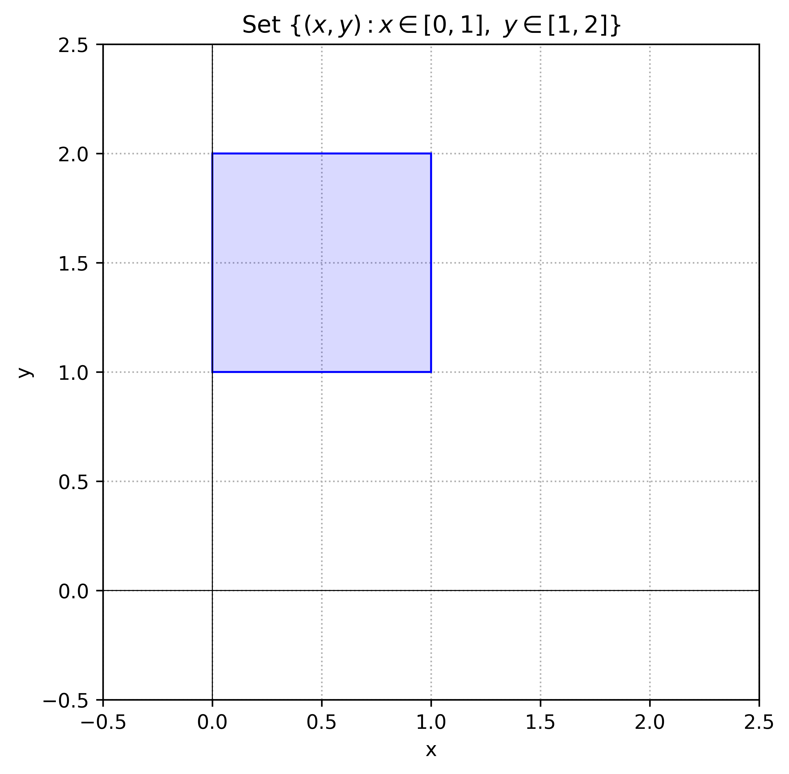
#!/usr/bin/env -S uv run # /// script # dependencies = [ # "matplotlib", # "uuid", # ] # /// # Sketch the set S = {(x, y): x in [0,1], y in [1,2]} import matplotlib matplotlib.use("Agg") # non-interactive backend import uuid import matplotlib.pyplot as plt plt.figure(figsize=(6, 6)) ax = plt.gca() rect = plt.Rectangle((0, 1), 1, 1, color='blue', fill=True, alpha=0.15) ax.add_patch(rect) rect_edge = plt.Rectangle((0, 1), 1, 1, color='blue', fill=False, linewidth=1) ax.add_patch(rect_edge) ax.set_axisbelow(True) # Axes and formatting plt.axhline(0, color="black", linewidth=0.5) plt.axvline(0, color="black", linewidth=0.5) plt.gca().set_aspect("equal", "box") plt.xlim(-0.5, 2.5) plt.ylim(-0.5, 2.5) plt.title(r"Set $\{(x,y): x\in[0,1],\ y\in[1,2]\}$") plt.xlabel("x") plt.ylabel("y") plt.grid(True, linestyle=":") # plt.show() # for interactive environment (jupyter) # Generate UUID filename uid = uuid.uuid4().hex # Save high-resolution outputs plt.savefig(f"{uid}.png", dpi=600, bbox_inches="tight") plt.savefig(f"{uid}.svg", bbox_inches="tight") plt.close()chmod +x plot.py uv run plot.py
{kind=link}
\(\left\{ ( x , y ) : x \in [ - 1 , 1 ] , y = 1 \right\}\)
[!success]- Answer
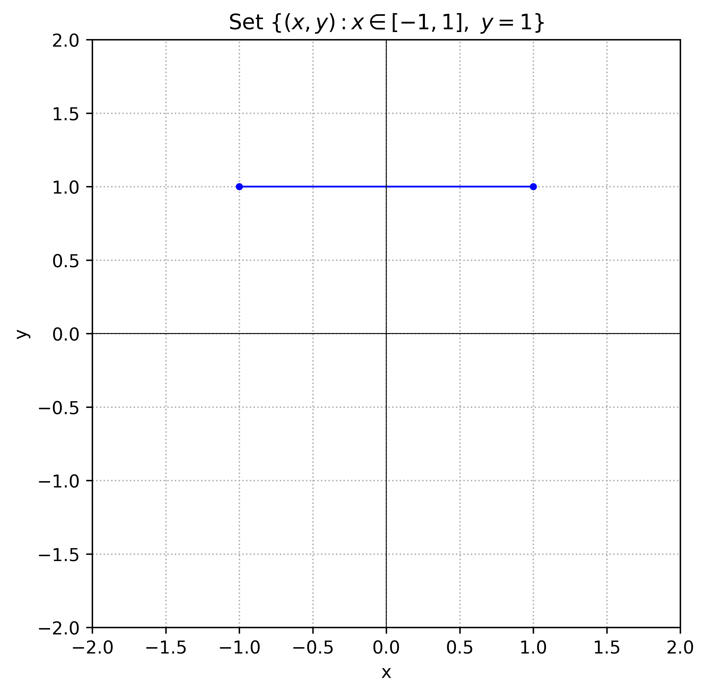
#!/usr/bin/env -S uv run # /// script # dependencies = [ # "numpy", # "matplotlib", # "uuid", # ] # /// # Sketch the set S = {(x, y): x in [-1,1], y = 1} import matplotlib matplotlib.use("Agg") # non-interactive backend import uuid import numpy as np import matplotlib.pyplot as plt x = np.linspace(-1, 1, 300) y = np.ones_like(x) plt.figure(figsize=(6, 6)) # Draw the line segment plt.plot(x, y, color='blue', linewidth=1) # Mark the endpoints (included since x in [-1,1]) plt.plot([-1, 1], [1, 1], color='blue', marker='.', linestyle='None') # Axes and formatting plt.axhline(0, color="black", linewidth=0.5) plt.axvline(0, color="black", linewidth=0.5) plt.gca().set_aspect("equal", "box") plt.xlim(-2, 2) plt.ylim(-2, 2) plt.title(r"Set $\{(x,y): x\in[-1,1],\ y=1\}$") plt.xlabel("x") plt.ylabel("y") plt.grid(True, linestyle=":") # plt.show() # for interactive environment (jupyter) # Generate UUID filename uid = uuid.uuid4().hex # Save high-resolution outputs plt.savefig(f"{uid}.png", dpi=600, bbox_inches="tight") plt.savefig(f"{uid}.svg", bbox_inches="tight") plt.close()chmod +x plot.py uv run plot.py
{kind=link}
\(\left\{ ( x , y ) : x = 2 , y \in [ 0 , 1 ] \right\}\)
[!success]- Answer
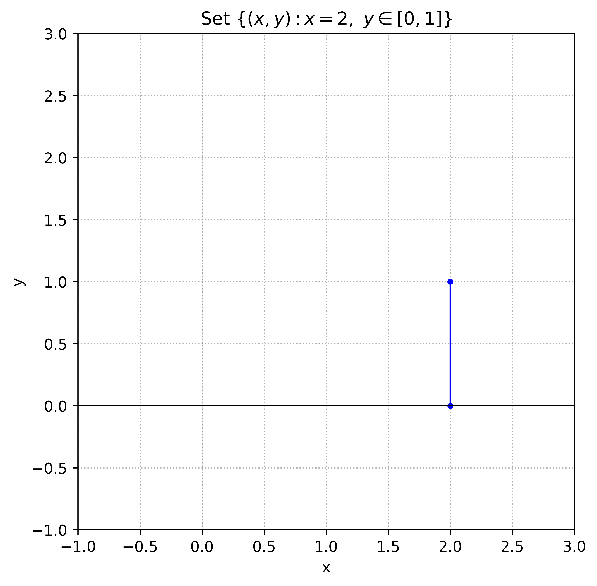
#!/usr/bin/env -S uv run # /// script # dependencies = [ # "numpy", # "matplotlib", # "uuid", # ] # /// # Sketch the set S = {(x, y): x = 2, y in [0,1]} import matplotlib matplotlib.use("Agg") # non-interactive backend import uuid import numpy as np import matplotlib.pyplot as plt y = np.linspace(0, 1, 300) x = np.full_like(y, 2) plt.figure(figsize=(6, 6)) # Draw the line segment plt.plot(x, y, color='blue', linewidth=1) # Mark the endpoints plt.plot([2, 2], [0, 1], color='blue', marker='.', linestyle='None') # Axes and formatting plt.axhline(0, color="black", linewidth=0.5) plt.axvline(0, color="black", linewidth=0.5) plt.gca().set_aspect("equal", "box") plt.xlim(-1, 3) plt.ylim(-1, 3) plt.title(r"Set $\{(x,y): x = 2,\ y \in [0,1]\}$") plt.xlabel("x") plt.ylabel("y") plt.grid(True, linestyle=":") # plt.show() # for interactive environment (jupyter) # Generate UUID filename uid = uuid.uuid4().hex # Save high-resolution outputs plt.savefig(f"{uid}.png", dpi=600, bbox_inches="tight") plt.savefig(f"{uid}.svg", bbox_inches="tight") plt.close()chmod +x plot.py uv run plot.py
{kind=link}
\(\left\{ ( x , y ) : | x | = 2 , y \in [ 0 , 1 ] \right\}\)
[!success]- Answer
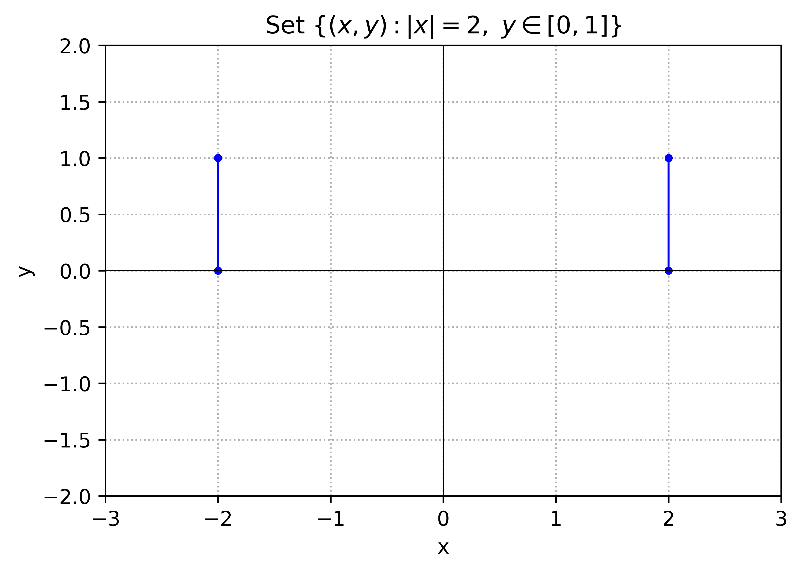
#!/usr/bin/env -S uv run # /// script # dependencies = [ # "numpy", # "matplotlib", # "uuid", # ] # /// # Sketch the set S = {(x, y): |x| = 2, y in [0,1]} import matplotlib matplotlib.use("Agg") # non-interactive backend import uuid import numpy as np import matplotlib.pyplot as plt y = np.linspace(0, 1, 300) x1 = np.full_like(y, 2) x2 = np.full_like(y, -2) plt.figure(figsize=(6, 6)) # Draw the line segment plt.plot(x1, y, color="blue", linewidth=1) plt.plot(x2, y, color="blue", linewidth=1) # Mark the endpoints plt.plot([2, 2], [0, 1], color="blue", marker=".", linestyle="None") plt.plot([-2, -2], [0, 1], color="blue", marker=".", linestyle="None") # Axes and formatting plt.axhline(0, color="black", linewidth=0.5) plt.axvline(0, color="black", linewidth=0.5) plt.gca().set_aspect("equal", "box") plt.xlim(-3, 3) plt.ylim(-2, 2) plt.title(r"Set $\{(x,y): |x| = 2,\ y \in [0,1]\}$") plt.xlabel("x") plt.ylabel("y") plt.grid(True, linestyle=":") # plt.show() # for interactive environment (jupyter) # Generate UUID filename uid = uuid.uuid4().hex # Save high-resolution outputs plt.savefig(f"{uid}.png", dpi=600, bbox_inches="tight") plt.savefig(f"{uid}.svg", bbox_inches="tight") plt.close()chmod +x plot.py uv run plot.py
{kind=link}
\(\left\{ ( x , x ^ { 2 } ) : x \in \mathbb { R } \right\}\)
[!success]- Answer
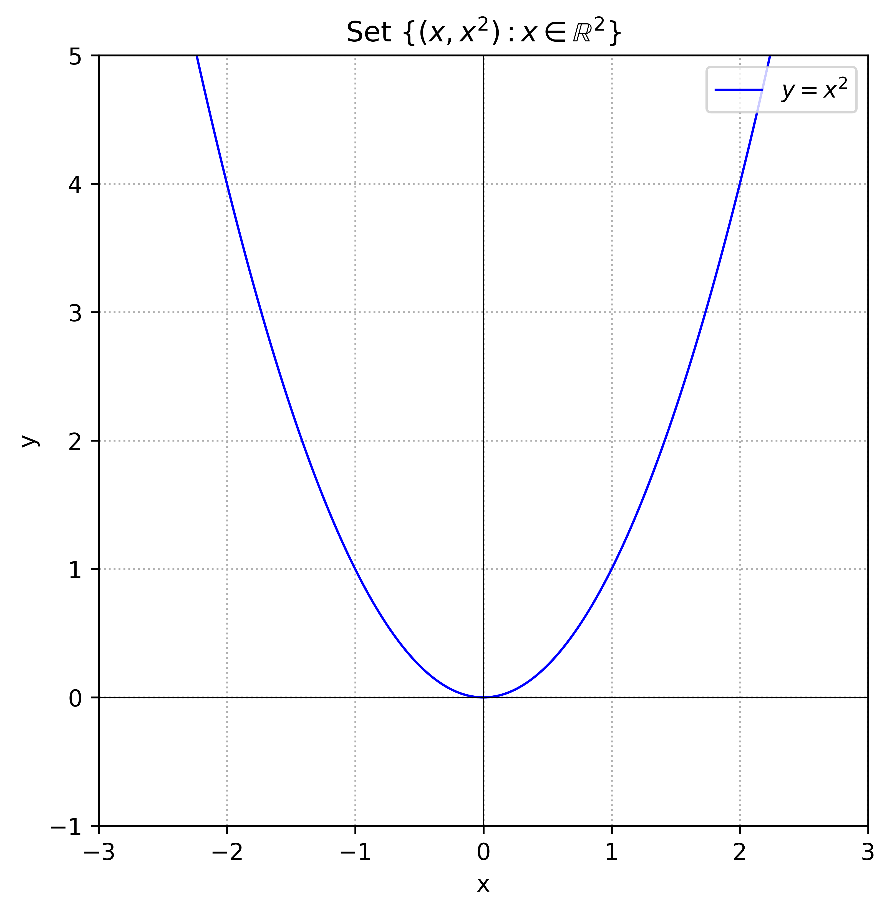
#!/usr/bin/env -S uv run # /// script # dependencies = [ # "numpy", # "matplotlib", # "uuid", # ] # /// # Sketch the set S = {(x, x^2): x in R^2} import matplotlib matplotlib.use("Agg") # non-interactive backend import uuid import numpy as np import matplotlib.pyplot as plt x = np.linspace(-4, 4, 800) y = x**2 plt.figure(figsize=(6, 6)) plt.plot(x, y, color='blue', linewidth=1, label="$y = x^2$") # Axes and formatting plt.axhline(0, color="black", linewidth=0.5) plt.axvline(0, color="black", linewidth=0.5) plt.gca().set_aspect("equal", "box") plt.xlim(-3, 3) plt.ylim(-1, 5) plt.title(r"Set $\{(x,x^2): x \in\mathbb{R}^2\}$") plt.xlabel("x") plt.ylabel("y") plt.grid(True, linestyle=":") plt.legend(loc="upper right") # plt.show() # for interactive environment (jupyter) # Generate UUID filename uid = uuid.uuid4().hex # Save high-resolution outputs plt.savefig(f"{uid}.png", dpi=600, bbox_inches="tight") plt.savefig(f"{uid}.svg", bbox_inches="tight") plt.close()chmod +x plot.py uv run plot.py
{kind=link}
\(\left\{ ( x , y ) : x , y \in \mathbb { R } , x ^ { 2 } + y ^ { 2 } = 1 \right\}\)
[!success]- Answer
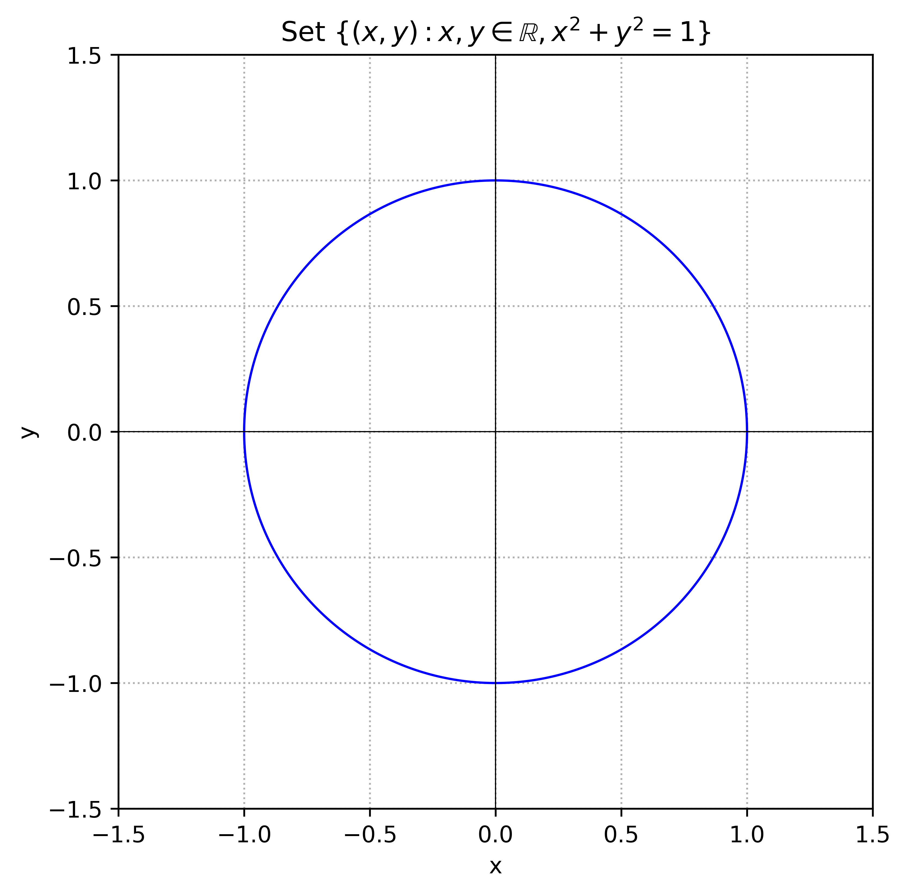
#!/usr/bin/env -S uv run # /// script # dependencies = [ # "numpy", # "matplotlib", # "uuid", # ] # /// # Sketch the set S = {(x, y): x,y in R, x^2 + y^2 = 1} import matplotlib matplotlib.use("Agg") # non-interactive backend import uuid import numpy as np import matplotlib.pyplot as plt # Parameterize the unit circle t = np.linspace(0, 2*np.pi, 800) x = np.cos(t) y = np.sin(t) plt.figure(figsize=(6, 6)) plt.plot(x, y, color='blue', linewidth=1) # Axes and formatting plt.axhline(0, color="black", linewidth=0.5) plt.axvline(0, color="black", linewidth=0.5) plt.gca().set_aspect("equal", "box") plt.xlim(-1.5, 1.5) plt.ylim(-1.5, 1.5) plt.title(r"Set $\{(x,y): x,y \in \mathbb{R}, x^2 + y^2 = 1\}$") plt.xlabel("x") plt.ylabel("y") plt.grid(True, linestyle=":") # plt.show() # for interactive environment (jupyter) # Generate UUID filename uid = uuid.uuid4().hex # Save high-resolution outputs plt.savefig(f"{uid}.png", dpi=600, bbox_inches="tight") plt.savefig(f"{uid}.svg", bbox_inches="tight") plt.close()chmod +x plot.py uv run plot.py
{kind=link}
\(\left\{ ( x , y ) : x , y \in \mathbb { R } , x ^ { 2 } + y ^ { 2 } \leq 1 \right\}\)
[!success]- Answer
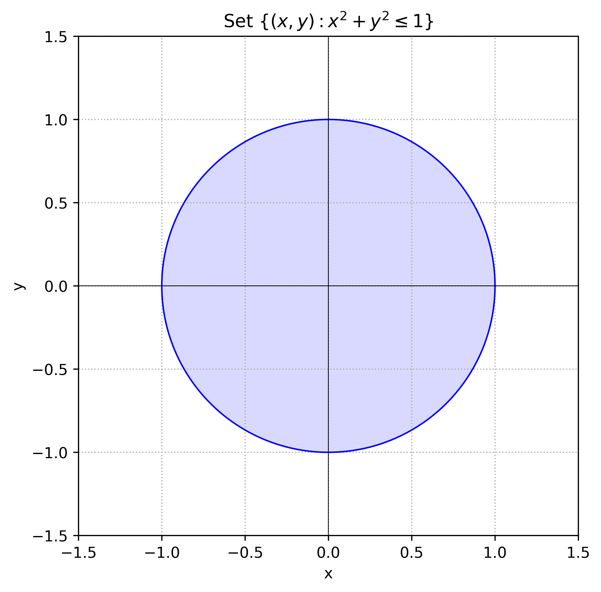
#!/usr/bin/env -S uv run # /// script # dependencies = [ # "numpy", # "matplotlib", # "uuid", # ] # /// # Sketch the set S = {(x, y) in R^2 : x^2 + y^2 <= 1} import matplotlib matplotlib.use("Agg") # non-interactive backend import uuid import numpy as np import matplotlib.pyplot as plt # Parameterize the unit circle t = np.linspace(0, 2*np.pi, 800) x = np.cos(t) y = np.sin(t) plt.figure(figsize=(6, 6)) plt.fill(x, y, color='blue', alpha=0.15, linewidth=1) plt.plot(x, y, color='blue', linewidth=1) # Axes and formatting plt.axhline(0, color="black", linewidth=0.5) plt.axvline(0, color="black", linewidth=0.5) plt.gca().set_aspect("equal", "box") plt.xlim(-1.5, 1.5) plt.ylim(-1.5, 1.5) plt.title(r"Set $\{(x,y): x^2 + y^2 \leq 1\}$") plt.xlabel("x") plt.ylabel("y") plt.grid(True, linestyle=":") # plt.show() # for interactive environment (jupyter) # Generate UUID filename uid = uuid.uuid4().hex # Save high-resolution outputs plt.savefig(f"{uid}.png", dpi=600, bbox_inches="tight") plt.savefig(f"{uid}.svg", bbox_inches="tight") plt.close()chmod +x plot.py uv run plot.py
{kind=link}
\(\left\{ ( x , y ) : x , y \in \mathbb { R } , y \geq x ^ { 2 } - 1 \right\}\)
[!success]- Answer
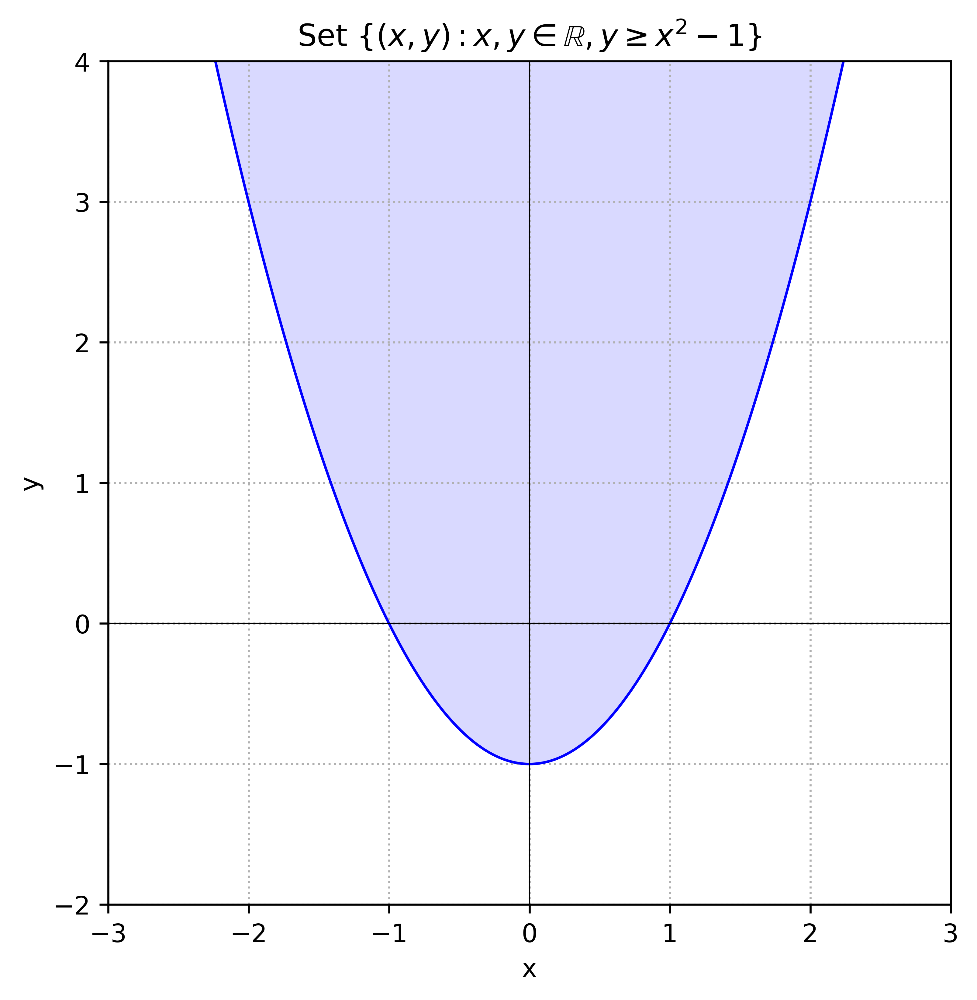
#!/usr/bin/env -S uv run # /// script # dependencies = [ # "numpy", # "matplotlib", # "uuid", # ] # /// # Sketch the set S = {(x, y): x,y in R, y >= x^2 - 1} import matplotlib matplotlib.use("Agg") # non-interactive backend import uuid import numpy as np import matplotlib.pyplot as plt x = np.linspace(-3, 3, 800) y = x**2 - 1 y_top = np.full_like(x, 5.0) plt.figure(figsize=(6, 6)) # Shade the region y >= x^2 - 1 plt.fill_between(x, y, y_top, color='blue', alpha=0.15) # Draw the parabola boundary plt.plot(x, y, linewidth=1, color='blue') # Axes and formatting plt.axhline(0, color="black", linewidth=0.5) plt.axvline(0, color="black", linewidth=0.5) plt.gca().set_aspect("equal", "box") plt.xlim(-3, 3) plt.ylim(-2, 4) plt.title(r"Set $\{(x,y): x,y \in\mathbb{R}, y \geq x^2 - 1\}$") plt.xlabel("x") plt.ylabel("y") plt.grid(True, linestyle=":") # plt.show() # for interactive environment (jupyter) # Generate UUID filename uid = uuid.uuid4().hex # Save high-resolution outputs plt.savefig(f"{uid}.png", dpi=600, bbox_inches="tight") plt.savefig(f"{uid}.svg", bbox_inches="tight") plt.close()chmod +x plot.py uv run plot.py
{kind=link}
\(\left\{ ( x , y ) : x , y \in \mathbb { R } , x > 1 \right\}\)
[!success]- Answer
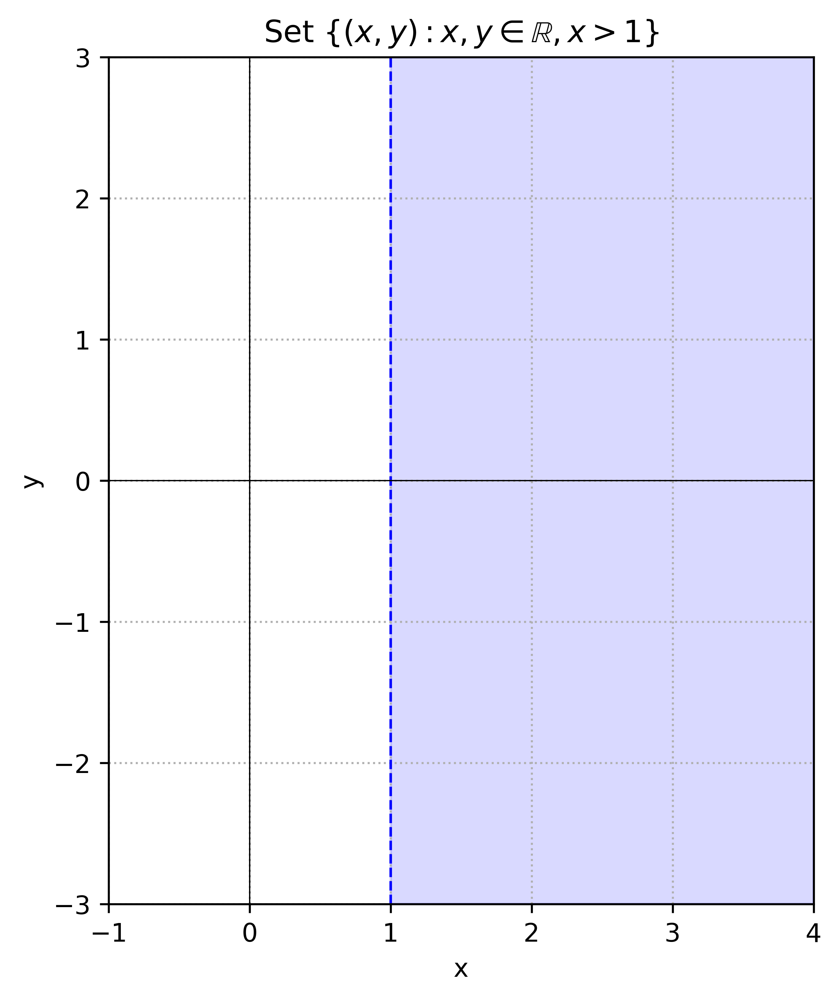
#!/usr/bin/env -S uv run # /// script # dependencies = [ # "numpy", # "matplotlib", # "uuid", # ] # /// # Sketch the set S = {(x, y): x,y in R, x > 1} import matplotlib matplotlib.use("Agg") # non-interactive backend import uuid import numpy as np import matplotlib.pyplot as plt y = np.linspace(-3, 3, 400) plt.figure(figsize=(6, 6)) # Shade the half-plane to the right of x=1 plt.fill_betweenx(y, 1, 4, color='blue', alpha=0.15) # Draw the boundary line x=1 (not included) plt.axvline(1, color='blue', linestyle='--', linewidth=1) # Axes and formatting plt.axhline(0, color="black", linewidth=0.5) plt.axvline(0, color="black", linewidth=0.5) plt.gca().set_aspect("equal", "box") plt.xlim(-1, 4) plt.ylim(-3, 3) plt.title(r"Set $\{(x,y): x,y \in\mathbb{R}, x > 1\}$") plt.xlabel("x") plt.ylabel("y") plt.grid(True, linestyle=":") # plt.show() # for interactive environment (jupyter) # Generate UUID filename uid = uuid.uuid4().hex # Save high-resolution outputs plt.savefig(f"{uid}.png", dpi=600, bbox_inches="tight") plt.savefig(f"{uid}.svg", bbox_inches="tight") plt.close()chmod +x plot.py uv run plot.py
{kind=link}
4
\(\left\{ ( x , x + y ) : x \in \mathbb { R } , y \in \mathbb { Z } \right\}\)
[!success]- Answer
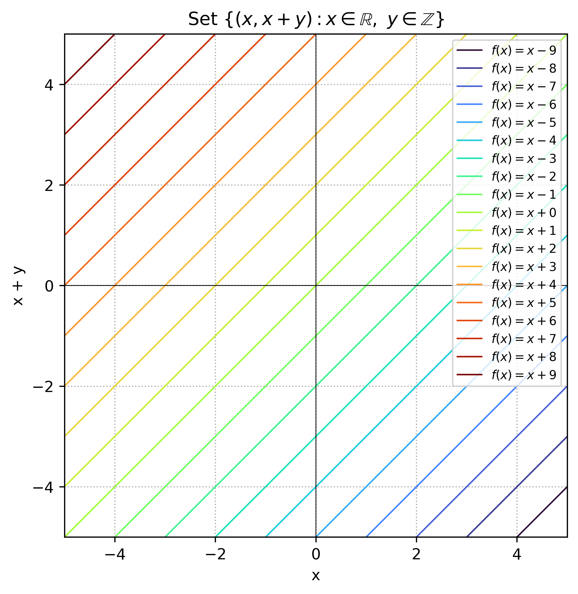
#!/usr/bin/env -S uv run # /// script # dependencies = [ # "numpy", # "matplotlib", # "uuid", # ] # /// # Sketch the set S = {(x, x+y) : x in R, y in Z} import matplotlib matplotlib.use("Agg") # non-interactive backend import uuid import numpy as np import matplotlib.pyplot as plt import matplotlib.cm as cm import matplotlib.colors as mcolors xs = np.linspace(-5, 5, 400) ks = range(-9, 10) cmap = cm.turbo norm = mcolors.Normalize(vmin=min(ks), vmax=max(ks)) plt.figure(figsize=(6, 6)) for k in ks: color = cmap(norm(k)) plt.plot(xs, xs + k, color=color, linewidth=1, label=f"$f(x) = x {"" if k < 0 else "+"} {(k)}$") # Axes and formatting plt.axhline(0, color="black", linewidth=0.5) plt.axvline(0, color="black", linewidth=0.5) plt.gca().set_aspect("equal", "box") plt.xlim(-5, 5) plt.ylim(-5, 5) plt.title(r"Set $\{(x, x+y): x\in\mathbb{R},\ y\in\mathbb{Z}\}$") plt.xlabel("x") plt.ylabel("x + y") plt.grid(True, which="both", linestyle=":") plt.legend(loc="upper right", fontsize=8) # plt.show() # for interactive environment (jupyter) # Generate UUID filename uid = uuid.uuid4().hex # Save high-resolution outputs plt.savefig(f"{uid}.png", dpi=600, bbox_inches="tight") plt.savefig(f"{uid}.svg", bbox_inches="tight") plt.close()49b. \(\left\{ ( x , x + n ) : x \in \mathbb { R } , n \in \mathbb { N } \right\}\)
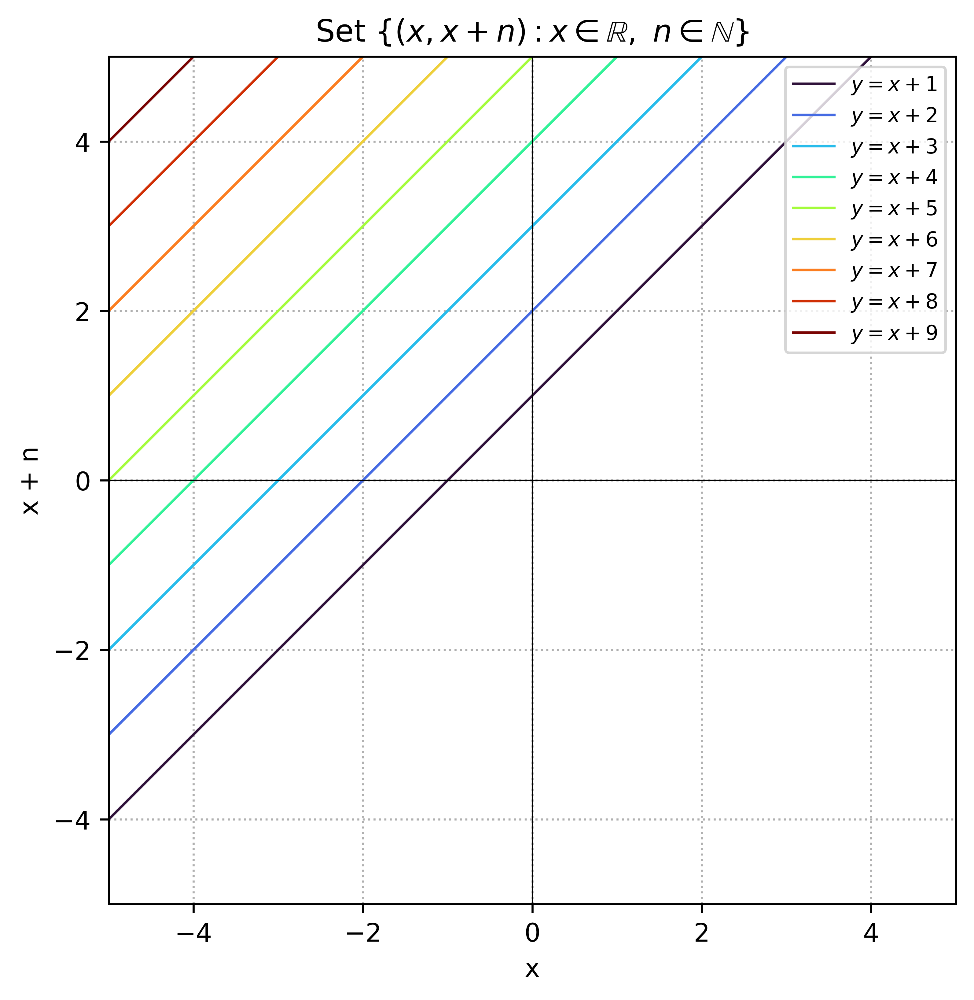
#!/usr/bin/env -S uv run # /// script # dependencies = [ # "numpy", # "matplotlib", # "uuid", # ] # /// # Sketch the set S = {(x, x+n) : x in R, n in N} import matplotlib matplotlib.use("Agg") # non-interactive backend import uuid import numpy as np import matplotlib.pyplot as plt import matplotlib.cm as cm import matplotlib.colors as mcolors xs = np.linspace(-5, 5, 400) ks = range(1, 10) cmap = cm.turbo norm = mcolors.Normalize(vmin=min(ks), vmax=max(ks)) plt.figure(figsize=(6, 6)) for k in ks: color = cmap(norm(k)) plt.plot(xs, xs + k, color=color, linewidth=1, label=f"$y = x {"" if k < 0 else "+"} {(k)}$") # Axes and formatting plt.axhline(0, color="black", linewidth=0.5) plt.axvline(0, color="black", linewidth=0.5) plt.gca().set_aspect("equal", "box") plt.xlim(-5, 5) plt.ylim(-5, 5) plt.title(r"Set $\{(x, x+n): x\in\mathbb{R},\ n\in\mathbb{N}\}$") plt.xlabel("x") plt.ylabel("x + n") plt.grid(True, which="both", linestyle=":") plt.legend(loc="upper right", fontsize=8) # plt.show() # for interactive environment (jupyter) # Generate UUID filename uid = uuid.uuid4().hex # Save high-resolution outputs plt.savefig(f"{uid}.png", dpi=600, bbox_inches="tight") plt.savefig(f"{uid}.svg", bbox_inches="tight") plt.close()chmod +x plot.py uv run plot.py
{kind=link}
{kind=link}
\(\left\{ ( x , { \tfrac { x ^ { 2 } } { y } } ) : x \in \mathbb { R } , y \in \mathbb { N } \right\}\)
[!success]- Answer
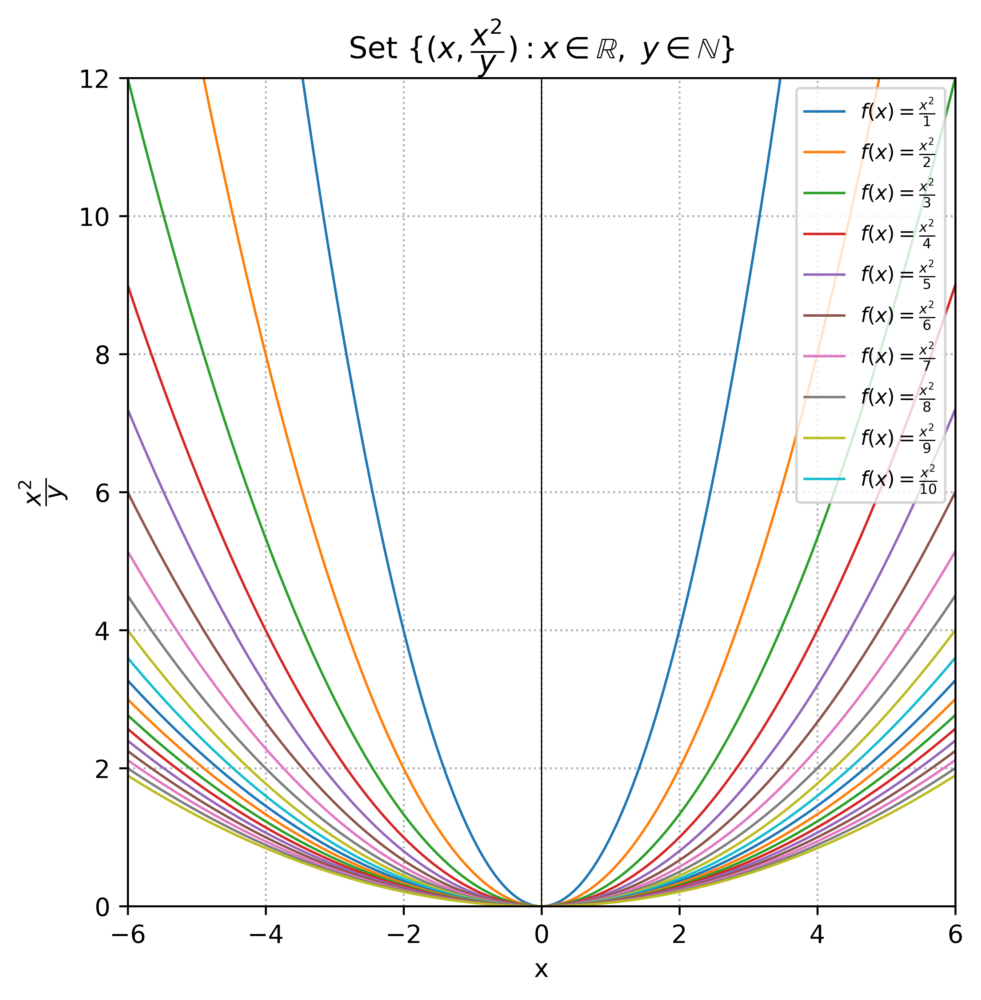
#!/usr/bin/env -S uv run # /// script # dependencies = [ # "numpy", # "matplotlib", # "uuid", # ] # /// # Sketch the set S = {(x, x^2 / y) : x in R, y in N} import matplotlib matplotlib.use("Agg") # non-interactive backend import uuid import numpy as np import matplotlib.pyplot as plt x = np.linspace(-6, 6, 800) ns = list(range(1, 20)) plt.figure(figsize=(6, 6)) for n in ns: label = fr"$f(x)=\frac{{x^2}}{{{n}}}$" if n < 11 else None plt.plot(x, (x**2)/n, linewidth=1, label=label) # Axes and formatting plt.axhline(0, color="black", linewidth=0.5) plt.axvline(0, color="black", linewidth=0.5) plt.gca().set_aspect("equal", "box") plt.xlim(-6, 6) plt.ylim(0, 12) plt.title(r"Set $\{(x, \dfrac{x^2}{y}): x\in\mathbb{R},\ y\in\mathbb{N}\}$") plt.xlabel("x") plt.ylabel(r"$\dfrac{x^2}{y}$") plt.grid(True, linestyle=":") plt.legend(loc="upper right", fontsize=8) # plt.show() # for interactive environment (jupyter) # Generate UUID filename uid = uuid.uuid4().hex # Save high-resolution outputs plt.savefig(f"{uid}.png", dpi=600, bbox_inches="tight") plt.savefig(f"{uid}.svg", bbox_inches="tight") plt.close()chmod +x plot.py uv run plot.py
{kind=link}
\(\left\{ ( x , y ) \in \mathbb { R } ^ { 2 } : ( y - x ) ( y + x ) = 0 \right\}\)
[!success]- Answer
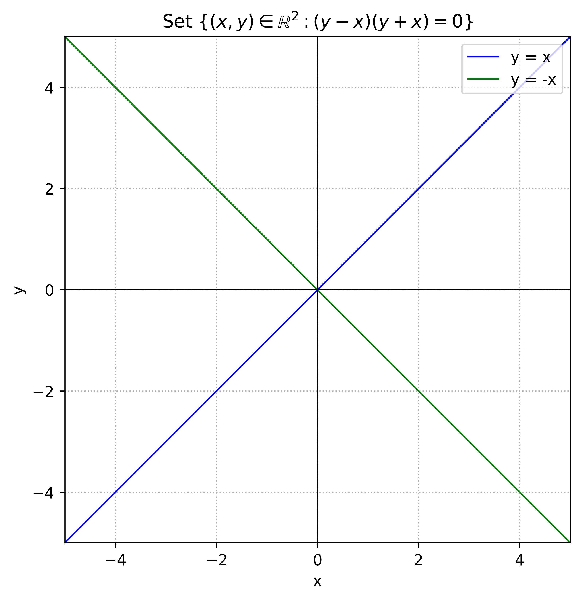
#!/usr/bin/env -S uv run # /// script # dependencies = [ # "numpy", # "matplotlib", # "uuid", # ] # /// # Sketch the set S = {(x, y) in R^2 : (y - x)(y + x) = 0} import matplotlib matplotlib.use("Agg") # non-interactive backend import uuid import numpy as np import matplotlib.pyplot as plt x = np.linspace(-5, 5, 400) y1 = x y2 = -x plt.figure(figsize=(6, 6)) plt.plot(x, y1, linewidth=1, color="blue", label="y = x") plt.plot(x, y2, linewidth=1, color="green", label="y = -x") # Axes and formatting plt.axhline(0, color="black", linewidth=0.5) plt.axvline(0, color="black", linewidth=0.5) plt.gca().set_aspect("equal", "box") plt.xlim(-5, 5) plt.ylim(-5, 5) plt.title(r"Set $\{(x,y)\in\mathbb{R}^2 : (y-x)(y+x)=0\}$") plt.xlabel("x") plt.ylabel("y") plt.grid(True, linestyle=":") plt.legend(loc="upper right") # plt.show() # for interactive environment (jupyter) # Generate UUID filename uid = uuid.uuid4().hex # Save high-resolution outputs plt.savefig(f"{uid}.png", dpi=600, bbox_inches="tight") plt.savefig(f"{uid}.svg", bbox_inches="tight") plt.close()chmod +x plot.py uv run plot.py
{kind=link}
\(\left\{ ( x , y ) \in \mathbb { R } ^ { 2 } : ( y - x ^ { 2 } ) ( y + x ^ { 2 } ) = 0 \right\}\)
[!success]- Answer
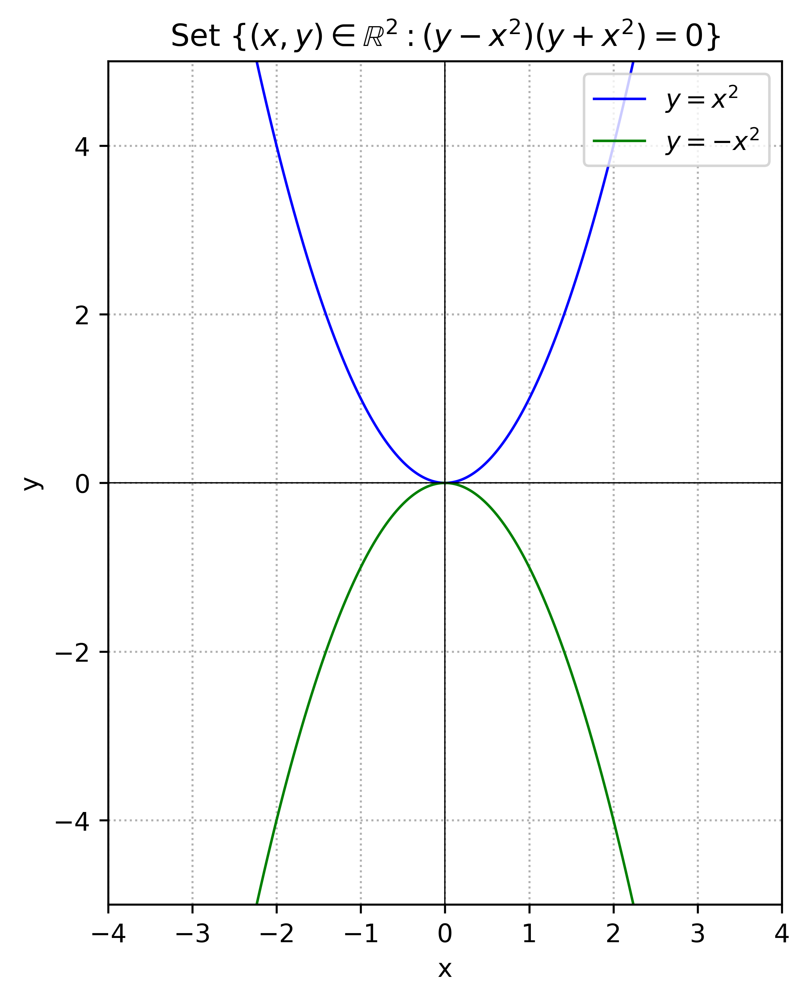
#!/usr/bin/env -S uv run # /// script # dependencies = [ # "numpy", # "matplotlib", # "uuid", # ] # /// # Sketch the set S = {(x, y) in R^2 : (y - x**2)(y + x**2) = 0} import matplotlib matplotlib.use("Agg") # non-interactive backend import uuid import numpy as np import matplotlib.pyplot as plt x = np.linspace(-4, 4, 800) y1 = x**2 y2 = -x**2 plt.figure(figsize=(6, 6)) plt.plot(x, y1, linewidth=1, color='blue', label=r"$y = x^2$") plt.plot(x, y2, linewidth=1, color='green', label=r"$y = -x^2$") # Axes and formatting plt.axhline(0, color="black", linewidth=0.5) plt.axvline(0, color="black", linewidth=0.5) plt.gca().set_aspect("equal", "box") plt.xlim(-4, 4) plt.ylim(-5, 5) plt.title(r"Set $\{(x,y)\in\mathbb{R}^2 : (y-x^2)(y+x^2)=0\}$") plt.xlabel("x") plt.ylabel("y") plt.grid(True, linestyle=":") plt.legend(loc="upper right") # plt.show() # for interactive environment (jupyter) # Generate UUID filename uid = uuid.uuid4().hex # Save high-resolution outputs plt.savefig(f"{uid}.png", dpi=600, bbox_inches="tight") plt.savefig(f"{uid}.svg", bbox_inches="tight") plt.close()chmod +x plot.py uv run plot.py
{kind=link}
1.2 The Cartesian Product¶
Given two sets \(A\) and \(B\) , it is possible to “multiply” them to produce a new set denoted as \(A \times B\) . This operation is called the Cartesian product. To understand it, we must first understand the idea of an ordered pair.
Definition 1.1: An ordered pair is a list \(( x , y )\) of two things \(x\) and y, enclosed in parentheses and separated by a comma.
For example, \((2,4)\) is an ordered pair, as is \((4,2)\). These ordered pairs are different because even though they have the same things in them, the order is different. We write \(( 2 , 4 ) \neq ( 4 , 2 )\). Right away you can see that ordered pairs can be used to describe points on the plane, as was done in calculus, but they are not limited to just that. The things in an ordered pair don’t have to be numbers. You can have ordered pairs of letters, such as \(( \ell , m )\), ordered pairs of sets such as \(\left( \{ 2 , 5 \} , \{ 3 , 2 \} \right)\), even ordered pairs of ordered pairs like \(\big((2,4),(4,2)\big)\). The following are also ordered pairs: \(\big( 2 , \{ 1 , 2 , 3 \} \big)\), \(( \mathbb { R } , ( 0 , 0 ))\). Any list of two things enclosed by parentheses is an ordered pair. Now we are ready to define the Cartesian product.
Definition 1.2: The Cartesian product of two sets \(A\) and \(B\) is another set, denoted as \(A \times B\) and defined as \(A \times B = \left\{ ( a , b ) : a \in A , b \in B \right\}\).
Thus \(A \times B\) is a set of ordered pairs of elements from \(A\) and \(B\). For example, if \(A = \left\{ k , \ell , m \right\}\) and \(B = \left\{ q , r \right\}\), then
Figure 1.1 shows how to make a schematic diagram of \(A \times B\). Line up the elements of \(A\) horizontally and line up the elements of \(B\) vertically, as if \(A\) and \(B\) form an \(x\)- and \(y\) -axis. Then fill in the ordered pairs so that each element \(( x , y )\) is in the column headed by \(x\) and the row headed by \(y\).
 Figure 1.1. A diagram of a Cartesian product
Figure 1.1. A diagram of a Cartesian product
For another example, \(\left\{ 0 , 1 \right\} \times \left\{ 2 , 1 \right\} = \left\{ ( 0 , 2 ) , ( 0 , 1 ) , ( 1 , 2 ) , ( 1 , 1 ) \right\}\). If you are a visual thinker, you may wish to draw a diagram similar to Figure 1.1. The rectangular array of such diagrams give us the following general fact.
Fact 1.1: If \(A\) and \(B\) are finite sets, then \(| A \times B | = | A | \cdot | B |\).
Example 1.3: Let \(A = \{ \unicode{x2680}, \unicode{x2681}, \unicode{x2682}, \unicode{x2683}, \unicode{x2684}, \unicode{x2685} \}\) be the set consisting of the six faces of a dice. The Cartesian product \(A \times A\) is diagramed below. By Fact 1.1 (or by simple counting), \(| A \times A | = 6 \cdot 6 = 3 6\). We might think of \(A \times A\) as the set of possible outcomes in rolling a dice two times in a row. Each element of the product is an ordered pair of the form \(( \text{result of 1st roll }, \text{ result of 2nd roll})\). Such constructions are useful in the study of probability.

The set \(\mathbb { R } \times \mathbb { R } = \left\{ ( x , y ) : x , y \in \mathbb { R } \right\}\) should be very familiar. It can be viewed as the set of points on the Cartesian plane, as drawn in Figure 1.2(a). The set \(\mathbb { R } \times \mathbb { N } = \left\{ ( x , y ) : x \in \mathbb { R } , y \in \mathbb { N } \right\}\) can be regarded as all of the points on the plane whose second coordinate is a natural number. This is illustrated in Figure 1.2(b), which shows that \(\mathbb { R } \times \mathbb { N }\) looks like infinitely many horizontal lines at integer heights above the \(x\)-axis. The set \(\mathbb { N } \times \mathbb { N }\) is the set of all points on the plane whose coordinates are both natural numbers. It looks like a grid of dots in the first quadrant, as illustrated in Figure 1.2(c).
 Figure 1.2. Drawings of some Cartesian products
Figure 1.2. Drawings of some Cartesian products
It is even possible for one factor of a Cartesian product to be a Cartesian product itself, as in \(\mathbb { R } \times ( \mathbb { N } \times \mathbb { Z } ) = \left\{ ( x , ( y , z ) ) : x \in \mathbb { R } , ( y , z ) \in \mathbb { N } \times \mathbb { Z } \right\}\) .
We can also define Cartesian products of three or more sets by moving beyond ordered pairs. An ordered triple is a list \(( x , y , z )\). The Cartesian product of the three sets \(\mathbb { R , N }\) and \(\mathbb { Z }\) is \(\mathbb { R } \times \mathbb { N } \times \mathbb { Z } = \left\{ ( x , y , z ) : x \in \mathbb { R } , y \in \mathbb { N } , z \in \mathbb { Z } \right\}\). Of course there is no reason to stop with ordered triples. In general,
Be mindful of parentheses. There is a slight difference between \(\mathbb { R } \times ( \mathbb { N } \times \mathbb { Z } )\) and \(\mathbb { R } \times \mathbb { N } \times \mathbb { Z }\) . The first is a Cartesian product of two sets; its elements are ordered pairs \(( x , ( y , z ) )\). The second is a Cartesian product of three sets; its elements are ordered triples \(( x , y , z )\). To be sure, in many situations there is no harm in blurring the distinction between expressions like \(( x , ( y , z ) )\) and \(( x , y , z )\) , but for now we regard them as different.
For any set A and positive integer \(n\) , the Cartesian power \(A ^ { n }\) is
In this way, \(\mathbb { R } ^ { 2 }\) is the familiar Cartesian plane and \(\mathbb { R } ^ { 3 }\) is three-dimensional space. You can visualize how, if \(\mathbb { R } ^ { 2 }\) is the plane, then \(\mathbb { Z } ^ { 2 } = \left\{ ( m , n ) : m , n \in \mathbb { Z } \right\}\) is a grid of points on the plane. Likewise, as \(\mathbb { R } ^ { 3 }\) is 3-dimensional space, \(\mathbb { Z } ^ { 3 } = \left\{ ( m , n , p ) : m , n , p \in \mathbb { Z } \right\}\) is a grid of points in space.
In other courses you may encounter sets that are very similar to \(\textstyle \mathbb { R } ^ { n }\), but yet have slightly different shades of meaning. Consider, for example, the set of all two-by-three matrices with entries from \(\mathbb { R }\):
This is not really all that different from the set
The elements of these sets are merely certain arrangements of six real numbers. Despite their similarity, we maintain that \(M \neq \mathbb { R } ^ { 6 }\), for two-bythree matrices are not the same things as sequences of six numbers.
Example 1.4: Represent the two sides of a coin by the set \(S = \left\{ H, T \right\}\) . The possible outcomes of tossing the coin seven times in a row can be described with the Cartesian power \(S ^ { 7 }\). A typical element of \(S ^ { 7 }\) looks like \((H,H,T,H,T,T,T)\), meaning a head was tossed first, then another head, then a tail, then a head followed by three tails. Note that \(\left| S ^ { 7 } \right| = 2 ^ { 7 } = 1 2 8\) , so there are 128 possible outcomes. If this is not clear, then it will be explained fully in Chapter 3.
Exercises for Section 1.2¶
A. Write out the indicated sets by listing their elements between braces.
Suppose \(A = \left\{ 1 , 2 , 3 , 4 \right\}\) and \(B = \left\{ a , c \right\}\). (a) \(A \times B\)
[!success]- Answer \(A \times B = \{1,2,3,4\} \times \{a,c\}\) \(A \times B = \{(1,a),(1,c),(2,a),(2,c),(3,a),(3,c),(4,a),(4,c)\}\)
(b) \(B \times A\)
[!success]- Answer \(B \times A = \{a,c\} \times \{1,2,3,4\}\) \(B \times A = \{(a,1),(a,2),(a,3),(a,4),(c,1),(c,2),(c,3),(c,4)\}\)
(c) \(A \times A\)
[!success]- Answer \(A \times A = \{1,2,3,4\} \times \{1,2,3,4\}\) \(A \times A = \{\) \(\quad (1,1),(1,2),(1,3),(1,4),\) \(\quad (2,1),(2,2),(2,3),(2,4),\) \(\quad (3,1),(3,2),(3,3),(3,4),\) \(\quad (4,1),(4,2),(4,3),(4,4)\) \(\}\)
(d) \(B \times B\)
[!success]- Answer \(B \times B = \{a,c\} \times \{a,c\}\) \(B \times B = \{(a,a),(a,c),(c,a),(c,c)\}\)
(e) \(\varnothing \times B\)
[!success]- Answer \(\varnothing \times B = \{\} \times \{a,c\} = \{\} = \varnothing\)
(f) \((A \times B) \times B\)
[!success]- Answer \((A \times B) \times B = (\{1,2,3,4\} \times \{a,c\}) \times \{a,c\}\) \((A \times B) \times B = (\{(1,a),(1,c),(2,a),(2,c),(3,a),(3,c),(4,a),(4,c)\}) \times \{a,c\}\) \((A \times B) \times B = \{\) \(\quad ((1,a),a),((1,a),c),((1,c),a),((1,c),c),\) \(\quad ((2,a),a),((2,a),c),((2,c),a),((2,c),c),\) \(\quad ((3,a),a),((3,a),c),((3,c),a),((3,c),c),\) \(\quad ((4,a),a),((4,a),c),((4,c),a),((4,c),c)\) \(\}\)
(g) \(A \times (B \times B)\)
[!success]- Answer \(A \times (B \times B) = \{1,2,3,4\} \times (\{a,c\} \times \{a,c\})\) \(A \times (B \times B) = \{1,2,3,4\} \times \{(a,a),(a,c),(c,a),(c,c)\}\) \(A \times (B \times B) = \{\) \(\quad (1,(a,a)),(1,(a,c)),(1,(c,a)),(1,(c,c)),\) \(\quad (2,(a,a)),(2,(a,c)),(2,(c,a)),(2,(c,c)),\) \(\quad (3,(a,a)),(3,(a,c)),(3,(c,a)),(3,(c,c)),\) \(\quad (4,(a,a)),(4,(a,c)),(4,(c,a)),(4,(c,c))\) \(\}\)
(h) \(B^3\)
[!success]- Answer \(B^{3} = B \times B \times B = \{a,c\} \times \{a,c\} \times \{a,c\}\) \(B^{3} = \{(a,a,a),(a,a,c),(a,c,a),(a,c,c),(c,a,a),(c,a,c),(c,c,a),(c,c,c)\}\)
Suppose \(A = \left\{ \pi , e , 0 \right\}\) and \(B = \left\{ 0 , 1 \right\}\) . (a) \(A \times B\)
[!success]- Answer \(A \times B = \{\pi,e,0\} \times \{0,1\}\) \(A \times B = \{(\pi,0),(\pi,1),(e,0),(e,1),(0,0),(0,1)\}\)
(b) \(B \times A\)
[!success]- Answer \(B \times A = \{0,1\} \times \{\pi,e,0\}\) \(B \times A = \{(0,\pi),(0,e),(0,0),(1,\pi),(1,e),(1,0)\}\)
(c) \(A \times A\)
[!success]- Answer \(A \times A = \{\pi,e,0\} \times \{\pi,e,0\}\) \(A \times A = \{\) \(\quad (\pi,\pi),(\pi,e),(\pi,0),\) \(\quad (e,\pi),(e,e),(e,0),\) \(\quad (0,\pi),(0,e),(0,0)\) \(\}\) (9 ordered pairs).
(d) \(B \times B\)
[!success]- Answer \(B \times B = \{0,1\} \times \{0,1\}\) \(B \times B = \{(0,0),(0,1),(1,0),(1,1)\}\)
(e) \(A \times \varnothing\)
[!success]- Answer \(A \times \varnothing = \{\pi,e,0\} \times \{\} = \{\} = \varnothing\)
(f) \((A \times B) \times B\)
[!success]- Answer \((A \times B) \times B = (\{\pi,e,0\} \times \{0,1\}) \times \{0,1\}\) \((A \times B) \times B = \{(\pi,0),(\pi,1),(e,0),(e,1),(0,0),(0,1)\} \times \{0,1\}\) \((A \times B) \times B = \{\) \(\quad ((\pi,0),0),((\pi,0),1),\) \(\quad ((\pi,1),0),((\pi,1),1),\) \(\quad ((e,0),0),((e,0),1),\) \(\quad ((e,1),0),((e,1),1),\) \(\quad ((0,0),0),((0,0),1),\) \(\quad ((0,1),0),((0,1),1)\) \(\}\)
(g) \(A \times (B \times B)\)
[!success]- Answer \(A \times (B \times B) = \{\pi,e,0\} \times (\{0,1\} \times \{0,1\})\) \(A \times (B \times B) = \{\pi,e,0\} \times \{(0,0),(0,1),(1,0),(1,1)\}\) \(A \times (B \times B) = \{\) \(\quad (\pi,(0,0)),(\pi,(0,1)),(\pi,(1,0)),(\pi,(1,1)),\) \(\quad (e,(0,0)),(e,(0,1)),(e,(1,0)),(e,(1,1)),\) \(\quad (0,(0,0)),(0,(0,1)),(0,(1,0)),(0,(1,1))\) \(\}\)
(h) \(A \times B \times B\)
[!success]- Answer \(A \times B \times B = \{\pi,e,0\} \times \{0,1\} \times \{0,1\}\) \(A \times B \times B = \{\) \(\quad (\pi,0,0),(\pi,0,1),(\pi,1,0),(\pi,1,1),\) \(\quad (e,0,0),(e,0,1),(e,1,0),(e,1,1),\) \(\quad (0,0,0),(0,0,1),(0,1,0),(0,1,1)\) \(\}\) These are 12 ordered triples, i.e. all triples with first coordinate in \(\{\pi,e,0\}\) and the other two in \(\{0,1\}\).
\(\left\{ x \in \mathbb { R } : x ^ { 2 } = 2 \right\} \times \left\{ a , c , e \right\}\)
[!success]- Answer \(\{x\in\mathbb{R}:x^{2}=2\} \times \{a,c,e\} = \{-\sqrt{2},\sqrt{2}\} \times \{a,c,e\}\) \(\{-\sqrt{2},\sqrt{2}\} \times \{a,c,e\} = \{(-\sqrt{2},a),(-\sqrt{2},c),(-\sqrt{2},e),(\sqrt{2},a),(\sqrt{2},c),(\sqrt{2},e)\}\)
\(\left\{ n \in \mathbb { Z } : 2 < n < 5 \right\} \times \left\{ n \in \mathbb { Z } : | n | = 5 \right\}\)
[!success]- Answer \(\{n\in\mathbb{Z}:2<n<5\} \times \{n\in\mathbb{Z}:|n|=5\} = \{3,4\} \times \{-5,5\}\) \(\{3,4\} \times \{-5,5\} = \{(3,-5),(3,5),(4,-5),(4,5)\}\)
\(\left\{ x \in \mathbb { R } : x ^ { 2 } = 2 \right\} \times \left\{ x \in \mathbb { R } : \left| x \right| = 2 \right\}\)
[!success]- Answer \(\{x\in\mathbb{R}:x^{2}=2\} \times \{x\in\mathbb{R}:|x|=2\} = \{-\sqrt{2},\sqrt{2}\} \times \{-2,2\}\) \(\{-\sqrt{2},\sqrt{2}\} \times \{-2,2\} = \{(-\sqrt{2},-2),(-\sqrt{2},2), (\sqrt{2},-2),(\sqrt{2},2)\}\)
\(\left\{ x \in \mathbb { R } : x ^ { 2 } = x \right\} \times \left\{ x \in \mathbb { N } : x ^ { 2 } = x \right\}\)
[!success]- Answer Note: \(0\) is not included in \(\mathbb{N}\), and thus \(\mathbb{N} = \{1,2,3,\dots\}\). \(\{x\in\mathbb{R}:x^{2}=x\} \times \{x\in\mathbb{N}:x^{2}=x\} = \{0,1\} \times \{1\}\) \(\{0,1\} \times \{1\} = \{(0,1),(1,1)\}\)
\(\{ \varnothing \} \times \{ 0 , \varnothing \} \times \{ 0 , 1 \}\)
[!success]- Answer \(\{\varnothing\} \times \{0,\varnothing\} \times \{0,1\} = \{\{\}\} \times \{0,\{\}\} \times \{0,1\}\) \(\{\varnothing\} \times \{0,\varnothing\} \times \{0,1\} = \{(\varnothing,0,0),(\varnothing,0,1), (\varnothing,\varnothing,0),(\varnothing,\varnothing,1)\}\)
\(\{0,1\}^4\)
[!success]- Answer \(\{0,1\}^{4} = \{0,1\} \times \{0,1\} \times \{0,1\} \times \{0,1\}\) \(\{0,1\}^{4} = \{\) \(\quad (0,0,0,0),(0,0,0,1),(0,0,1,0),(0,0,1,1),\) \(\quad (0,1,0,0),(0,1,0,1),(0,1,1,0),(0,1,1,1),\) \(\quad (1,0,0,0),(1,0,0,1),(1,0,1,0),(1,0,1,1),\) \(\quad (1,1,0,0),(1,1,0,1),(1,1,1,0),(1,1,1,1)\) \(\}\) i.e. 16 \(4\)-tuples of \(0\)’s and \(1\)’s.
B. Sketch these Cartesian products on the \(x\)-\(y\) plane \(\mathbb { R } ^ { 2 }\) (or \(\mathbb { R } ^ { 3 }\) for the last two). 9. \(\{ 1 , 2 , 3 \} \times \{ - 1 , 0 , 1 \}\)
[!success]- Answer \(\{1,2,3\} \times \{-1,0,1\} = \{(1,-1),(1,0),(1,1),(2,-1),(2,0),(2,1),(3,-1),(3,0),(3,1)\}\)
 #!/usr/bin/env -S uv run # /// script # dependencies = [ # "numpy", # "matplotlib", # "uuid", # ] # /// """Sketch the Cartesian product of {1,2,3} x {-1,0,1} in R^2.""" import matplotlib matplotlib.use("Agg") # non-interactive backend import uuid import numpy as np import matplotlib.pyplot as plt plt.figure(figsize=(6, 6)) plt.plot([1,1,1,2,2,2,3,3,3], [-1,0,1,-1,0,1,-1,0,1], color='blue', marker='.', linestyle='None') # Axes and formatting plt.axhline(0, color="black", linewidth=0.5) plt.axvline(0, color="black", linewidth=0.5) plt.gca().set_aspect("equal", "box") plt.xlim(-4, 4) plt.ylim(-4, 4) plt.title(r"Set $\{1,2,3\} \times \{-1,0,1\}$ in $\mathbb{R}^{2}$") plt.xlabel("x") plt.ylabel("y") plt.grid(True, linestyle=":") # plt.show() # for interactive environment (jupyter) # Generate UUID filename uid = uuid.uuid4().hex # Save high-resolution outputs plt.savefig(f"{uid}.png", dpi=600, bbox_inches="tight") plt.savefig(f"{uid}.svg", bbox_inches="tight") plt.close()chmod +x plot.py uv run plot.py
#!/usr/bin/env -S uv run # /// script # dependencies = [ # "numpy", # "matplotlib", # "uuid", # ] # /// """Sketch the Cartesian product of {1,2,3} x {-1,0,1} in R^2.""" import matplotlib matplotlib.use("Agg") # non-interactive backend import uuid import numpy as np import matplotlib.pyplot as plt plt.figure(figsize=(6, 6)) plt.plot([1,1,1,2,2,2,3,3,3], [-1,0,1,-1,0,1,-1,0,1], color='blue', marker='.', linestyle='None') # Axes and formatting plt.axhline(0, color="black", linewidth=0.5) plt.axvline(0, color="black", linewidth=0.5) plt.gca().set_aspect("equal", "box") plt.xlim(-4, 4) plt.ylim(-4, 4) plt.title(r"Set $\{1,2,3\} \times \{-1,0,1\}$ in $\mathbb{R}^{2}$") plt.xlabel("x") plt.ylabel("y") plt.grid(True, linestyle=":") # plt.show() # for interactive environment (jupyter) # Generate UUID filename uid = uuid.uuid4().hex # Save high-resolution outputs plt.savefig(f"{uid}.png", dpi=600, bbox_inches="tight") plt.savefig(f"{uid}.svg", bbox_inches="tight") plt.close()chmod +x plot.py uv run plot.py
\(\{ - 1 , 0 , 1 \} \times \{ 1 , 2 , 3 \}\)
[!success]- Answer \(\{-1,0,1\} \times \{1,2,3\} = \{(-1,1),(-1,2),(-1,3),(0,1),(0,2),(0,3),(1,1),(1,2),(1,3)\}\)
 #!/usr/bin/env -S uv run # /// script # dependencies = [ # "numpy", # "matplotlib", # "uuid", # ] # /// """Sketch the Cartesian product of {-1,0,1} x {1,2,3} in R^2.""" import matplotlib matplotlib.use("Agg") # non-interactive backend import uuid import numpy as np import matplotlib.pyplot as plt plt.figure(figsize=(6, 6)) plt.plot([-1,-1,-1,0,0,0,1,1,1], [1,2,3,1,2,3,1,2,3], color='blue', marker='.', linestyle='None') # Axes and formatting plt.axhline(0, color="black", linewidth=0.5) plt.axvline(0, color="black", linewidth=0.5) plt.gca().set_aspect("equal", "box") plt.xlim(-4, 4) plt.ylim(-4, 4) plt.title(r"Set $\{-1,0,1\} \times \{1,2,3\}$ in $\mathbb{R}^{2}$") plt.xlabel("x") plt.ylabel("y") plt.grid(True, linestyle=":") # plt.show() # for interactive environment (jupyter) # Generate UUID filename uid = uuid.uuid4().hex # Save high-resolution outputs plt.savefig(f"{uid}.png", dpi=600, bbox_inches="tight") plt.savefig(f"{uid}.svg", bbox_inches="tight") plt.close()chmod +x plot.py uv run plot.py
#!/usr/bin/env -S uv run # /// script # dependencies = [ # "numpy", # "matplotlib", # "uuid", # ] # /// """Sketch the Cartesian product of {-1,0,1} x {1,2,3} in R^2.""" import matplotlib matplotlib.use("Agg") # non-interactive backend import uuid import numpy as np import matplotlib.pyplot as plt plt.figure(figsize=(6, 6)) plt.plot([-1,-1,-1,0,0,0,1,1,1], [1,2,3,1,2,3,1,2,3], color='blue', marker='.', linestyle='None') # Axes and formatting plt.axhline(0, color="black", linewidth=0.5) plt.axvline(0, color="black", linewidth=0.5) plt.gca().set_aspect("equal", "box") plt.xlim(-4, 4) plt.ylim(-4, 4) plt.title(r"Set $\{-1,0,1\} \times \{1,2,3\}$ in $\mathbb{R}^{2}$") plt.xlabel("x") plt.ylabel("y") plt.grid(True, linestyle=":") # plt.show() # for interactive environment (jupyter) # Generate UUID filename uid = uuid.uuid4().hex # Save high-resolution outputs plt.savefig(f"{uid}.png", dpi=600, bbox_inches="tight") plt.savefig(f"{uid}.svg", bbox_inches="tight") plt.close()chmod +x plot.py uv run plot.py
\([ 0 , 1 ] \times [ 0 , 1 ]\)
[!success]- Answer \([0,1] \times [0,1]\) is the closed unit square: all points \((x,y)\) with \(0 \le x \le 1\) and \(0 \le y \le 1\).
 #!/usr/bin/env -S uv run # /// script # dependencies = [ # "numpy", # "matplotlib", # "uuid", # ] # /// """Sketch the Cartesian product of [0,1] x [0,1] in R^2.""" import matplotlib matplotlib.use("Agg") # non-interactive backend import uuid import numpy as np import matplotlib.pyplot as plt plt.figure(figsize=(6, 6)) ax = plt.gca() rect = plt.Rectangle((0, 0), 1, 1, color='blue', fill=True, alpha=0.15) ax.add_patch(rect) rect_edge = plt.Rectangle((0, 0), 1, 1, color='blue', fill=False, linewidth=1.1) ax.add_patch(rect_edge) ax.set_axisbelow(True) # Axes and formatting plt.axhline(0, color="black", linewidth=0.5) plt.axvline(0, color="black", linewidth=0.5) plt.gca().set_aspect("equal", "box") plt.xlim(-2, 2) plt.ylim(-2, 2) plt.title(r"Set $[0,1] \times [0,1]$ in $\mathbb{R}^{2}$") plt.xlabel("x") plt.ylabel("y") plt.grid(True, linestyle=":") # plt.show() # for interactive environment (jupyter) # Generate UUID filename uid = uuid.uuid4().hex # Save high-resolution outputs plt.savefig(f"{uid}.png", dpi=600, bbox_inches="tight") plt.savefig(f"{uid}.svg", bbox_inches="tight") plt.close()chmod +x plot.py uv run plot.py
#!/usr/bin/env -S uv run # /// script # dependencies = [ # "numpy", # "matplotlib", # "uuid", # ] # /// """Sketch the Cartesian product of [0,1] x [0,1] in R^2.""" import matplotlib matplotlib.use("Agg") # non-interactive backend import uuid import numpy as np import matplotlib.pyplot as plt plt.figure(figsize=(6, 6)) ax = plt.gca() rect = plt.Rectangle((0, 0), 1, 1, color='blue', fill=True, alpha=0.15) ax.add_patch(rect) rect_edge = plt.Rectangle((0, 0), 1, 1, color='blue', fill=False, linewidth=1.1) ax.add_patch(rect_edge) ax.set_axisbelow(True) # Axes and formatting plt.axhline(0, color="black", linewidth=0.5) plt.axvline(0, color="black", linewidth=0.5) plt.gca().set_aspect("equal", "box") plt.xlim(-2, 2) plt.ylim(-2, 2) plt.title(r"Set $[0,1] \times [0,1]$ in $\mathbb{R}^{2}$") plt.xlabel("x") plt.ylabel("y") plt.grid(True, linestyle=":") # plt.show() # for interactive environment (jupyter) # Generate UUID filename uid = uuid.uuid4().hex # Save high-resolution outputs plt.savefig(f"{uid}.png", dpi=600, bbox_inches="tight") plt.savefig(f"{uid}.svg", bbox_inches="tight") plt.close()chmod +x plot.py uv run plot.py
\([ - 1 , 1 ] \times [ 1 , 2 ]\)
[!success]- Answer \([-1,1] \times [1,2]\) is the rectangle of all points \((x,y)\) with \(-1 \le x \le 1\) and \(1 \le y \le 2\).
 #!/usr/bin/env -S uv run # /// script # dependencies = [ # "numpy", # "matplotlib", # "uuid", # ] # /// """Sketch the Cartesian product of [-1,1] x [1,2] in R^2.""" import matplotlib matplotlib.use("Agg") # non-interactive backend import uuid import numpy as np import matplotlib.pyplot as plt plt.figure(figsize=(6, 6)) ax = plt.gca() rect = plt.Rectangle((-1, 1), 2, 1, color='blue', fill=True, alpha=0.15) ax.add_patch(rect) rect_edge = plt.Rectangle((-1, 1), 2, 1, color='blue', fill=False, linewidth=1.1) ax.add_patch(rect_edge) ax.set_axisbelow(True) # Axes and formatting plt.axhline(0, color="black", linewidth=0.5) plt.axvline(0, color="black", linewidth=0.5) plt.gca().set_aspect("equal", "box") plt.xlim(-3, 3) plt.ylim(-3, 3) plt.title(r"Set $[-1,1] \times [1,2]$ in $\mathbb{R}^{2}$") plt.xlabel("x") plt.ylabel("y") plt.grid(True, linestyle=":") # plt.show() # for interactive environment (jupyter) # Generate UUID filename uid = uuid.uuid4().hex # Save high-resolution outputs plt.savefig(f"{uid}.png", dpi=600, bbox_inches="tight") plt.savefig(f"{uid}.svg", bbox_inches="tight") plt.close()chmod +x plot.py uv run plot.py
#!/usr/bin/env -S uv run # /// script # dependencies = [ # "numpy", # "matplotlib", # "uuid", # ] # /// """Sketch the Cartesian product of [-1,1] x [1,2] in R^2.""" import matplotlib matplotlib.use("Agg") # non-interactive backend import uuid import numpy as np import matplotlib.pyplot as plt plt.figure(figsize=(6, 6)) ax = plt.gca() rect = plt.Rectangle((-1, 1), 2, 1, color='blue', fill=True, alpha=0.15) ax.add_patch(rect) rect_edge = plt.Rectangle((-1, 1), 2, 1, color='blue', fill=False, linewidth=1.1) ax.add_patch(rect_edge) ax.set_axisbelow(True) # Axes and formatting plt.axhline(0, color="black", linewidth=0.5) plt.axvline(0, color="black", linewidth=0.5) plt.gca().set_aspect("equal", "box") plt.xlim(-3, 3) plt.ylim(-3, 3) plt.title(r"Set $[-1,1] \times [1,2]$ in $\mathbb{R}^{2}$") plt.xlabel("x") plt.ylabel("y") plt.grid(True, linestyle=":") # plt.show() # for interactive environment (jupyter) # Generate UUID filename uid = uuid.uuid4().hex # Save high-resolution outputs plt.savefig(f"{uid}.png", dpi=600, bbox_inches="tight") plt.savefig(f"{uid}.svg", bbox_inches="tight") plt.close()chmod +x plot.py uv run plot.py
\(\{ 1 , 1 . 5 , 2 \} \times [ 1 , 2 ]\)
[!success]- Answer Three vertical line segments: for \(x=1,1.5,2\) and \(1\le y\le2\).
 #!/usr/bin/env -S uv run # /// script # dependencies = [ # "numpy", # "matplotlib", # "uuid", # ] # /// """Sketch the Cartesian product of {1,1.5,2} x [1,2] in R^2.""" import matplotlib matplotlib.use("Agg") # non-interactive backend import uuid import numpy as np import matplotlib.pyplot as plt plt.figure(figsize=(6, 6)) y = np.linspace(1, 2, 100) x1 = np.full_like(y, 1) x2 = np.full_like(y, 1.5) x3 = np.full_like(y, 2) plt.plot(x1, y, color='blue', linewidth=1) plt.plot(x2, y, color='blue', linewidth=1) plt.plot(x3, y, color='blue', linewidth=1) plt.plot([1,1], [1,2], color='blue', marker='.', linestyle='None') plt.plot([1.5,1.5], [1,2], color='blue', marker='.', linestyle='None') plt.plot([2,2], [1,2], color='blue', marker='.', linestyle='None') # Axes and formatting plt.axhline(0, color="black", linewidth=0.5) plt.axvline(0, color="black", linewidth=0.5) plt.gca().set_aspect("equal", "box") plt.xlim(-3, 3) plt.ylim(-3, 3) plt.title(r"Set $\{1,1.5,2\} \times [1,2]$ in $\mathbb{R}^{2}$") plt.xlabel("x") plt.ylabel("y") plt.grid(True, linestyle=":") # plt.show() # for interactive environment (jupyter) # Generate UUID filename uid = uuid.uuid4().hex # Save high-resolution outputs plt.savefig(f"{uid}.png", dpi=600, bbox_inches="tight") plt.savefig(f"{uid}.svg", bbox_inches="tight") plt.close()chmod +x plot.py uv run plot.py
#!/usr/bin/env -S uv run # /// script # dependencies = [ # "numpy", # "matplotlib", # "uuid", # ] # /// """Sketch the Cartesian product of {1,1.5,2} x [1,2] in R^2.""" import matplotlib matplotlib.use("Agg") # non-interactive backend import uuid import numpy as np import matplotlib.pyplot as plt plt.figure(figsize=(6, 6)) y = np.linspace(1, 2, 100) x1 = np.full_like(y, 1) x2 = np.full_like(y, 1.5) x3 = np.full_like(y, 2) plt.plot(x1, y, color='blue', linewidth=1) plt.plot(x2, y, color='blue', linewidth=1) plt.plot(x3, y, color='blue', linewidth=1) plt.plot([1,1], [1,2], color='blue', marker='.', linestyle='None') plt.plot([1.5,1.5], [1,2], color='blue', marker='.', linestyle='None') plt.plot([2,2], [1,2], color='blue', marker='.', linestyle='None') # Axes and formatting plt.axhline(0, color="black", linewidth=0.5) plt.axvline(0, color="black", linewidth=0.5) plt.gca().set_aspect("equal", "box") plt.xlim(-3, 3) plt.ylim(-3, 3) plt.title(r"Set $\{1,1.5,2\} \times [1,2]$ in $\mathbb{R}^{2}$") plt.xlabel("x") plt.ylabel("y") plt.grid(True, linestyle=":") # plt.show() # for interactive environment (jupyter) # Generate UUID filename uid = uuid.uuid4().hex # Save high-resolution outputs plt.savefig(f"{uid}.png", dpi=600, bbox_inches="tight") plt.savefig(f"{uid}.svg", bbox_inches="tight") plt.close()chmod +x plot.py uv run plot.py
\([ 1 , 2 ] \times \left\{ 1 , 1 . 5 , 2 \right\}\)
[!success]- Answer Three horizontal line segments: for \(y=1,1.5,2\) and \(1\le x\le2\).
 #!/usr/bin/env -S uv run # /// script # dependencies = [ # "numpy", # "matplotlib", # "uuid", # ] # /// #!/usr/bin/env -S uv run # /// script # dependencies = [ # "numpy", # "matplotlib", # "uuid", # ] # /// """Sketch the Cartesian product of [1,2] x {1,1.5,2} in R^2.""" import matplotlib matplotlib.use("Agg") # non-interactive backend import uuid import numpy as np import matplotlib.pyplot as plt plt.figure(figsize=(6, 6)) x = np.linspace(1, 2, 100) y1 = np.full_like(x, 1) y2 = np.full_like(x, 1.5) y3 = np.full_like(x, 2) plt.plot(x, y1, color='blue', linewidth=1) plt.plot(x, y2, color='blue', linewidth=1) plt.plot(x, y3, color='blue', linewidth=1) plt.plot([1,2], [1,1], color='blue', marker='.', linestyle='None') plt.plot([1,2], [1.5,1.5], color='blue', marker='.', linestyle='None') plt.plot([1,2], [2,2], color='blue', marker='.', linestyle='None') # Axes and formatting plt.axhline(0, color="black", linewidth=0.5) plt.axvline(0, color="black", linewidth=0.5) plt.gca().set_aspect("equal", "box") plt.xlim(-3, 3) plt.ylim(-3, 3) plt.title(r"Set $[1,2] \times \{1,1.5,2\}$ in $\mathbb{R}^{2}$") plt.xlabel("x") plt.ylabel("y") plt.grid(True, linestyle=":") # plt.show() # for interactive environment (jupyter) # Generate UUID filename uid = uuid.uuid4().hex # Save high-resolution outputs plt.savefig(f"{uid}.png", dpi=600, bbox_inches="tight") plt.savefig(f"{uid}.svg", bbox_inches="tight") plt.close()chmod +x plot.py uv run plot.py
#!/usr/bin/env -S uv run # /// script # dependencies = [ # "numpy", # "matplotlib", # "uuid", # ] # /// #!/usr/bin/env -S uv run # /// script # dependencies = [ # "numpy", # "matplotlib", # "uuid", # ] # /// """Sketch the Cartesian product of [1,2] x {1,1.5,2} in R^2.""" import matplotlib matplotlib.use("Agg") # non-interactive backend import uuid import numpy as np import matplotlib.pyplot as plt plt.figure(figsize=(6, 6)) x = np.linspace(1, 2, 100) y1 = np.full_like(x, 1) y2 = np.full_like(x, 1.5) y3 = np.full_like(x, 2) plt.plot(x, y1, color='blue', linewidth=1) plt.plot(x, y2, color='blue', linewidth=1) plt.plot(x, y3, color='blue', linewidth=1) plt.plot([1,2], [1,1], color='blue', marker='.', linestyle='None') plt.plot([1,2], [1.5,1.5], color='blue', marker='.', linestyle='None') plt.plot([1,2], [2,2], color='blue', marker='.', linestyle='None') # Axes and formatting plt.axhline(0, color="black", linewidth=0.5) plt.axvline(0, color="black", linewidth=0.5) plt.gca().set_aspect("equal", "box") plt.xlim(-3, 3) plt.ylim(-3, 3) plt.title(r"Set $[1,2] \times \{1,1.5,2\}$ in $\mathbb{R}^{2}$") plt.xlabel("x") plt.ylabel("y") plt.grid(True, linestyle=":") # plt.show() # for interactive environment (jupyter) # Generate UUID filename uid = uuid.uuid4().hex # Save high-resolution outputs plt.savefig(f"{uid}.png", dpi=600, bbox_inches="tight") plt.savefig(f"{uid}.svg", bbox_inches="tight") plt.close()chmod +x plot.py uv run plot.py
\(\{ 1 \} \times [ 0 , 1 ]\)
[!success]- Answer The vertical line segment at \(x=1\) with \(0 \le y \le1\).
 #!/usr/bin/env -S uv run # /// script # dependencies = [ # "numpy", # "matplotlib", # "uuid", # ] # /// """Sketch the Cartesian product of {1} x [0,1] in R^2.""" import matplotlib matplotlib.use("Agg") # non-interactive backend import uuid import numpy as np import matplotlib.pyplot as plt plt.figure(figsize=(6, 6)) y = np.linspace(0, 1, 100) x = np.full_like(y, 1) plt.plot(x, y, color='blue', linewidth=1) plt.plot([1,1], [0,1], color='blue', marker='.', linestyle='None') # Axes and formatting plt.axhline(0, color="black", linewidth=0.5) plt.axvline(0, color="black", linewidth=0.5) plt.gca().set_aspect("equal", "box") plt.xlim(-3, 3) plt.ylim(-3, 3) plt.title(r"Set $\{1\} \times [0,1]$ in $\mathbb{R}^{2}$") plt.xlabel("x") plt.ylabel("y") plt.grid(True, linestyle=":") # plt.show() # for interactive environment (jupyter) # Generate UUID filename uid = uuid.uuid4().hex # Save high-resolution outputs plt.savefig(f"{uid}.png", dpi=600, bbox_inches="tight") plt.savefig(f"{uid}.svg", bbox_inches="tight") plt.close()chmod +x plot.py uv run plot.py
#!/usr/bin/env -S uv run # /// script # dependencies = [ # "numpy", # "matplotlib", # "uuid", # ] # /// """Sketch the Cartesian product of {1} x [0,1] in R^2.""" import matplotlib matplotlib.use("Agg") # non-interactive backend import uuid import numpy as np import matplotlib.pyplot as plt plt.figure(figsize=(6, 6)) y = np.linspace(0, 1, 100) x = np.full_like(y, 1) plt.plot(x, y, color='blue', linewidth=1) plt.plot([1,1], [0,1], color='blue', marker='.', linestyle='None') # Axes and formatting plt.axhline(0, color="black", linewidth=0.5) plt.axvline(0, color="black", linewidth=0.5) plt.gca().set_aspect("equal", "box") plt.xlim(-3, 3) plt.ylim(-3, 3) plt.title(r"Set $\{1\} \times [0,1]$ in $\mathbb{R}^{2}$") plt.xlabel("x") plt.ylabel("y") plt.grid(True, linestyle=":") # plt.show() # for interactive environment (jupyter) # Generate UUID filename uid = uuid.uuid4().hex # Save high-resolution outputs plt.savefig(f"{uid}.png", dpi=600, bbox_inches="tight") plt.savefig(f"{uid}.svg", bbox_inches="tight") plt.close()chmod +x plot.py uv run plot.py
\([ 0 , 1 ] \times \{ 1 \}\)
[!success]- Answer The horizontal line segment at \(y=1\) with \(0 \le x \le 1\).
 #!/usr/bin/env -S uv run # /// script # dependencies = [ # "numpy", # "matplotlib", # "uuid", # ] # /// """Sketch the Cartesian product of [0,1] x {1} in R^2.""" import matplotlib matplotlib.use("Agg") # non-interactive backend import uuid import numpy as np import matplotlib.pyplot as plt plt.figure(figsize=(6, 6)) x = np.linspace(0, 1, 100) y = np.full_like(x, 1) plt.plot(x, y, color='blue', linewidth=1) plt.plot([0,1], [1,1], color='blue', marker='.', linestyle='None') # Axes and formatting plt.axhline(0, color="black", linewidth=0.5) plt.axvline(0, color="black", linewidth=0.5) plt.gca().set_aspect("equal", "box") plt.xlim(-3, 3) plt.ylim(-3, 3) plt.title(r"Set $[0,1] \times \{1\}$ in $\mathbb{R}^{2}$") plt.xlabel("x") plt.ylabel("y") plt.grid(True, linestyle=":") # plt.show() # for interactive environment (jupyter) # Generate UUID filename uid = uuid.uuid4().hex # Save high-resolution outputs plt.savefig(f"{uid}.png", dpi=600, bbox_inches="tight") plt.savefig(f"{uid}.svg", bbox_inches="tight") plt.close()chmod +x plot.py uv run plot.py
#!/usr/bin/env -S uv run # /// script # dependencies = [ # "numpy", # "matplotlib", # "uuid", # ] # /// """Sketch the Cartesian product of [0,1] x {1} in R^2.""" import matplotlib matplotlib.use("Agg") # non-interactive backend import uuid import numpy as np import matplotlib.pyplot as plt plt.figure(figsize=(6, 6)) x = np.linspace(0, 1, 100) y = np.full_like(x, 1) plt.plot(x, y, color='blue', linewidth=1) plt.plot([0,1], [1,1], color='blue', marker='.', linestyle='None') # Axes and formatting plt.axhline(0, color="black", linewidth=0.5) plt.axvline(0, color="black", linewidth=0.5) plt.gca().set_aspect("equal", "box") plt.xlim(-3, 3) plt.ylim(-3, 3) plt.title(r"Set $[0,1] \times \{1\}$ in $\mathbb{R}^{2}$") plt.xlabel("x") plt.ylabel("y") plt.grid(True, linestyle=":") # plt.show() # for interactive environment (jupyter) # Generate UUID filename uid = uuid.uuid4().hex # Save high-resolution outputs plt.savefig(f"{uid}.png", dpi=600, bbox_inches="tight") plt.savefig(f"{uid}.svg", bbox_inches="tight") plt.close()chmod +x plot.py uv run plot.py
\(\mathbb{N} \times \mathbb{Z}\)
[!success]- Answer Note: \(0\) is not included in \(\mathbb{N}\), and thus \(\mathbb{N} = \{1,2,3,\dots\}\). A lattice of points \((m,n)\) where \(m\in\mathbb{N}\) and \(n\in\mathbb{Z}\): vertical columns of integer points for positive integer \(x\)-coordinates.
 #!/usr/bin/env -S uv run # /// script # dependencies = [ # "numpy", # "matplotlib", # "uuid", # ] # /// """Sketch the Cartesian product of N x Z in R^2.""" import matplotlib matplotlib.use("Agg") # non-interactive backend import uuid import numpy as np import matplotlib.pyplot as plt plt.figure(figsize=(6, 6)) plt.plot([1,1,1,1,1,1,1,1,1,2,2,2,2,2,2,2,2,2,3,3,3,3,3,3,3,3,3,4,4,4,4,4,4,4,4,4], [4,3,2,1,0,-1,-2,-3,-4,4,3,2,1,0,-1,-2,-3,-4,4,3,2,1,0,-1,-2,-3,-4,4,3,2,1,0,-1,-2,-3,-4], color='blue', marker='.', linestyle='None') # Axes and formatting plt.axhline(0, color="black", linewidth=0.5) plt.axvline(0, color="black", linewidth=0.5) plt.gca().set_aspect("equal", "box") plt.xlim(-4, 4) plt.ylim(-4, 4) plt.title(r"Set $\mathbb{N} \times \mathbb{Z}$ in $\mathbb{R}^{2}$") plt.xlabel("x") plt.ylabel("y") plt.grid(True, linestyle=":") # plt.show() # for interactive environment (jupyter) # Generate UUID filename uid = uuid.uuid4().hex # Save high-resolution outputs plt.savefig(f"{uid}.png", dpi=600, bbox_inches="tight") plt.savefig(f"{uid}.svg", bbox_inches="tight") plt.close()chmod +x plot.py uv run plot.py
#!/usr/bin/env -S uv run # /// script # dependencies = [ # "numpy", # "matplotlib", # "uuid", # ] # /// """Sketch the Cartesian product of N x Z in R^2.""" import matplotlib matplotlib.use("Agg") # non-interactive backend import uuid import numpy as np import matplotlib.pyplot as plt plt.figure(figsize=(6, 6)) plt.plot([1,1,1,1,1,1,1,1,1,2,2,2,2,2,2,2,2,2,3,3,3,3,3,3,3,3,3,4,4,4,4,4,4,4,4,4], [4,3,2,1,0,-1,-2,-3,-4,4,3,2,1,0,-1,-2,-3,-4,4,3,2,1,0,-1,-2,-3,-4,4,3,2,1,0,-1,-2,-3,-4], color='blue', marker='.', linestyle='None') # Axes and formatting plt.axhline(0, color="black", linewidth=0.5) plt.axvline(0, color="black", linewidth=0.5) plt.gca().set_aspect("equal", "box") plt.xlim(-4, 4) plt.ylim(-4, 4) plt.title(r"Set $\mathbb{N} \times \mathbb{Z}$ in $\mathbb{R}^{2}$") plt.xlabel("x") plt.ylabel("y") plt.grid(True, linestyle=":") # plt.show() # for interactive environment (jupyter) # Generate UUID filename uid = uuid.uuid4().hex # Save high-resolution outputs plt.savefig(f"{uid}.png", dpi=600, bbox_inches="tight") plt.savefig(f"{uid}.svg", bbox_inches="tight") plt.close()chmod +x plot.py uv run plot.py
\(\mathbb{Z} \times \mathbb{Z}\)
[!success]- Answer The full integer lattice: all points \((m,n)\) with \(m,n\in\mathbb{Z}\).
 #!/usr/bin/env -S uv run # /// script # dependencies = [ # "numpy", # "matplotlib", # "uuid", # ] # /// """Sketch the Cartesian product of Z x Z in R^2.""" import matplotlib matplotlib.use("Agg") # non-interactive backend import uuid import numpy as np import matplotlib.pyplot as plt plt.figure(figsize=(6, 6)) plt.plot([-4,-4,-4,-4,-4,-4,-4,-4,-4,-3,-3,-3,-3,-3,-3,-3,-3,-3,-2,-2,-2,-2,-2,-2,-2,-2,-2,-1,-1,-1,-1,-1,-1,-1,-1,-1,0,0,0,0,0,0,0,0,0,1,1,1,1,1,1,1,1,1,2,2,2,2,2,2,2,2,2,3,3,3,3,3,3,3,3,3,4,4,4,4,4,4,4,4,4], [4,3,2,1,0,-1,-2,-3,-4,4,3,2,1,0,-1,-2,-3,-4,4,3,2,1,0,-1,-2,-3,-4,4,3,2,1,0,-1,-2,-3,-4,4,3,2,1,0,-1,-2,-3,-4,4,3,2,1,0,-1,-2,-3,-4,4,3,2,1,0,-1,-2,-3,-4,4,3,2,1,0,-1,-2,-3,-4,4,3,2,1,0,-1,-2,-3,-4], color='blue', marker='.', linestyle='None') # Axes and formatting plt.axhline(0, color="black", linewidth=0.5) plt.axvline(0, color="black", linewidth=0.5) plt.gca().set_aspect("equal", "box") plt.xlim(-4, 4) plt.ylim(-4, 4) plt.title(r"Set $\mathbb{Z} \times \mathbb{Z}$ in $\mathbb{R}^{2}$") plt.xlabel("x") plt.ylabel("y") plt.grid(True, linestyle=":") # plt.show() # for interactive environment (jupyter) # Generate UUID filename uid = uuid.uuid4().hex # Save high-resolution outputs plt.savefig(f"{uid}.png", dpi=600, bbox_inches="tight") plt.savefig(f"{uid}.svg", bbox_inches="tight") plt.close()chmod +x plot.py uv run plot.py
#!/usr/bin/env -S uv run # /// script # dependencies = [ # "numpy", # "matplotlib", # "uuid", # ] # /// """Sketch the Cartesian product of Z x Z in R^2.""" import matplotlib matplotlib.use("Agg") # non-interactive backend import uuid import numpy as np import matplotlib.pyplot as plt plt.figure(figsize=(6, 6)) plt.plot([-4,-4,-4,-4,-4,-4,-4,-4,-4,-3,-3,-3,-3,-3,-3,-3,-3,-3,-2,-2,-2,-2,-2,-2,-2,-2,-2,-1,-1,-1,-1,-1,-1,-1,-1,-1,0,0,0,0,0,0,0,0,0,1,1,1,1,1,1,1,1,1,2,2,2,2,2,2,2,2,2,3,3,3,3,3,3,3,3,3,4,4,4,4,4,4,4,4,4], [4,3,2,1,0,-1,-2,-3,-4,4,3,2,1,0,-1,-2,-3,-4,4,3,2,1,0,-1,-2,-3,-4,4,3,2,1,0,-1,-2,-3,-4,4,3,2,1,0,-1,-2,-3,-4,4,3,2,1,0,-1,-2,-3,-4,4,3,2,1,0,-1,-2,-3,-4,4,3,2,1,0,-1,-2,-3,-4,4,3,2,1,0,-1,-2,-3,-4], color='blue', marker='.', linestyle='None') # Axes and formatting plt.axhline(0, color="black", linewidth=0.5) plt.axvline(0, color="black", linewidth=0.5) plt.gca().set_aspect("equal", "box") plt.xlim(-4, 4) plt.ylim(-4, 4) plt.title(r"Set $\mathbb{Z} \times \mathbb{Z}$ in $\mathbb{R}^{2}$") plt.xlabel("x") plt.ylabel("y") plt.grid(True, linestyle=":") # plt.show() # for interactive environment (jupyter) # Generate UUID filename uid = uuid.uuid4().hex # Save high-resolution outputs plt.savefig(f"{uid}.png", dpi=600, bbox_inches="tight") plt.savefig(f"{uid}.svg", bbox_inches="tight") plt.close()chmod +x plot.py uv run plot.py
\([ 0 , 1 ] \times [ 0 , 1 ] \times [ 0 , 1 ]\)
[!success]- Answer This is the closed unit cube: all points \((x,y,z)\) with \(0 \le x, y, z \le 1\).
 #!/usr/bin/env -S uv run # /// script # dependencies = [ # "numpy", # "matplotlib", # "uuid", # ] # /// """Sketch the Cartesian product [0,1] × [0,1] × [0,1] in R^3.""" import matplotlib matplotlib.use("Agg") # non-interactive backend import uuid import numpy as np import matplotlib.pyplot as plt from mpl_toolkits.mplot3d.art3d import Poly3DCollection plt.figure(figsize=(6, 6)) vertices = [(x, y, z) for x in [0, 1] for y in [0, 1] for z in [0, 1]] faces_idx = [ [0, 1, 3, 2], # z = 0 [4, 5, 7, 6], # z = 1 [0, 1, 5, 4], # y = 0 [2, 3, 7, 6], # y = 1 [0, 2, 6, 4], # x = 0 [1, 3, 7, 5], # x = 1 ] faces = [[vertices[i] for i in face] for face in faces_idx] plt.axes(projection='3d') poly = Poly3DCollection( faces, facecolor='tab:blue', edgecolor='blue', linewidths=1, alpha=0.25 ) plt.gca().add_collection3d(poly) # Axes and formatting plt.xlim(-1.5, 1.5) plt.ylim(-1.5, 1.5) plt.gca().set_zlim(-1.5, 1.5) plt.gca().set_box_aspect((1, 1, 1)) plt.plot([-1.5, 1.5], [0, 0], [0, 0], color='black', linewidth=0.5) # x-axis plt.plot([0, 0], [-1.5, 1.5], [0, 0], color='black', linewidth=0.5) # y-axis plt.plot([0, 0], [0, 0], [-1.5, 1.5], color='black', linewidth=0.5) # z-axis plt.gca().quiver(0, 0, 0, 1.5, 0, 0, arrow_length_ratio=0.05, color='black', linewidth=0.5) plt.gca().quiver(0, 0, 0, 0, 1.5, 0, arrow_length_ratio=0.05, color='black', linewidth=0.5) plt.gca().quiver(0, 0, 0, 0, 0, 1.5, arrow_length_ratio=0.05, color='black', linewidth=0.5) plt.gca().text(1.6, 0, 0, 'x', va='center', ha='left') plt.gca().text(0, 1.6, 0, 'y', va='bottom', ha='center') plt.gca().text(0, 0, 1.6, 'z', va='bottom', ha='center') plt.gca().xaxis.pane.set_facecolor((1, 1, 1, 0)) plt.gca().yaxis.pane.set_facecolor((1, 1, 1, 0)) plt.gca().zaxis.pane.set_facecolor((1, 1, 1, 0)) plt.grid(True) for axis in (plt.gca().xaxis, plt.gca().yaxis, plt.gca().zaxis): axis._axinfo["grid"]['linestyle'] = ':' axis._axinfo["grid"]['linewidth'] = 0.5 plt.title(r"Set $[0,1] \times [0,1] \times [0,1]$ in $\mathbb{R}^{3}$ (filled)") # plt.show() # for interactive environment (jupyter) # Generate UUID filename uid = uuid.uuid4().hex # Save high-resolution outputs plt.savefig(f"{uid}.png", dpi=600, bbox_inches="tight") plt.savefig(f"{uid}.svg", bbox_inches="tight") plt.close()chmod +x plot.py uv run plot.py
#!/usr/bin/env -S uv run # /// script # dependencies = [ # "numpy", # "matplotlib", # "uuid", # ] # /// """Sketch the Cartesian product [0,1] × [0,1] × [0,1] in R^3.""" import matplotlib matplotlib.use("Agg") # non-interactive backend import uuid import numpy as np import matplotlib.pyplot as plt from mpl_toolkits.mplot3d.art3d import Poly3DCollection plt.figure(figsize=(6, 6)) vertices = [(x, y, z) for x in [0, 1] for y in [0, 1] for z in [0, 1]] faces_idx = [ [0, 1, 3, 2], # z = 0 [4, 5, 7, 6], # z = 1 [0, 1, 5, 4], # y = 0 [2, 3, 7, 6], # y = 1 [0, 2, 6, 4], # x = 0 [1, 3, 7, 5], # x = 1 ] faces = [[vertices[i] for i in face] for face in faces_idx] plt.axes(projection='3d') poly = Poly3DCollection( faces, facecolor='tab:blue', edgecolor='blue', linewidths=1, alpha=0.25 ) plt.gca().add_collection3d(poly) # Axes and formatting plt.xlim(-1.5, 1.5) plt.ylim(-1.5, 1.5) plt.gca().set_zlim(-1.5, 1.5) plt.gca().set_box_aspect((1, 1, 1)) plt.plot([-1.5, 1.5], [0, 0], [0, 0], color='black', linewidth=0.5) # x-axis plt.plot([0, 0], [-1.5, 1.5], [0, 0], color='black', linewidth=0.5) # y-axis plt.plot([0, 0], [0, 0], [-1.5, 1.5], color='black', linewidth=0.5) # z-axis plt.gca().quiver(0, 0, 0, 1.5, 0, 0, arrow_length_ratio=0.05, color='black', linewidth=0.5) plt.gca().quiver(0, 0, 0, 0, 1.5, 0, arrow_length_ratio=0.05, color='black', linewidth=0.5) plt.gca().quiver(0, 0, 0, 0, 0, 1.5, arrow_length_ratio=0.05, color='black', linewidth=0.5) plt.gca().text(1.6, 0, 0, 'x', va='center', ha='left') plt.gca().text(0, 1.6, 0, 'y', va='bottom', ha='center') plt.gca().text(0, 0, 1.6, 'z', va='bottom', ha='center') plt.gca().xaxis.pane.set_facecolor((1, 1, 1, 0)) plt.gca().yaxis.pane.set_facecolor((1, 1, 1, 0)) plt.gca().zaxis.pane.set_facecolor((1, 1, 1, 0)) plt.grid(True) for axis in (plt.gca().xaxis, plt.gca().yaxis, plt.gca().zaxis): axis._axinfo["grid"]['linestyle'] = ':' axis._axinfo["grid"]['linewidth'] = 0.5 plt.title(r"Set $[0,1] \times [0,1] \times [0,1]$ in $\mathbb{R}^{3}$ (filled)") # plt.show() # for interactive environment (jupyter) # Generate UUID filename uid = uuid.uuid4().hex # Save high-resolution outputs plt.savefig(f"{uid}.png", dpi=600, bbox_inches="tight") plt.savefig(f"{uid}.svg", bbox_inches="tight") plt.close()chmod +x plot.py uv run plot.py
\(\left\{ ( x , y ) \in \mathbb { R } ^ { 2 } : x ^ { 2 } + y ^ { 2 } \leq 1 \right\} \times [ 0 , 1 ]\)
[!success]- Answer The set is a solid right circular cylinder of radius \(1\) and height \(1\): all points \((x,y,z)\) with \(x^{2}+y^{2}\le1\) and \(0 \le z\le 1\).
 #!/usr/bin/env -S uv run # /// script # dependencies = [ # "numpy", # "matplotlib", # "uuid", # ] # /// """Sketch the Cartesian product {(x,y): x^2 + y^2 ≤ 1} × [0,1] in R^3 (filled).""" import matplotlib matplotlib.use("Agg") # non-interactive backend import uuid import numpy as np import matplotlib.pyplot as plt from mpl_toolkits.mplot3d.art3d import Poly3DCollection plt.figure(figsize=(6, 6)) # Discretize the circle n = 128 # number of side panels (lower = fewer vertical lines) radius = 1.0 zmin, zmax = 0.0, 1.0 theta = np.linspace(0, 2*np.pi, n, endpoint=False) xb, yb = radius*np.cos(theta), radius*np.sin(theta) zb, zt = np.full(n, zmin), np.full(n, zmax) bottom = [(xb[i], yb[i], zb[i]) for i in range(n)] top = [(xb[i], yb[i], zt[i]) for i in range(n)] side_faces = [[bottom[i], bottom[(i+1) % n], top[(i+1) % n], top[i]] for i in range(n)] caps = [bottom, top[::-1]] # reverse top to keep consistent orientation plt.axes(projection='3d') plt.gca().add_collection3d(Poly3DCollection(side_faces, facecolor='tab:blue', edgecolor='none', alpha=0.25)) plt.gca().add_collection3d(Poly3DCollection(caps, facecolor='tab:blue', edgecolor='blue', linewidths=1, alpha=0.25)) # Axes and formatting plt.xlim(-1.5, 1.5) plt.ylim(-1.5, 1.5) plt.gca().set_zlim(-1.5, 1.5) plt.gca().set_box_aspect((1, 1, 1)) plt.plot([-1.5, 1.5], [0, 0], [0, 0], color='black', linewidth=0.5) # x-axis plt.plot([0, 0], [-1.5, 1.5], [0, 0], color='black', linewidth=0.5) # y-axis plt.plot([0, 0], [0, 0], [-1.5, 1.5], color='black', linewidth=0.5) # z-axis plt.gca().quiver(0, 0, 0, 1.5, 0, 0, arrow_length_ratio=0.05, color='black', linewidth=0.5) plt.gca().quiver(0, 0, 0, 0, 1.5, 0, arrow_length_ratio=0.05, color='black', linewidth=0.5) plt.gca().quiver(0, 0, 0, 0, 0, 1.5, arrow_length_ratio=0.05, color='black', linewidth=0.5) plt.gca().text(1.6, 0, 0, 'x', va='center', ha='left') plt.gca().text(0, 1.6, 0, 'y', va='bottom', ha='center') plt.gca().text(0, 0, 1.6, 'z', va='bottom', ha='center') plt.gca().xaxis.pane.set_facecolor((1, 1, 1, 0)) plt.gca().yaxis.pane.set_facecolor((1, 1, 1, 0)) plt.gca().zaxis.pane.set_facecolor((1, 1, 1, 0)) plt.grid(True) for axis in (plt.gca().xaxis, plt.gca().yaxis, plt.gca().zaxis): axis._axinfo["grid"]['linestyle'] = ':' axis._axinfo["grid"]['linewidth'] = 0.5 plt.title(r"Set $\{(x,y)\in\mathbb{R}^2: x^2+y^2\leq 1\}\times[0,1]$ in $\mathbb{R}^{3}$ (filled)") # plt.show() # for interactive environment (jupyter) # Generate UUID filename uid = uuid.uuid4().hex # Save high-resolution outputs plt.savefig(f"{uid}.png", dpi=600, bbox_inches="tight") plt.savefig(f"{uid}.svg", bbox_inches="tight") plt.close()chmod +x plot.py uv run plot.py
#!/usr/bin/env -S uv run # /// script # dependencies = [ # "numpy", # "matplotlib", # "uuid", # ] # /// """Sketch the Cartesian product {(x,y): x^2 + y^2 ≤ 1} × [0,1] in R^3 (filled).""" import matplotlib matplotlib.use("Agg") # non-interactive backend import uuid import numpy as np import matplotlib.pyplot as plt from mpl_toolkits.mplot3d.art3d import Poly3DCollection plt.figure(figsize=(6, 6)) # Discretize the circle n = 128 # number of side panels (lower = fewer vertical lines) radius = 1.0 zmin, zmax = 0.0, 1.0 theta = np.linspace(0, 2*np.pi, n, endpoint=False) xb, yb = radius*np.cos(theta), radius*np.sin(theta) zb, zt = np.full(n, zmin), np.full(n, zmax) bottom = [(xb[i], yb[i], zb[i]) for i in range(n)] top = [(xb[i], yb[i], zt[i]) for i in range(n)] side_faces = [[bottom[i], bottom[(i+1) % n], top[(i+1) % n], top[i]] for i in range(n)] caps = [bottom, top[::-1]] # reverse top to keep consistent orientation plt.axes(projection='3d') plt.gca().add_collection3d(Poly3DCollection(side_faces, facecolor='tab:blue', edgecolor='none', alpha=0.25)) plt.gca().add_collection3d(Poly3DCollection(caps, facecolor='tab:blue', edgecolor='blue', linewidths=1, alpha=0.25)) # Axes and formatting plt.xlim(-1.5, 1.5) plt.ylim(-1.5, 1.5) plt.gca().set_zlim(-1.5, 1.5) plt.gca().set_box_aspect((1, 1, 1)) plt.plot([-1.5, 1.5], [0, 0], [0, 0], color='black', linewidth=0.5) # x-axis plt.plot([0, 0], [-1.5, 1.5], [0, 0], color='black', linewidth=0.5) # y-axis plt.plot([0, 0], [0, 0], [-1.5, 1.5], color='black', linewidth=0.5) # z-axis plt.gca().quiver(0, 0, 0, 1.5, 0, 0, arrow_length_ratio=0.05, color='black', linewidth=0.5) plt.gca().quiver(0, 0, 0, 0, 1.5, 0, arrow_length_ratio=0.05, color='black', linewidth=0.5) plt.gca().quiver(0, 0, 0, 0, 0, 1.5, arrow_length_ratio=0.05, color='black', linewidth=0.5) plt.gca().text(1.6, 0, 0, 'x', va='center', ha='left') plt.gca().text(0, 1.6, 0, 'y', va='bottom', ha='center') plt.gca().text(0, 0, 1.6, 'z', va='bottom', ha='center') plt.gca().xaxis.pane.set_facecolor((1, 1, 1, 0)) plt.gca().yaxis.pane.set_facecolor((1, 1, 1, 0)) plt.gca().zaxis.pane.set_facecolor((1, 1, 1, 0)) plt.grid(True) for axis in (plt.gca().xaxis, plt.gca().yaxis, plt.gca().zaxis): axis._axinfo["grid"]['linestyle'] = ':' axis._axinfo["grid"]['linewidth'] = 0.5 plt.title(r"Set $\{(x,y)\in\mathbb{R}^2: x^2+y^2\leq 1\}\times[0,1]$ in $\mathbb{R}^{3}$ (filled)") # plt.show() # for interactive environment (jupyter) # Generate UUID filename uid = uuid.uuid4().hex # Save high-resolution outputs plt.savefig(f"{uid}.png", dpi=600, bbox_inches="tight") plt.savefig(f"{uid}.svg", bbox_inches="tight") plt.close()chmod +x plot.py uv run plot.py
1.3 Subsets¶
It can happen that every element of a set \(A\) is an element of another set \(B\). For example, each element of \(A = \left\{ 0 , 2 , 4 \right\}\) is also an element of \(B = \left\{ 0 , 1 , 2 , 3 , 4 \right\}\). When \(A\) and \(B\) are related this way we say that \(A\) is a subset of \(B\).
Definition 1.3: Suppose \(A\) and \(B\) are sets. If every element of \(A\) is also an element of \(B\), then we say \(A\) is a subset of \(B\), and we denote this as \(A \subseteq B\). We write \(A \not \subseteq B\) if \(A\) is not a subset of \(B\), that is, if it is not true that every element of \(A\) is also an element of \(B\). Thus \(A \not \subseteq B\) means that there is at least one element of \(A\) that is not an element of \(B\).
Example 1.5: Be sure you understand why each of the following is true.
\(\{ 2 , 3 , 7 \} \subseteq \{ 2 , 3 , 4 , 5 , 6 , 7 \}\)
\(\{ 2 , 3 , 7 \} \not \subseteq \{ 2 , 4 , 5 , 6 , 7 \}\)
\(\{ 2 , 3 , 7 \} \subseteq \{ 2 , 3 , 7 \}\)
\(\left\{ ( x , \sin ( x ) ) : x \in \mathbb { R } \right\} \subseteq \mathbb { R } ^ { 2 }\)
\(\left\{ 1 , 3 , 5 , 7 , 1 1 , 1 3 , 1 7 , \ldots \right\} \subseteq \mathbb { N }\)
\(\mathbb{N} \subseteq \mathbb{Z} \subseteq \mathbb{Q} \subseteq \mathbb{R}\)
\(\mathbb{R} \times \mathbb{N} \subseteq \mathbb{R} \times \mathbb{R}\)
\(A \subseteq A\) for any set \(A\)
\(\varnothing \subseteq \varnothing\)
This brings us to a significant fact: If \(B\) is any set whatsoever, then \(\varnothing \subseteq B\). To see why this is true, look at the last sentence of Definition 1.3. It says that \(\varnothing \not \subseteq B\) would mean that there is at least one element of \(\varnothing\) that is not an element of \(B\). But this cannot be so because \(\varnothing\) contains no elements! Thus it is not the case that \(\varnothing \not \subseteq B\) , so it must be that \(\varnothing \subseteq B\).
Fact 1.2: The empty set is a subset of all sets, that is, \(\varnothing \subseteq B\) for any set \(B\).
Here is another way to look at it. Imagine a subset of \(B\) as a thing you make by starting with braces \(\{ \}\), then filling them with selections from \(B\). For example, to make one particular subset of \(B = \left\{ a , b , c \right\}\) , start with \(\{ \}\), select \(b\) and \(c\) from \(B\) and insert them into \(\{ \}\) to form the subset \(\{ b , c \}\). Alternatively, you could have chosen just \(a\) to make \(\{ a \}\), and so on. But one option is to simply select nothing from \(B\). This leaves you with the subset \(\{ \}\). Thus \(\{ \} \subseteq B\). More often we write it as \(\varnothing \subseteq B\).
This idea of “making” a subset can help us list out all the subsets of a given set \(B\). As an example, let \(B = \{ a , b , c \}\). Let’s list all of its subsets. One way of approaching this is to make a tree-like structure. Begin with the subset \(\{ \}\), which is shown on the left of Figure 1.3. Considering the element \(a\) of \(B\), we have a choice: insert it into \(\{ \}\), or not. The lines from \(\{ \}\) point to what we get depending whether or not we insert \(a\), either \(\{ \}\) or \(\{ a \}\). Now move on to the element \(b\) of \(B\). For each of the sets just formed we can either insert or not insert \(b\), and the lines on the diagram point to the resulting sets \(\{ \} , \{ b \} , \{ a \}\), or \(\{ a , b \}\). Finally, to each of these sets, we can either insert \(c\) or not insert it, and this gives us, on the far right-hand column, the sets \(\{ \} , \{ c \} , \{ b \} , \{ b , c \} , \{ a \} , \{ a , c \} , \{ a , b \}\) and \(\{ a , b , c \}\). These are the eight subsets of \(B = \{ a , b , c \}\).
 Figure 1.3. A “tree” for listing subsets
Figure 1.3. A “tree” for listing subsets
We can see from the way this tree branches that if it happened that \(B = \left\{ a \right\}\) , then \(B\) would have just two subsets, those in the second column of the diagram. If it happened that \(B = \left\{ a , b \right\}\) , then \(B\) would have four subsets, those in the third column, and so on. At each branching of the tree, the number of subsets doubles. So in general, if \(| B | = n\) , then \(B\) has \(2 ^ { n }\) subsets.
Fact 1.3: If a finite set has \(n\) elements, then it has \(2 ^ { n }\) subsets.
For a slightly more complex example, consider listing the subsets of \(B = \{ 1 , 2 , \{ 1 , 3 \} \}\). This \(B\) has just three elements: \(1\), \(2\) and \(\{1,3\}\). At this point you probably don’t even have to draw a tree to list out B’s subsets. You just make all the possible selections from \(B\) and put them between braces to get
These are the eight subsets of \(B\). Exercises like this help you identify what is and isn’t a subset. You know immediately that a set such as \(\{ 1 , 3 \}\) is not a subset of \(B\) because it can’t be made by inserting elements from \(B\) into \(\{ \}\), as the \(3\) is not an element of \(B\) and thus is not a valid selection. Notice that although \(\{ 1 , 3 \} \not \subseteq B\) , it is true that \(\{ 1 , 3 \} \in B\) . Also, \(\{ \{ 1 , 3 \} \} \subseteq B\) .
Example 1.6: Be sure you understand why the following statements are true. Each illustrates an aspect of set theory that you’ve learned so far.
\(1 \in \left\{ 1 , \left\{ 1 \right\} \right\}\) : \(1\) is the first element listed in \(\{ 1 , \{ 1 \} \}\)
\(1 \not \subseteq \left\{ 1 , \left\{ 1 \right\} \right\}\) : because \(1\) is not a set
\(\{ 1 \} \in \{ 1 , \{ 1 \} \}\) : \(\{ 1 \}\) is the second element listed in \(\{ 1 , \{ 1 \} \}\)
\(\{ 1 \} \subseteq \{ 1 , \{ 1 \} \}\) : make subset \(\{ 1 \}\) by selecting \(1\) from \(\{ 1 , \{ 1 \} \}\)
\(\{\{1\}\} \not \in \left\{ 1 , \left\{ 1 \right\} \right\}\) : because \(\{ 1 , \{ 1 \} \}\) contains only the elements \(1\) and \(\{ 1 \}\), and not \(\{ \{ 1 \} \}\)
\(\{ \{ 1 \} \} \subseteq \{ 1 , \{ 1 \} \}\) : make subset \(\{ \{ 1 \} \}\) by selecting \(\{ 1 \}\) from \(\{ 1 , \{ 1 \} \}\)
\(\mathbb{N} \not \in \mathbb{N}\) : \(\mathbb { N }\) is a set (not a number) and \(\mathbb { N }\) contains only numbers
\(\mathbb{N} \subseteq \mathbb{N}\) : because \(X \subseteq X\) for every set \(X\)
\(\varnothing \not \in \mathbb{N}\) : because the set \(\mathbb { N }\) contains only numbers and no sets
\(\varnothing \subseteq \mathbb{N}\) : because \(\varnothing\) is a subset of every set
\(\mathbb{N} \in \{\mathbb{N}\}\) : because \(\{ \mathbb { N } \}\) has just one element, the set \(\mathbb { N }\)
\(\mathbb { N } \not \subseteq \{ \mathbb { N } \}\) : because, for instance, \(1 \in \mathbb { N }\) but \(1 \notin \{ \mathbb { N } \}\)
\(\varnothing \not \in \{\mathbb{N}\}\) : note that the only element of \(\{ \mathbb { N } \}\) is \(\mathbb { N }\), and \(\mathbb { N } \neq \varnothing\)
\(\varnothing \subseteq \{ \mathbb { N } \}\) : because \(\varnothing\) is a subset of every set
\(\varnothing \in \{ \varnothing, \mathbb { N } \}\) : \(\varnothing\) is the first element listed in \(\{ \varnothing , \mathbb { N } \}\)
\(\varnothing \subseteq \{ \varnothing, \mathbb { N } \}\) : because \(\varnothing\) is a subset of every set
\(\mathbb{N} \subseteq \{ \varnothing, \mathbb { N } \}\) : make subset \(\{ \mathbb { N } \}\) by selecting \(\mathbb { N }\) from \(\{ \varnothing , \mathbb { N } \}\)
\(\{\mathbb{N}\} \not \subseteq \{ \varnothing, \{\mathbb { N }\} \}\) : because \(\mathbb { N } \notin \{ \varnothing , \{ \mathbb { N } \} \}\)
\(\{\mathbb{N}\} \in \{ \varnothing, \{\mathbb { N }\} \}\) : \(\{\mathbb{N}\}\) is the second element listed in \(\{ \varnothing , \{ \mathbb { N } \} \}\)
\(\left\{ ( 1 , 2 ) , ( 2 , 2 ) , ( 7 , 1 ) \right\} \subseteq \mathbb { N } \times \mathbb { N }\) : each of \((1, 2)\), \((2, 2)\), \((7, 1)\) is in \(\mathbb { N } \times \mathbb { N }\)
Though they should help you understand the concept of subset, the above examples are somewhat artificial. But in general, subsets arise very naturally. For instance, consider the unit circle \(C = \left\{ ( x , y ) \in \mathbb { R } ^ { 2 } : x ^ { 2 } + y ^ { 2 } = 1 \right\}\). This is a subset \(C \subseteq \mathbb { R } ^ { 2 }\) . Likewise the graph of a function \(y = f ( x )\) is a set of points \(G = \left\{ ( x , f ( x ) ) : x \in \mathbb { R } \right\}\), and \(G \subseteq \mathbb { R } ^ { 2 }\). Surely sets such as \(C\) and \(G\) are more easily understood or visualized when regarded as subsets of \(\mathbb { R } ^ { 2 }\). Mathematics is filled with such instances where it is important to regard one set as a subset of another.
Exercises for Section 1.3¶
A. List all the subsets of the following sets.
\(\{1,2,3,4\}\)
[!success]- Answer \(\mathscr{P}(\{1,2,3,4\}) = \{ \varnothing, \{1\}, \{2\}, \{3\}, \{4\}, \{1,2\}, \{1,3\}, \{1,4\}, \{2,3\}, \{2,4\}, \{3,4\}, \{1,2,3\}, \{1,2,4\}, \{1,3,4\}, \{2,3,4\}, \{1,2,3,4\} \}\)
\(\{1,2,\varnothing\}\)
[!success]- Answer \(\mathscr{P}(\{1,2,\varnothing\}) = \{ \varnothing, \{1\}, \{2\}, \{\varnothing\}, \{1,2\}, \{1,\varnothing\}, \{2,\varnothing\}, \{1,2,\varnothing\} \}\)
\(\{\{\mathbb{R}\}\}\)
[!success]- Answer \(\mathscr{P}(\{\{\mathbb{R}\}\}) = \{ \varnothing, \{\{\mathbb{R}\}\} \}\)
\(\varnothing\)
[!success]- Answer \(\mathscr{P}(\varnothing) = \{ \varnothing \}\)
\(\{\varnothing\}\)
[!success]- Answer \(\mathscr{P}(\{ \varnothing \}) = \{ \varnothing, \{ \varnothing \} \}\)
\(\{\mathbb{R}, \mathbb{Q}, \mathbb{N}\}\)
[!success]- Answer \(\mathscr{P}(\{ \mathbb{R}, \mathbb{Q}, \mathbb{N} \}) = \{ \varnothing, \{\mathbb{R}\}, \{\mathbb{Q}\}, \{\mathbb{N}\}, \{\mathbb{R},\mathbb{Q}\}, \{\mathbb{R},\mathbb{N}\}, \{\mathbb{Q},\mathbb{N}\}, \{\mathbb{R},\mathbb{Q},\mathbb{N}\} \}\)
\(\{\mathbb{R}, \{ \mathbb{Q}, \mathbb{N}\}\}\)
[!success]- Answer \(\mathscr{P}(\{ \mathbb{R}, \{ \mathbb{Q}, \mathbb{N} \} \}) = \{ \varnothing, \{\mathbb{R}\}, \{\{\mathbb{Q},\mathbb{N}\}\}, \{\mathbb{R},\{\mathbb{Q},\mathbb{N}\}\} \}\)
\(\{\{0,1\},\{0,1,\{2\}\}, \{0\}\}\)
[!success]- Answer With elements \(A=\{0,1\}\), \(B=\{0,1,\{2\}\}\), \(C=\{0\}\), the subsets are: \(\{ \varnothing, \{A\}, \{B\}, \{C\}, \{A,B\}, \{A,C\}, \{B,C\}, \{A,B,C\} \}\), i.e., \(\{ \varnothing, \{\{0,1\}\}, \{\{0,1,\{2\}\}\}, \{\{0\}\}, \{\{0,1\},\{0,1,\{2\}\}\}, \{\{0,1\},\{0\}\}, \{\{0,1,\{2\}\},\{0\}\}, \{\{0,1\},\{0,1,\{2\}\},\{0\}\} \}\)
B. Write out the following sets by listing their elements between braces. 9. \(\{ X : X \subseteq \{ 3 , 2 , a \} \text{ and } | X | = 2 \}\)
[!success]- Answer \(\{\{3,2\},\{3,a\},\{2,a\}\}\)
\(\{ X \subseteq \mathbb { N } : | X | \leq 1 \}\)
[!success]- Answer \(\{ \varnothing, \{1\}, \{2\}, \{3\}, \ldots \}\) (assuming \(\mathbb{N}\) does not include \(0\))
\(\{ X : X \subseteq \{ 3 , 2 , a \} \text{ and } | X | = 4 \}\)
[!success]- Answer \(\varnothing = \{\}\) (there are no \(4\)-element subsets of a \(3\)-element set)
\(\{ X : X \subseteq \{ 3 , 2 , a \} \text{ and } | X | = 1 \}\)
[!success]- Answer \(\{ \{3\}, \{2\}, \{a\} \}\)
C. Decide if the following statements are true or false. Explain. 13. \(\mathbb { R } ^ { 3 } \subseteq \mathbb { R } ^ { 3 }\)
[!success]- Answer True. Every element of \(\mathbb{R}^3\) is (trivially) an element of \(\mathbb{R}^3\): a complete set is always a subset of itself.
\(\mathbb { R } ^ { 2 } \subseteq \mathbb { R } ^ { 3 }\)
[!success]- Answer False. As sets, \(\mathbb{R}^2 = \{(x,y):x,y \in \mathbb{R} \}\) and \(\mathbb{R}^3 = \{(x,y,z):x,y,z \in \mathbb{R} \}\) have elements of different lengths; no \((x,y)\) equals any \((x,y,z)\), so \(\mathbb{R}^2 \nsubseteq \mathbb{R}^3\).
\(\left\{ ( x , y ) \in \mathbb { R } ^ { 2 } : x - 1 = 0 \right\} \subseteq \left\{ ( x , y ) \in \mathbb { R } ^ { 2 } : x ^ { 2 } - x = 0 \right\}\)
[!success]- Answer True. The left-hand set is the vertical line \(x=1\). Thus \(\{ ( x , y ) \in \mathbb { R } ^ { 2 } : x - 1 = 0 \} = \{\ldots,(1,-1),\ldots, (1, -0.5),\ldots, (1,0),\ldots, (1,0.5),\ldots,(1,1),\ldots\}\). Every tuple \((x,y)\) in \(\mathbb{R}^2\) with \(x = 1\). The right-hand set consists of two vertical lines in \(\mathbb{R}^2\): \(\{ (x,y) : x(x-1)=0 \}\), i.e. \(x=0\) or \(x=1\). Thus \(\{ ( x , y ) \in \mathbb { R } ^ { 2 } : x ^ { 2 } - x = 0 \} = \{\ldots,(0,-1),\ldots, (0, -0.5),\ldots, (0,0),\ldots, (0,0.5),\ldots,(0,1),\ldots,(1,-1),\ldots, (1, -0.5),\ldots, (1,0),\ldots, (1,0.5),\ldots,(1,1),\ldots\}\). Every tuple \((x,y)\) in \(\mathbb{R}^2\) with \(x = 0\) or \(x = 1\). Every point with \(x=1\) lies in the right set.
 #!/usr/bin/env -S uv run # /// script # dependencies = [ # "numpy", # "matplotlib", # "uuid", # ] # /// import matplotlib matplotlib.use("Agg") # non-interactive backend import uuid import numpy as np import matplotlib.pyplot as plt x = np.linspace(-4, 4, 800) y = np.linspace(-4, 4, 800) y1 = np.full_like(y, 1) # x = 1, plotted as (x,y) = (1,y) y2 = x**2 - x # y = x^2 - x fig, axes = plt.subplots(1, 2, figsize=(10, 6)) # Subplot 1: x = 1 and f(x) = x^2 - x ax = axes[0] ax.plot(y1, y, linewidth=1, color="blue", label=r"$x = 1$") ax.plot(x, y2, linewidth=1, color="green", label=r"$y = x^2 - x$") ax.axhline(0, color="black", linewidth=0.5) ax.axvline(0, color="black", linewidth=0.5) ax.set_aspect("equal", "box") ax.set_xlim(-3, 3) ax.set_ylim(-1, 4) ax.set_title(r"$x=1$ and $f(x) = x^2-x$") ax.set_xlabel("x") ax.set_ylabel("y") ax.grid(True, linestyle=":") ax.legend(loc="upper right", fontsize=8) # Subplot 2: sets x - 1 = 0 and x^2 - x = 0 in R^2 ax = axes[1] # Set 1: x - 1 = 0 -> vertical line x = 1 ax.plot(np.full_like(y, 1), y, linewidth=1.5, color="blue", label=r"$\{(x,y)\in\mathbb{R}^2:x-1=0\}$") # Set 2: x^2 - x = 0 -> x(x-1)=0 -> two vertical lines x=0 or x=1 ax.plot(np.full_like(y, 0), y, linewidth=1.5, color="green", linestyle="--", label=r"$\{(x,y)\in\mathbb{R}^2:x^2-x=0\}$") ax.plot(np.full_like(y, 1), y, linewidth=1.5, color="green", linestyle="--") ax.axhline(0, color="black", linewidth=0.5) ax.axvline(0, color="black", linewidth=0.5) ax.set_aspect("equal", "box") ax.set_xlim(-3, 3) ax.set_ylim(-1, 4) ax.set_title( r"$\left\{(x,y)\in\mathbb{R}^2:x-1=0\right\}\subseteq" r"\left\{(x,y)\in\mathbb{R}^2:x^2-x=0\right\}$" ) ax.set_xlabel("x") ax.set_ylabel("y") ax.grid(True, linestyle=":") ax.legend(loc="upper right", fontsize=8) plt.tight_layout() # Generate UUID filename uid = uuid.uuid4().hex # Save high-resolution outputs plt.savefig(f"{uid}.png", dpi=600, bbox_inches="tight") plt.savefig(f"{uid}.svg", bbox_inches="tight") plt.close()chmod +x plot.py uv run plot.py
#!/usr/bin/env -S uv run # /// script # dependencies = [ # "numpy", # "matplotlib", # "uuid", # ] # /// import matplotlib matplotlib.use("Agg") # non-interactive backend import uuid import numpy as np import matplotlib.pyplot as plt x = np.linspace(-4, 4, 800) y = np.linspace(-4, 4, 800) y1 = np.full_like(y, 1) # x = 1, plotted as (x,y) = (1,y) y2 = x**2 - x # y = x^2 - x fig, axes = plt.subplots(1, 2, figsize=(10, 6)) # Subplot 1: x = 1 and f(x) = x^2 - x ax = axes[0] ax.plot(y1, y, linewidth=1, color="blue", label=r"$x = 1$") ax.plot(x, y2, linewidth=1, color="green", label=r"$y = x^2 - x$") ax.axhline(0, color="black", linewidth=0.5) ax.axvline(0, color="black", linewidth=0.5) ax.set_aspect("equal", "box") ax.set_xlim(-3, 3) ax.set_ylim(-1, 4) ax.set_title(r"$x=1$ and $f(x) = x^2-x$") ax.set_xlabel("x") ax.set_ylabel("y") ax.grid(True, linestyle=":") ax.legend(loc="upper right", fontsize=8) # Subplot 2: sets x - 1 = 0 and x^2 - x = 0 in R^2 ax = axes[1] # Set 1: x - 1 = 0 -> vertical line x = 1 ax.plot(np.full_like(y, 1), y, linewidth=1.5, color="blue", label=r"$\{(x,y)\in\mathbb{R}^2:x-1=0\}$") # Set 2: x^2 - x = 0 -> x(x-1)=0 -> two vertical lines x=0 or x=1 ax.plot(np.full_like(y, 0), y, linewidth=1.5, color="green", linestyle="--", label=r"$\{(x,y)\in\mathbb{R}^2:x^2-x=0\}$") ax.plot(np.full_like(y, 1), y, linewidth=1.5, color="green", linestyle="--") ax.axhline(0, color="black", linewidth=0.5) ax.axvline(0, color="black", linewidth=0.5) ax.set_aspect("equal", "box") ax.set_xlim(-3, 3) ax.set_ylim(-1, 4) ax.set_title( r"$\left\{(x,y)\in\mathbb{R}^2:x-1=0\right\}\subseteq" r"\left\{(x,y)\in\mathbb{R}^2:x^2-x=0\right\}$" ) ax.set_xlabel("x") ax.set_ylabel("y") ax.grid(True, linestyle=":") ax.legend(loc="upper right", fontsize=8) plt.tight_layout() # Generate UUID filename uid = uuid.uuid4().hex # Save high-resolution outputs plt.savefig(f"{uid}.png", dpi=600, bbox_inches="tight") plt.savefig(f"{uid}.svg", bbox_inches="tight") plt.close()chmod +x plot.py uv run plot.py
\(\left\{ ( x , y ) \in \mathbb { R } ^ { 2 } : x ^ { 2 } - x = 0 \right\} \subseteq \left\{ ( x , y ) \in \mathbb { R } ^ { 2 } : x - 1 = 0 \right\}\)
[!success]- Answer False. The left-hand set consists of two vertical lines in \(\mathbb{R}^2\): \(\{ (x,y) : x(x-1)=0 \}\), i.e. \(x=0\) or \(x=1\). Thus \(\{ ( x , y ) \in \mathbb { R } ^ { 2 } : x ^ { 2 } - x = 0 \} = \{\ldots,(0,-1),\ldots, (0, -0.5),\ldots, (0,0),\ldots, (0,0.5),\ldots,(0,1),\ldots,(1,-1),\ldots, (1, -0.5),\ldots, (1,0),\ldots, (1,0.5),\ldots,(1,1),\ldots\}\). Every tuple \((x,y)\) in \(\mathbb{R}^2\) with \(x = 0\) or \(x = 1\). The right-hand set is the vertical line \(x=1\). Thus \(\{ ( x , y ) \in \mathbb { R } ^ { 2 } : x - 1 = 0 \} = \{\ldots,(1,-1),\ldots, (1, -0.5),\ldots, (1,0),\ldots, (1,0.5),\ldots,(1,1),\ldots\}\). Every tuple \((x,y)\) in \(\mathbb{R}^2\) with \(x = 1\). Points with \(x=0\) (e.g. \((0,0)\)) are not in the right-hand set representing \(x=1\).
 #!/usr/bin/env -S uv run # /// script # dependencies = [ # "numpy", # "matplotlib", # "uuid", # ] # /// import matplotlib matplotlib.use("Agg") # non-interactive backend import uuid import numpy as np import matplotlib.pyplot as plt x = np.linspace(-4, 4, 800) y = np.linspace(-4, 4, 800) y1 = np.full_like(y, 1) # x = 1, plotted as (x,y) = (1,y) y2 = x**2 - x # y = x^2 - x fig, axes = plt.subplots(1, 2, figsize=(10, 6)) # Subplot 1: x = 1 and f(x) = x^2 - x ax = axes[0] ax.plot(y1, y, linewidth=1, color="blue", label=r"$x = 1$") ax.plot(x, y2, linewidth=1, color="green", label=r"$y = x^2 - x$") ax.axhline(0, color="black", linewidth=0.5) ax.axvline(0, color="black", linewidth=0.5) ax.set_aspect("equal", "box") ax.set_xlim(-3, 3) ax.set_ylim(-1, 4) ax.set_title(r"$x=1$ and $f(x) = x^2-x$") ax.set_xlabel("x") ax.set_ylabel("y") ax.grid(True, linestyle=":") ax.legend(loc="upper right", fontsize=8) # Subplot 2: sets x - 1 = 0 and x^2 - x = 0 in R^2 ax = axes[1] # Set 1: x - 1 = 0 -> vertical line x = 1 ax.plot(np.full_like(y, 1), y, linewidth=1.5, color="blue", label=r"$\{(x,y)\in\mathbb{R}^2:x-1=0\}$") # Set 2: x^2 - x = 0 -> x(x-1)=0 -> two vertical lines x=0 or x=1 ax.plot(np.full_like(y, 0), y, linewidth=1.5, color="green", linestyle="--", label=r"$\{(x,y)\in\mathbb{R}^2:x^2-x=0\}$") ax.plot(np.full_like(y, 1), y, linewidth=1.5, color="green", linestyle="--") ax.axhline(0, color="black", linewidth=0.5) ax.axvline(0, color="black", linewidth=0.5) ax.set_aspect("equal", "box") ax.set_xlim(-3, 3) ax.set_ylim(-1, 4) ax.set_title( r"$\left\{(x,y)\in\mathbb{R}^2:x-1=0\right\}\subseteq" r"\left\{(x,y)\in\mathbb{R}^2:x^2-x=0\right\}$" ) ax.set_xlabel("x") ax.set_ylabel("y") ax.grid(True, linestyle=":") ax.legend(loc="upper right", fontsize=8) plt.tight_layout() # Generate UUID filename uid = uuid.uuid4().hex # Save high-resolution outputs plt.savefig(f"{uid}.png", dpi=600, bbox_inches="tight") plt.savefig(f"{uid}.svg", bbox_inches="tight") plt.close()chmod +x plot.py uv run plot.py
#!/usr/bin/env -S uv run # /// script # dependencies = [ # "numpy", # "matplotlib", # "uuid", # ] # /// import matplotlib matplotlib.use("Agg") # non-interactive backend import uuid import numpy as np import matplotlib.pyplot as plt x = np.linspace(-4, 4, 800) y = np.linspace(-4, 4, 800) y1 = np.full_like(y, 1) # x = 1, plotted as (x,y) = (1,y) y2 = x**2 - x # y = x^2 - x fig, axes = plt.subplots(1, 2, figsize=(10, 6)) # Subplot 1: x = 1 and f(x) = x^2 - x ax = axes[0] ax.plot(y1, y, linewidth=1, color="blue", label=r"$x = 1$") ax.plot(x, y2, linewidth=1, color="green", label=r"$y = x^2 - x$") ax.axhline(0, color="black", linewidth=0.5) ax.axvline(0, color="black", linewidth=0.5) ax.set_aspect("equal", "box") ax.set_xlim(-3, 3) ax.set_ylim(-1, 4) ax.set_title(r"$x=1$ and $f(x) = x^2-x$") ax.set_xlabel("x") ax.set_ylabel("y") ax.grid(True, linestyle=":") ax.legend(loc="upper right", fontsize=8) # Subplot 2: sets x - 1 = 0 and x^2 - x = 0 in R^2 ax = axes[1] # Set 1: x - 1 = 0 -> vertical line x = 1 ax.plot(np.full_like(y, 1), y, linewidth=1.5, color="blue", label=r"$\{(x,y)\in\mathbb{R}^2:x-1=0\}$") # Set 2: x^2 - x = 0 -> x(x-1)=0 -> two vertical lines x=0 or x=1 ax.plot(np.full_like(y, 0), y, linewidth=1.5, color="green", linestyle="--", label=r"$\{(x,y)\in\mathbb{R}^2:x^2-x=0\}$") ax.plot(np.full_like(y, 1), y, linewidth=1.5, color="green", linestyle="--") ax.axhline(0, color="black", linewidth=0.5) ax.axvline(0, color="black", linewidth=0.5) ax.set_aspect("equal", "box") ax.set_xlim(-3, 3) ax.set_ylim(-1, 4) ax.set_title( r"$\left\{(x,y)\in\mathbb{R}^2:x-1=0\right\}\subseteq" r"\left\{(x,y)\in\mathbb{R}^2:x^2-x=0\right\}$" ) ax.set_xlabel("x") ax.set_ylabel("y") ax.grid(True, linestyle=":") ax.legend(loc="upper right", fontsize=8) plt.tight_layout() # Generate UUID filename uid = uuid.uuid4().hex # Save high-resolution outputs plt.savefig(f"{uid}.png", dpi=600, bbox_inches="tight") plt.savefig(f"{uid}.svg", bbox_inches="tight") plt.close()chmod +x plot.py uv run plot.py
1.4 Power Sets¶
Given a set, you can form a new set with the power set operation.
Definition 1.4: If \(A\) is a set, the power set of \(A\) is another set, denoted as \(\mathscr { P } ( A )\) and defined to be the set of all subsets of \(A\). In symbols, \(\mathscr { P } ( A ) = \{ X : X \subseteq A \}\).
For example, suppose \(A = \left\{ 1 , 2 , 3 \right\}\). The power set of \(A\) is the set of all subsets of \(A\). We learned how to find these subsets in the previous section, and they are \(\{ \} , \{ 1 \} , \{ 2 \} , \{ 3 \} , \{ 1 , 2 \} , \{ 1 , 3 \} , \{ 2 , 3 \}\) and \(\{ 1 , 2 , 3 \}\). Therefore the power set of \(A\) is
As we saw in the previous section, if a finite set \(A\) has \(n\) elements, then it has \(\large 2 ^ { n }\) subsets, and thus its power set has \(\large 2 ^ { n }\) elements.
Fact 1.4: If \(A\) is a finite set, then \(\large | \mathscr { P } ( A ) | = 2 ^ { | A | }\) .
Example 1.7 You should examine the following statements and make sure you understand how the answers were obtained. In particular, notice that in each instance the equation \(| \mathscr { P } ( A ) | = 2 ^ { | A | }\) is true.
\(\mathscr{P}\left(\{0,1,3\}\right) = \big\{ \varnothing, \{0\}, \{1\}, \{3\}, \{0,1\}, \{0,3\}, \{1,3\}, \{0,1,3\} \big\}\)
\(\mathscr{P}\left(\{1,2\}\right) = \big\{ \varnothing, \{1\}, \{2\}, \{1,2\} \big\}\)
\(\mathscr{P}\left(\{1\}\right) = \big\{ \varnothing, \{1\} \big\}\)
\(\mathscr{P}\left(\varnothing\right) = \big\{ \varnothing \big\}\)
\(\mathscr{P}\left(\{a\}\right) = \big\{ \varnothing, \{a\} \big\}\)
\(\mathscr{P}\left(\{\varnothing\}\right) = \big\{ \varnothing, \{\varnothing\} \big\}\)
\(\mathscr{P}\left(\{a\}\right) \times \mathscr{P}\left(\{\varnothing\}\right) = \big\{ \left(\varnothing,\varnothing\right), \left(\varnothing,\{\varnothing\}\right), \left(\{a\},\varnothing\right) \}, \left(\{a\},\{\varnothing\}\right) \big\}\)
\(\mathscr{P}\left(\mathscr{P}\left(\{\varnothing\}\right)\right) = \big\{ \varnothing, \{\varnothing\}, \{\{\varnothing\}\}, \{ \varnothing, \{\varnothing\}\} \big\}\)
\(\mathscr{P}\left(\{1,\{1,2\}\}\right) = \big\{ \varnothing, \{1\}, \{\{1,2\}\}, \{1,\{1,2\}\} \big\}\)
\(\mathscr{P}\left(\{\mathbb{Z}, \mathbb{N}\}\right) = \big\{ \varnothing, \{\mathbb{Z}\}, \{\mathbb{N}\}, \{\mathbb{Z}, \mathbb{N}\} \big\}\)
Next are some that are wrong. See if you can determine why they are wrong and make sure you understand the explanation on the right. 11. \(\mathscr{P}(1) = \big\{ \varnothing , \left\{ 1 \right\} \big\}\) : meaningless because \(1\) is not a set 12. \(\mathscr{P}\left(\{ 1 , \{ 1 , 2 \} \}\right) = \big\{ \varnothing , \{ 1 \} , \{ 1 , 2 \} , \{ 1 , \{ 1 , 2 \} \} \big\}\) : wrong because \(\{ 1 , 2 \} \not \subseteq \{ 1 , \{ 1 , 2 \} \}\) 13. \(\mathscr { P } \left( \{ 1 , \{ 1 , 2 \} \} \right) = \big\{ \varnothing , \{ \{ 1 \} \} , \{ \{ 1 , 2 \} \} , \{ 1 , \{ 1 , 2 \} \} \big\}\) : wrong because \(\{ \{ 1 \} \} \not \subseteq \{ 1 , \{ 1 , 2 \} \}\)
If \(A\) is finite, then it is possible (though maybe not practical) to list out \(\mathscr { P } ( A )\) between braces as was done in the above example. That is not possible if \(A\) is infinite. For example, consider \({ \mathscr { P } } ( \mathbb { N } )\). If you start listing its elements you quickly discover that \(\mathbb { N }\) has infinitely many subsets, and it’s not clear how (or if) they could be arranged in a list with a definite pattern:
The set \(\mathscr { P } ( \mathbb { R } ^ { 2 } )\) is mind boggling. Think of \(\mathbb { R } ^ { 2 } = \left\{ ( x , y ) : x , y \in \mathbb { R } \right\}\) as the set of all points on the Cartesian plane. A subset of \(\mathbb { R } ^ { 2 }\) (that is, an element of \(\mathscr { P } ( \mathbb { R } ^ { 2 } )\) ) is a set of points in the plane. Let’s look at some of these sets. Since \(\left\{ ( 1 , 2 ) , ( 1 , 1 ) \right\} \subseteq \mathbb { R } ^ { 2 }\), we know that \(\left\{ ( 1 , 2 ) , ( 1 , 1 ) \right\} \in { \mathscr { P } } ( \mathbb { R } ^ { 2 } )\). We can even draw a picture of this subset, as in Figure 1.4(a). For another example, the graph of the equation \(y = x ^ { 2 }\) is the set of points \(G = \left\{ ( x , x ^ { 2 } ) : x \in \mathbb { R } \right\}\) and this is a subset of \(\mathbb { R } ^ { 2 }\), so \(G \in { \mathscr { P } } ( \mathbb { R } ^ { 2 } )\) . Figure 1.4(b) is a picture of \(G\). Because this can be done for any function, the graph of any imaginable function \(f : \mathbb { R } \to \mathbb { R }\) is an element of \(\mathscr { P } ( \mathbb { R } ^ { 2 } )\).
 Figure 1.4. Three of the many, many sets in $\mathscr { P } ( \mathbb { R } ^ { 2 } )$
Figure 1.4. Three of the many, many sets in $\mathscr { P } ( \mathbb { R } ^ { 2 } )$
In fact, any black-and-white image on the plane can be thought of as a subset of \(\mathbb { R } ^ { 2 }\), where the black points belong to the subset and the white points do not. So the text “INFINITE” in Figure 1.4(c) is a subset of \(\mathbb { R } ^ { 2 }\) and therefore an element of \(\mathscr { P } ( \mathbb { R } ^ { 2 } )\). By that token, \(\mathscr { P } ( \mathbb { R } ^ { 2 } )\) contains a copy of the page you are reading now.
Thus, in addition to containing every imaginable function and every imaginable black-and-white image, \(\mathscr { P } ( \mathbb { R } ^ { 2 } )\) also contains the full text of every book that was ever written, those that are yet to be written and those that will never be written. Inside of \(\mathscr { P } ( \mathbb { R } ^ { 2 } )\) is a detailed biography of your life, from beginning to end, as well as the biographies of all of your unborn descendants. It is startling that the five symbols used to write \(\mathscr { P } ( \mathbb { R } ^ { 2 } )\) can express such an incomprehensibly large set.
Homework: Think about \(\mathscr { P } ( \mathscr { P } ( \mathbb { R } ^ { 2 } ) )\) .
[!success]- Answer \(\mathbb{R}^{2}\) is the set of all ordered pairs of real numbers: \(\big\{(1,1), (1,2), (\pi, \sqrt{2}), \dots \big\}\). \(|\mathbb{N}|\) is countably infinite, but \(|\mathbb{R}|\) and \(|\mathbb{R}^{2}|\) are uncountably infinite.
\(\mathscr{P}(\mathbb{R}^{2})\) is the set of all subsets of all ordered pairs of real numbers (the Cartesian plane). Examples of elements of this set are a point, a line, a curve, a circle, a square, a region, the entire plain \(\mathbb{R}^2\), \(\varnothing\), etc. \(\mathscr{P}(\mathbb{R}^{2}) = \big\{\varnothing, \{(1,2), (3,4)\}, \{(1,0), \dots \ \text{(unit circle)} \ \}, \dots \big\}\). \(|\mathscr{P}(\mathbb{R}^{2})| = 2^{|\mathbb{R}^2|}\).
\(\mathscr{P}(\mathscr{P}(\mathbb{R}^{2}))\) is the set of all subsets of \(\mathscr{P}(\mathbb{R}^{2})\). This is a higher-order set: the set of all collections of subsets of all ordered pairs of real numbers (families of points or shapes). Examples of elements of this set are the collection/family of all subsets of curves, the collection/family of all subsets of circles, the collection/family of all subsets of lines, etc. \(|\mathscr{P}(\mathscr{P}(\mathbb{R}^{2}))| = 2^{\left(2^{|\mathbb{R}^2|}\right)}\).
\(\mathscr{P}(\mathscr{P}(\mathscr{P}(\mathbb{R}^{2})))\) is a 3rd order abstraction set: the set of all subsets of \(\mathscr{P}(\mathscr{P}(\mathbb{R}^{2}))\). The elements in this set are collections/families of collections/families of subsets of all ordered pairs of real numbers. These are meta-collections/families, e.g. all families of shapes sharing a given trait. \(|\mathscr{P}(\mathscr{P}(\mathscr{P}(\mathbb{R}^{2})))| = 2^{\left(2^{\left(2^{|\mathbb{R}^2|}\right)}\right)}\).
Exercises for Section 1.4¶
A. Write the following sets by listing their elements between braces.
\(\mathscr { P } ( \{ \{ a , b \} , \{ c \} \} )\)
[!success]- Answer \(\big\{\varnothing, \{\{a,b\}\}, \{\{c\}\}, \{\{a,b\},\{c\}\}\big\}\)
\(\mathscr { P } \left( \left\{ 1 , 2 , 3 , 4 \right\} \right)\)
[!success]- Answer \(\{\) \(\quad \varnothing,\{1\},\{2\},\{3\},\{4\},\) \(\quad \{1,2\},\{1,3\},\{1,4\},\{2,3\},\{2,4\},\{3,4\},\) \(\quad \{1,2,3\},\{1,2,4\},\{1,3,4\},\{2,3,4\},\) \(\quad \{1,2,3,4\}\) \(\}\)
\(\mathscr { P } \left( \{ \{ \varnothing \} , 5 \} \right)\)
[!success]- Answer \(\big\{\varnothing, \{\{\varnothing\}\}, \{5\}, \{\{\varnothing\},5\}\big\}\)
\(\mathscr { P } \left( \left\{ \mathbb { R } , \mathbb { Q } \right\} \right)\)
[!success]- Answer \(\big\{\varnothing, \{\mathbb{R}\}, \{\mathbb{Q}\}, \{\mathbb{R},\mathbb{Q}\}\big\}\)
\(\mathscr { P } \left( \mathscr { P } \left( \left\{ 2 \right\} \right) \right)\)
[!success]- Answer \(\mathscr{P}(\{2\}) = \big\{\varnothing,\{2\}\big\}\) \(\mathscr{P}(\mathscr{P}(\{2\})) = \big\{\varnothing, \{\varnothing\}, \{\{2\}\}, \{\varnothing,\{2\}\}\big\}\)
\(\mathscr { P } \left( \{ 1 , 2 \} \right) \times \mathscr { P } \left( \{ 3 \} \right)\)
[!success]- Answer \(\mathscr{P}(\{1,2\}) = \big\{\varnothing, \{1\}, \{2\}, \{1,2\}\big\}\) \(\mathscr{P}(\{3\}) = \big\{\varnothing, \{3\}\big\}\) \(\mathscr{P}(\{1,2\}) \times \mathscr{P}(\{3\}) = \big\{(\varnothing,\varnothing),(\varnothing,\{3\}),(\{1\},\varnothing),(\{1\},\{3\}),(\{2\},\varnothing),(\{2\},\{3\}),(\{1,2\},\varnothing),(\{1,2\},\{3\})\big\}\)
\(\mathscr { P } \left( \{ a , b \} \right) \times \mathscr { P } \left( \{ 0 , 1 \} \right)\)
[!success]- Answer \(\{\) \(\quad (\varnothing,\varnothing),(\varnothing,\{0\}),(\varnothing,\{1\}),(\varnothing,\{0,1\}),\) \(\quad (\{a\},\varnothing),(\{a\},\{0\}),(\{a\},\{1\}),(\{a\},\{0,1\}),\) \(\quad (\{b\},\varnothing),(\{b\},\{0\}),(\{b\},\{1\}),(\{b\},\{0,1\}),\) \(\quad (\{a,b\},\varnothing),(\{a,b\},\{0\}),(\{a,b\},\{1\}),(\{a,b\},\{0,1\})\) \(\}\)
\(\mathscr { P } ( \{ 1 , 2 \} \times \{ 3 \} )\)
[!success]- Answer \(\{1,2\}\times\{3\}=\{(1,3),(2,3)\}\) \(\mathscr{P}(\{1,2\}\times\{3\})=\big\{\varnothing, \{(1,3)\}, \{(2,3)\}, \{(1,3),(2,3)\}\big\}\).
\(\mathscr { P } \left( \{ a , b \} \times \{ 0 \} \right)\)
[!success]- Answer \(\{a,b\}\times\{0\}=\{(a,0),(b,0)\}\) \(\mathscr{P}(\{a,b\}\times\{0\})=\big\{\varnothing, \{(a,0)\}, \{(b,0)\}, \{(a,0),(b,0)\}\big\}\)
\(\left\{ X \in { \mathscr { P } } \left( \left\{ 1 , 2 , 3 \right\} \right) : | X | \leq 1 \right\}\)
[!success]- Answer \(\big\{\varnothing,\{1\},\{2\},\{3\}\big\}\)
\(\left\{ X \subseteq { \mathscr { P } } \left( \left\{ 1 , 2 , 3 \right\} \right) : | X | \leq 1 \right\}\)
[!success]- Answer \(\big\{ \varnothing, \{\varnothing\}, \{\{1\}\}, \{\{2\}\}, \{\{3\}\}, \{\{1,2\}\}, \{\{1,3\}\}, \{\{2,3\}\}, \{\{1,2,3\}\} \big\}\)
\(\left\{ X \in { \mathscr { P } } \left( \left\{ 1 , 2 , 3 \right\} \right) : 2 \in X \right\}\)
[!success]- Answer \(\big\{\{2\},\ \{1,2\},\ \{2,3\},\ \{1,2,3\}\big\}\)
B. Suppose that \(| A | = m\) and \(| B | = n\) . Find the following cardinalities. 13. \(| \mathscr { P } ( \mathscr { P } ( \mathscr { P } ( A ) ) ) |\)
[!success]- Answer \(|\mathscr{P}(X)|=2^{|X|}\) \(\large |\mathscr{P}(\mathscr{P}(\mathscr{P}(A)))|=2^{\left(2^{\left(2^{m}\right)}\right)}\).
\(| \mathscr { P } ( \mathscr { P } ( A ) ) |\)
[!success]- Answer \(\large |\mathscr{P}(\mathscr{P}(A))|=2^{|\mathscr{P}(A)|}=2^{\left(2^{m}\right)}\)
\(| { \mathscr { P } } ( A \times B ) |\)
[!success]- Answer \(|A\times B|=mn\) \(|\mathscr{P}(A\times B)|=2^{mn}\)
\(| { \mathscr { P } } ( A ) \times { \mathscr { P } } ( B ) |\)
[!success]- Answer \(|\mathscr{P}(A)|=2^{m}\) \(|\mathscr{P}(B)|=2^{n}\) \(|\mathscr{P}(A)\times \mathscr{P}(B)|=2^{m}\cdot 2^{n}=2^{m+n}\)
\(\left| \left\{ X \in { \mathscr { P } } ( A ) : | X | \leq 1 \right\} \right|\)
[!success]- Answer Such \(X\) are either \(\varnothing\) or a singleton \(\{a\}\) with \(a\in A\). Hence the count is \(m+1\).
\(| { \mathscr { P } } ( A \times { \mathscr { P } } ( B ) ) |\)
[!success]- Answer \(|\mathscr{P}(B)|=2^{n}\), so \(|A\times \mathscr{P}(B)|=m\cdot 2^{n}\) Therefore \(|\mathscr{P}(A\times \mathscr{P}(B))|=2^{m \cdot 2^{n}}\)
\(| \mathscr { P } ( \mathscr { P } ( \mathscr { P } ( A \times \varnothing ) ) ) |\)
[!success]- Answer \(A\times\varnothing=\varnothing\) \(\mathscr{P}(\varnothing)=\{\varnothing\}\) (size \(1\)) \(\mathscr{P}(\mathscr{P}(\varnothing)) = \{\varnothing, \{\varnothing\}\}\) (size \(2\)) \(\mathscr{P}(\mathscr{P}(\mathscr{P}(\varnothing))) = \{ \varnothing, \{\varnothing\}, \{\{\varnothing\}\}, \{\varnothing, \{\varnothing\}\} \}\) (size \(4\))
\(\left| \left\{ X \subseteq { \mathscr { P } } ( A ) : | X | \leq 1 \right\} \right|\)
[!success]- Answer The subsets of \(\mathscr{P}(A)\) (this is effectively \(\mathscr{P}(\mathscr{P}(A))\)) with cardinality at most \(1\) are \(\varnothing\) and singleton sets \(\{a\}\) with \(a \in \mathscr{P}(A)\). For example: \(\mathscr{P}(\{1\}) = \{\varnothing, \{1\} \}\) \(\mathscr{P}(\mathscr{P}(\{1\})) = \mathscr{P}(\{\varnothing, \{1\} \}) = \{\varnothing, \{\varnothing\}, \{\{1\}\}\}, \{\varnothing, \{1\} \}\}\) Since \(|\mathscr{P}(A)|=2^{m}\), the cardinality is \(2^{m}+1\).
1.5 Union, Intersection, Difference¶
Just as numbers are combined with operations such as addition, subtraction and multiplication, there are various operations that can be applied to sets. The Cartesian product (defined in Section 1.2) is one such operation; given sets \(A\) and \(B\), we can combine them with \(\times\) to get a new set \(A \times B\). Here are three new operations called union, intersection and difference.
Definition 1.5: Suppose A and \(B\) are sets. The union of \(A\) and \(B\) is the set \(A \cup B = \left\{ x : x \in A \right.\) or \(x \in B \}\). The intersection of \(A\) and \(B\) is the set \(A \cap B = \left\{ x : x \in A \right.\) and \({ x \in B } \}\). The difference of \(A\) and \(B\) is the set \(A - B = \left\{ x : x \in A \right.\) and \({ x \notin B } \}\).
In words, the union \(A \cup B\) is the set of all things that are in \(A\) or in \(B\) (or in both). The intersection \(A \cap B\) is the set of all things in both \(A\) and \(B\). The difference \(A - B\) is the set of all things that are in \(A\) but not in \(B\).
Example 1.8 Suppose \(A = \{ a , b , c , d , e \}\) , \({ B } = \left\{ d , e , f \right\}\) and \(C = \{ 1 , 2 , 3 \}\)
\(A \cup B = \{ a , b , c , d , e , f \}\)
\(A \cap B = \left\{ d , e \right\}\)
\(A-B = \{a,b,c\}\)
\(B-A = \{f\}\)
\((A-B) \cup (B-A) = \{a,b,c,f\}\)
\(A \cup C = \{ a , b , c , d , e , 1,2,3 \}\)
\(A \cap C = \varnothing\)
\(A - C = \{ a , b , c , d , e \}\)
\(( A \cap C ) \cup ( A - C ) = \left\{ a , b , c , d , e \right\}\)
\(( A \cap B ) \times B = \big\{ (d,d),(d,e),(d,f),(e,d),(e,e),(e,f) \big\}\)
\(( A \times C ) \cap ( B \times C ) = \big\{ (d,1),(d,2),(d,3),(e,1),(e,2),(e,3) \big\}\)
Parts 12–15 use interval notation (Section 1.1), so \([ 2 , 5 ] = \left\{ x \in \mathbb { R } : 2 \leq x \leq 5 \right\}\), etc. Sketching these on the number line may aid your understanding. 12. \([ 2 , 5 ] \cup [ 3 , 6 ] = [ 2 , 6 ]\) 13. \([2, 5] \cap [3, 6] = [3, 5]\) 14. \([2, 5] − [3, 6] = [2, 3)\) 15. \([ 0 , 3 ] - [ 1 , 2 ] = [ 0 , 1 ) \cup ( 2 , 3 ]\)
Observe that for any sets \(X\) and \(Y\) it is always true that \(X \cup Y = Y \cup X\) and \(X \cap Y = Y \cap X\), but in general \(X - Y \neq Y - X\).
Example 1.9: Let \(A = \left\{ ( x , x ^ { 2 } ) : x \in \mathbb { R } \right\}\) be the graph of the equation \(y = x ^ { 2 }\) and let \(B = \left\{ ( x , x + 2 ) : x \in \mathbb { R } \right\}\) be the graph of the equation \(y = x + 2\). These sets are subsets of \(\mathbb { R } ^ { 2 }\). They are sketched together in Figure 1.5(a). Figure 1.5(b) shows \(A \cup B\), the set of all points \(( x , y )\) that are on one (or both) of the two graphs. Observe that \(A \cap B = \left\{ ( - 1 , 1 ) , ( 2 , 4 ) \right\}\) consists of just two elements, the two points where the graphs intersect, as illustrated in Figure 1.5(c). Figure 1.5(d) shows \(A - B\), which is the set \(A\) with “holes” where \(B\) crossed it. In set builder notation, we could write \(A \cup B = \left\{ ( x , y ) : x \in \mathbb { R } , y = x ^ { 2 } \right.\) or \(y = x + 2 \}\) and \(A - B = \left\{ ( x , x ^ { 2 } ) : x \in \mathbb { R } - \left\{ - 1 , 2 \right\} \right\}\) (\(\mathbb{R}\) without \(-1\) and \(2\)).
 Figure 1.5. The union, intersection and difference of sets A and B
Figure 1.5. The union, intersection and difference of sets A and B
Exercises for Section 1.5¶
Suppose \(A = \left\{ 4 , 3 , 6 , 7 , 1 , 9 \right\}\) , \(B = \{ 5 , 6 , 8 , 4 \}\) and \(C = \{ 5 , 8 , 4 \}\). Find: (a) \(A \cup B\)
[!success]- Answer \(A\cup B=\{1,3,4,5,6,7,8,9\}\)
(b) \(A \cap B\)
[!success]- Answer \(A\cap B=\{4,6\}\)
(c) \(A − B\)
[!success]- Answer \(A-B=\{3,7,1,9\}\)
(d) \(A − C\)
[!success]- Answer \(A-C=\{3,6,7,1,9\}\)
(e) \(B − A\)
[!success]- Answer \(B-A=\{5,8\}\)
(f) \(A \cap C\)
[!success]- Answer \(A\cap C=\{4\}\)
(g) \(B \cap C\)
[!success]- Answer \(B\cap C=\{5,8,4\}\)
(h) \(B \cup C\)
[!success]- Answer \(B\cup C=\{5,6,8,4\}\)
(i) \(C − B\)
[!success]- Answer \(C-B=\varnothing\)
Suppose \(A = \left\{ 0 , 2 , 4 , 6 , 8 \right\}\) , \(B = \left\{ 1 , 3 , 5 , 7 \right\}\) and \(C = \{ 2 , 8 , 4 \}\) . Find: (a) \(A \cup B\)
[!success]- Answer \(A\cup B=\{0,1,2,3,4,5,6,7,8\}\)
(b) \(A \cap B\)
[!success]- Answer \(A\cap B=\varnothing\)
(c) \(A −B\)
[!success]- Answer \(A-B=\{0,2,4,6,8\}\)
(d) \(A − C\)
[!success]- Answer \(A-C=\{0,6\}\)
(e) \(B − A\)
[!success]- Answer \(B-A=\{1,3,5,7\}\)
(f) \(A \cap C\)
[!success]- Answer \(A\cap C=\{2,4,8\}\)
(g) \(B \cap C\)
[!success]- Answer \(B\cap C=\varnothing\)
(h) \(C − A\)
[!success]- Answer \(C-A=\varnothing\)
(i) \(C − B\)
[!success]- Answer \(C-B=\{2,4,8\}\)
Suppose \(A = \left\{ 0 , 1 \right\}\) and \(B = \left\{ 1 , 2 \right\}\) . Find: (a) \(( A \times B ) \cap ( B \times B )\)
[!success]- Answer \(\{(1,1),(1,2)\}\)
(b) \(( A \times B ) \cup ( B \times B )\)
[!success]- Answer \(\{(0,1),(0,2),(1,1),(1,2),(2,1),(2,2)\}\)
(c) \(( A \times B ) - ( B \times B )\)
[!success]- Answer \(\{(0,1),(0,2)\}\)
(d) \((A \cap B) \times A\)
[!success]- Answer \(\{(1,0),(1,1)\}\)
(e) \((A \times B) \cap B\)
[!success]- Answer \(\varnothing\)
(f) \(\mathscr{P}(A) \cap \mathscr{P}(B)\)
[!success]- Answer \(\{\varnothing,\{1\}\}\)
(g) \(\mathscr { P } ( A ) - \mathscr { P } ( B )\)
[!success]- Answer \(\{\{0\},\{0,1\}\}\)
(h) \({ \mathscr { P } } ( A \cap B )\)
[!success]- Answer \(\{\varnothing,\{1\}\}\)
(i) \(\mathscr { P } ( A \times B )\)
[!success]- Answer \(\mathscr{P}(A\times B)\) = all subsets of \(A\times B\). \(|A\times B|=4\), so \(|\mathscr{P}(A\times B)|= 2^4 = 16\) All subsets of \(A\times B=\{(0,1),(0,2),(1,1),(1,2)\}\), explicitly: \(\{\) \(\quad \varnothing,\) \(\quad \{(0,1)\},\{(0,2)\},\{(1,1)\},\{(1,2)\},\) \(\quad \{(0,1),(0,2)\},\{(0,1),(1,1)\},\{(0,1),(1,2)\},\{(0,2),(1,1)\},\{(0,2),(1,2)\},\{(1,1),(1,2)\},\) \(\quad \{(0,1),(0,2),(1,1)\},\{(0,1),(0,2),(1,2)\},\{(0,1),(1,1),(1,2)\},\{(0,2),(1,1),(1,2)\},\) \(\quad \{(0,1),(0,2),(1,1),(1,2)\}\) \(\}\)
Suppose \(A = \left\{ b , c , d \right\}\) and \(B = \left\{ a , b \right\}\) . Find: (a) \(( A \times B ) \cap ( B \times B )\)
[!success]- Answer \(\{(b,a),(b,b)\}\)
(b) \(( A \times B ) \cup ( B \times B )\)
[!success]- Answer \(\{(b,a),(b,b),(c,a),(c,b),(d,a),(d,b),(a,a),(a,b)\}\)
(c) \(( A \times B ) - ( B \times B )\)
[!success]- Answer \(\{(c,a),(c,b),(d,a),(d,b)\}\)
(d) \((A \cap B) \times A\)
[!success]- Answer \(\{(b,b),(b,c),(b,d)\}\)
(e) \((A \times B) \cap B\)
[!success]- Answer \(\varnothing\)
(f) \(\mathscr{P}(A) \cap \mathscr{P}(B)\)
[!success]- Answer \(\{\varnothing,\{b\}\}\)
(g) \(\mathscr { P } ( A ) - \mathscr { P } ( B )\)
[!success]- Answer \(\{\{c\},\{d\},\{b,c\},\{b,d\},\{c,d\},\{b,c,d\}\}\)
(h) \({ \mathscr { P } } ( A \cap B )\)
[!success]- Answer \(\{\varnothing,\{b\}\}\)
(i) \(\mathscr { P } ( A ) \times \mathscr { P } ( B )\)
[!success]- Answer \(|\mathscr{P}(A)|=2^3=8\) \(\mathscr{P}(A) = \{\varnothing, \{b\}, \{c\}, \{d\}, \{b,c\}, \{b,d\}, \{c,d\}, \{b,c,d\}\}\) \(|\mathscr{P}(B)|=2^2=4\) \(\mathscr{P}(B) = \{\varnothing, \{a\}, \{b\}, \{a,b\}\}\)
\(|\mathscr{P}(A) \times \mathscr{P}(B)| = 8 \cdot 4 = 32\) \(\mathscr{P}(A) \times \mathscr{P}(B) = \{\) \(\quad (\varnothing,\varnothing), (\varnothing,\{a\}), (\varnothing,\{b\}), (\varnothing,\{a,b\}),\) \(\quad (\{b\},\varnothing), (\{b\},\{a\}), (\{b\},\{b\}), (\{b\},\{a,b\}),\) \(\quad (\{c\},\varnothing), (\{c\},\{a\}), (\{c\},\{b\}), (\{c\},\{a,b\}),\) \(\quad (\{d\},\varnothing), (\{d\},\{a\}), (\{d\},\{b\}), (\{d\},\{a,b\}),\) \(\quad (\{b,c\},\varnothing), (\{b,c\},\{a\}), (\{b,c\},\{b\}), (\{b,c\},\{a,b\}),\) \(\quad (\{b,d\},\varnothing), (\{b,d\},\{a\}), (\{b,d\},\{b\}), (\{b,d\},\{a,b\}),\) \(\quad (\{c,d\},\varnothing), (\{c,d\},\{a\}), (\{c,d\},\{b\}), (\{c,d\},\{a,b\}),\) \(\quad (\{b,c,d\},\varnothing), (\{b,c,d\},\{a\}), (\{b,c,d\},\{b\}), (\{b,c,d\},\{a,b\})\) \(\}\)
\(\large C(n,k) = \frac{n!}{k!(n-k)!}\) (the number of ways to select a set of \(k\) items from a set of \(n\) distinct items)
Sketch the sets \(X = [ 1 , 3 ] \times [ 1 , 3 ]\) and \(Y = [ 2 , 4 ] \times [ 2 , 4 ]\) on the plane \(\mathbb { R } ^ { 2 }\). On separate drawings, shade in the sets \(X \cup Y\) , \(X \cap Y\) , \(X - Y\) and \(Y - X\). (Hint: \(X\) and \(Y\) are Cartesian products of intervals. You may wish to review how you drew sets like \([ 1 , 3 ] \times [ 1 , 3 ]\) in the exercises for Section 1.2.)
[!success]- Answer \(X\cup Y = ([1,3]\times[1,3])\cup([2,4]\times[2,4])\) \(X\cap Y = [2,3]\times[2,3]\) \(X-Y = \{(x,y):1\le x\le3,\ 1\le y\le3,\ \text{and }(x<2\ \text{or}\ y<2)\}\) \(Y-X = \{(x,y):2\le x\le4,\ 2\le y\le4,\ \text{and }(x>3\ \text{or}\ y>3)\}\)
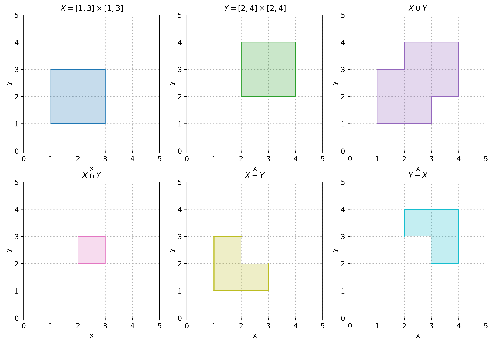
#!/usr/bin/env -S uv run # /// script # dependencies = [ # "numpy", # "matplotlib", # "uuid", # ] # /// import matplotlib as mpl mpl.use("Agg") # non-interactive backend import uuid import numpy as np import matplotlib.pyplot as plt from matplotlib.patches import Rectangle, Polygon def style_axes(ax, title): ax.axhline(0, color="black", linewidth=0.5) ax.axvline(0, color="black", linewidth=0.5) ax.set_aspect("equal", "box") ax.set_xlim(0, 5) ax.set_ylim(0, 5) ax.set_xticks(np.arange(0, 6, 1)) ax.set_yticks(np.arange(0, 6, 1)) ax.set_xlabel("x") ax.set_ylabel("y") ax.grid(True, linestyle=":") ax.set_title(title, fontsize=11) ax.set_axisbelow(True) fig, axes = plt.subplots(2, 3, figsize=(12, 8)) axes = axes.ravel() n = 6 cmap = mpl.colormaps["tab10"] colors = cmap(np.linspace(0, 1, n)) # n RGBA colors # 1) set X ax = axes[0] c = colors[0] ax.add_patch(Rectangle((1, 1), 2, 2, facecolor=(c[0],c[1],c[2],0.25), edgecolor=(c[0],c[1],c[2],1.0))) style_axes(ax, r"$X = [1,3] \times [1,3]$") # 2) set Y ax = axes[1] c = colors[1] ax.add_patch(Rectangle((2, 2), 2, 2, facecolor=(c[0],c[1],c[2],0.25), edgecolor=(c[0],c[1],c[2],1.0),)) style_axes(ax, r"$Y = [2,4] \times [2,4]$") # 3) X union Y ax = axes[2] c = colors[2] xy_diff = [(1,1), (3,1), (3,2), (4,2), (4,4), (2,4), (2,3), (1,3)] ax.add_patch(Polygon(xy_diff, closed=True, facecolor=(c[0],c[1],c[2],0.25), edgecolor=(c[0],c[1],c[2],1.0))) style_axes(ax, r"$X \cup Y$") # 4) X intersection Y ax = axes[3] c = colors[3] ax.add_patch(Rectangle((2, 2), 1, 1, facecolor=(c[0],c[1],c[2],0.25), edgecolor=(c[0],c[1],c[2],1.0))) style_axes(ax, r"$X \cap Y$") # 5) X - Y ax = axes[4] c = colors[4] xy_diff = [(1, 1), (3, 1), (3, 2), (2, 2), (2, 3), (1, 3)] ax.add_patch(Polygon(xy_diff, closed=True, facecolor=(c[0],c[1],c[2],0.25), edgecolor="none")) ax.plot([1,1],[1,3],color=(c[0],c[1],c[2],1.0)) ax.plot([1,2],[3,3],color=(c[0],c[1],c[2],1.0)) ax.plot([1,3],[1,1],color=(c[0],c[1],c[2],1.0)) ax.plot([3,3],[1,2],color=(c[0],c[1],c[2],1.0)) style_axes(ax, r"$X - Y$") # 6) Y - X ax = axes[5] c = colors[5] yx_diff = [(2, 3), (3, 3), (3, 2), (4, 2), (4, 4), (2, 4)] ax.add_patch(Polygon(yx_diff, closed=True, facecolor=(c[0],c[1],c[2],0.25), edgecolor="none")) ax.plot([2,2],[3,4],color=(c[0],c[1],c[2],1.0)) ax.plot([2,4],[4,4],color=(c[0],c[1],c[2],1.0)) ax.plot([4,4],[2,4],color=(c[0],c[1],c[2],1.0)) ax.plot([3,4],[2,2],color=(c[0],c[1],c[2],1.0)) style_axes(ax, r"$Y - X$") uid = uuid.uuid4().hex plt.savefig(f"{uid}.png", dpi=600, bbox_inches="tight") plt.savefig(f"{uid}.svg", bbox_inches="tight") plt.close()chmod +x plot.py uv run plot.py
{kind=link}
Sketch the sets \(X = [ - 1 , 3 ] \times [ 0 , 2 ]\) and \(Y = [ 0 , 3 ] \times [ 1 , 4 ]\) on the plane \(\mathbb { R } ^ { 2 }\). On separate drawings, shade in the sets \(X \cup Y\) , X ∩Y , X −Y and \(Y - X\).
[!success]- Answer \(X \cup Y = ([-1,3]\times[0,2])\cup([0,3]\times[1,4])\) \(X \cap Y = [0,3]\times[1,2]\) \(X-Y = \{(x,y): -1\le x\le3,\ 0\le y\le2,\ \text{and }(x<0\ \text{or}\ y<1)\}\) \(Y-X = \{(x,y): 0\le x\le3,\ 1\le y\le4,\ \text{and }y>2\}\)
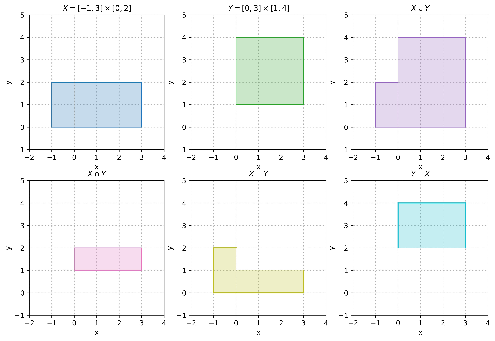
#!/usr/bin/env -S uv run # /// script # dependencies = [ # "numpy", # "matplotlib", # "uuid", # ] # /// import matplotlib as mpl mpl.use("Agg") # non-interactive backend import uuid import numpy as np import matplotlib.pyplot as plt from matplotlib.patches import Rectangle, Polygon def style_axes(ax, title): ax.axhline(0, color="black", linewidth=0.5) ax.axvline(0, color="black", linewidth=0.5) ax.set_aspect("equal", "box") ax.set_xlim(-2, 4) ax.set_ylim(-1, 5) ax.set_xticks(np.arange(-2, 5, 1)) ax.set_yticks(np.arange(-1, 6, 1)) ax.set_xlabel("x") ax.set_ylabel("y") ax.grid(True, linestyle=":") ax.set_title(title, fontsize=11) ax.set_axisbelow(True) fig, axes = plt.subplots(2, 3, figsize=(12, 8)) axes = axes.ravel() n = 6 cmap = mpl.colormaps["tab10"] colors = cmap(np.linspace(0, 1, n)) # n RGBA colors # 1) set X ax = axes[0] c = colors[0] ax.add_patch(Rectangle((-1, 0), 4, 2, facecolor=(c[0],c[1],c[2],0.25), edgecolor=(c[0],c[1],c[2],1.0))) style_axes(ax, r"$X = [-1,3] \times [0,2]$") # 2) set Y ax = axes[1] c = colors[1] ax.add_patch(Rectangle((0, 1), 3, 3, facecolor=(c[0],c[1],c[2],0.25), edgecolor=(c[0],c[1],c[2],1.0),)) style_axes(ax, r"$Y = [0,3] \times [1,4]$") # 3) X union Y ax = axes[2] c = colors[2] xy_diff = [(-1,0), (-1,2), (0,2), (0,4), (3,4), (3,0)] ax.add_patch(Polygon(xy_diff, closed=True, facecolor=(c[0],c[1],c[2],0.25), edgecolor=(c[0],c[1],c[2],1.0))) style_axes(ax, r"$X \cup Y$") # 4) X intersection Y ax = axes[3] c = colors[3] ax.add_patch(Rectangle((0, 1), 3, 1, facecolor=(c[0],c[1],c[2],0.25), edgecolor=(c[0],c[1],c[2],1.0))) style_axes(ax, r"$X \cap Y$") # 5) X - Y ax = axes[4] c = colors[4] xy_diff = [(-1,0), (-1,2), (0,2), (0,1), (3,1), (3,0)] ax.add_patch(Polygon(xy_diff, closed=True, facecolor=(c[0],c[1],c[2],0.25), edgecolor="none")) ax.plot([-1,-1],[0,2],color=(c[0],c[1],c[2],1.0)) ax.plot([-1,0],[2,2],color=(c[0],c[1],c[2],1.0)) ax.plot([3,3],[1,0],color=(c[0],c[1],c[2],1.0)) ax.plot([3,-1],[0,0],color=(c[0],c[1],c[2],1.0)) style_axes(ax, r"$X - Y$") # 6) Y - X ax = axes[5] c = colors[5] ax.add_patch(Rectangle((0,2), 3, 2, facecolor=(c[0],c[1],c[2],0.25), edgecolor="none")) ax.plot([0,0],[2,4],color=(c[0],c[1],c[2],1.0)) ax.plot([0,3],[4,4],color=(c[0],c[1],c[2],1.0)) ax.plot([3,3],[4,2],color=(c[0],c[1],c[2],1.0)) style_axes(ax, r"$Y - X$") uid = uuid.uuid4().hex plt.savefig(f"{uid}.png", dpi=600, bbox_inches="tight") plt.savefig(f"{uid}.svg", bbox_inches="tight") plt.close()chmod +x plot.py uv run plot.py
{kind=link}
Sketch the sets \(X = \left\{ ( x , y ) \in \mathbb { R } ^ { 2 } : x ^ { 2 } + y ^ { 2 } \leq 1 \right\}\) and \(Y = \left\{ ( x , y ) \in \mathbb { R } ^ { 2 } : x \geq 0 \right\}\) on \(\mathbb { R } ^ { 2 }\). On separate drawings, shade in the sets \(X \cup Y\) , \(X \cap Y\) , X −Y and \(Y - X\).
[!success]- Answer \(X\cup Y = \{(x,y): x\ge0\}\ \cup\ \{(x,y):x^2+y^2\le1\}\) \(X\cap Y = \{(x,y): x\ge0,\ x^2+y^2\le1\}\) \(X-Y = \{(x,y): x\le0,\ x^2+y^2\le1\}\ \text{(left semicircle)}\) \(Y-X = \{(x,y): x\ge0,\ x^2+y^2>1\}\)
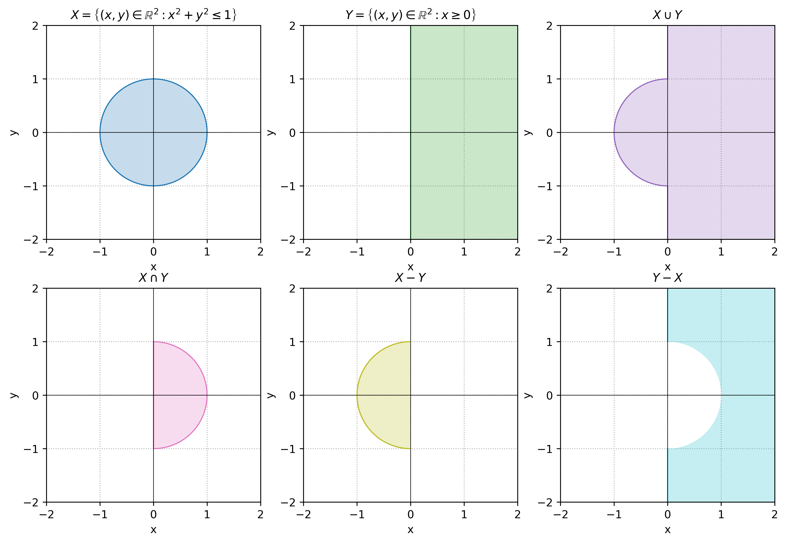
#!/usr/bin/env -S uv run # /// script # dependencies = [ # "numpy", # "matplotlib", # "uuid", # ] # /// import matplotlib as mpl mpl.use("Agg") # non-interactive backend import uuid import numpy as np import matplotlib.pyplot as plt from matplotlib.patches import Circle, Rectangle, Wedge, PathPatch, Arc from matplotlib.path import Path def style_axes(ax, title): ax.axhline(0, color="black", linewidth=0.5) ax.axvline(0, color="black", linewidth=0.5) ax.set_aspect("equal", "box") ax.set_xlim(-2, 2) ax.set_ylim(-2, 2) ax.set_xticks(np.arange(-2, 3, 1)) ax.set_yticks(np.arange(-2, 3, 1)) ax.set_xlabel("x") ax.set_ylabel("y") ax.grid(True, linestyle=":") ax.set_title(title, fontsize=11) ax.set_axisbelow(True) def rgba(c, alpha): return (c[0], c[1], c[2], alpha) def semicircle_points(side, n=181): """ Return points on the unit semicircle. side='right': from (0,-1) to (0,1) through (1,0) side='left' : from (0,-1) to (0,1) through (-1,0) """ if side == "right": theta = np.deg2rad(np.linspace(-90, 90, n)) elif side == "left": theta = np.deg2rad(np.linspace(270, 90, n)) else: raise ValueError("side must be 'right' or 'left'") return np.c_[np.cos(theta), np.sin(theta)] def curved_region_patch(vertices, facecolor, edgecolor="none", linewidth=1.0): verts = np.asarray(vertices, dtype=float) verts_closed = np.vstack([verts, verts[0]]) codes = [Path.MOVETO] + [Path.LINETO] * (len(verts) - 1) + [Path.CLOSEPOLY] path = Path(verts_closed, codes) return PathPatch(path, facecolor=facecolor, edgecolor=edgecolor, linewidth=linewidth) fig, axes = plt.subplots(2, 3, figsize=(12, 8)) axes = axes.ravel() n = 6 cmap = mpl.colormaps["tab10"] colors = cmap(np.linspace(0, 1, n)) # 1) set X ax = axes[0] c = colors[0] ax.add_patch(Circle((0, 0), 1, facecolor=rgba(c, 0.25), edgecolor=rgba(c, 1.0))) style_axes(ax, r"$X = \left\{ ( x , y ) \in \mathbb{R}^{2} : x^{2} + y^{2} \leq 1 \right\}$") # 2) set Y ax = axes[1] c = colors[1] ax.add_patch(Rectangle((0, -3), 3, 6, facecolor=rgba(c, 0.25), edgecolor=rgba(c, 1.0))) style_axes(ax, r"$Y = \left\{ ( x , y ) \in \mathbb{R}^{2} : x \geq 0 \right\}$") # 3) X ∪ Y ax = axes[2] c = colors[2] verts_union = [(0, 3), (3, 3), (3, -3), (0, -3), (0, -1)] verts_union.extend(semicircle_points("left", n=181).tolist()) verts_union.append((0, 2)) ax.add_patch(curved_region_patch(verts_union, facecolor=rgba(c, 0.25), edgecolor=rgba(c, 1.0))) style_axes(ax, r"$X \cup Y$") # 4) X ∩ Y = right half-disk ax = axes[3] c = colors[3] ax.add_patch(Wedge((0, 0), 1, -90, 90, facecolor=rgba(c, 0.25), edgecolor=rgba(c, 1.0))) style_axes(ax, r"$X \cap Y$") # 5) X - Y = left half-disk ax = axes[4] c = colors[4] ax.add_patch(Wedge((0, 0), 1, 90, 270, facecolor=rgba(c, 0.25), edgecolor="none")) ax.add_patch(Arc((0, 0), 2, 2, theta1=90, theta2=270, edgecolor=rgba(c, 1.0), linewidth=1.0)) style_axes(ax, r"$X - Y$") # 6) Y - X ax = axes[5] c = colors[5] verts_y_minus_x = [(0, 2), (2, 2), (2, -2), (0, -2), (0, -1)] verts_y_minus_x.extend(semicircle_points("right", n=181).tolist()) verts_y_minus_x.append((0, 2)) ax.add_patch(curved_region_patch(verts_y_minus_x, facecolor=rgba(c, 0.25), edgecolor="none")) edgecolor = rgba(c, 1.0) lw = 1.0 ax.plot([0, 0], [-2, -1], color=edgecolor, linewidth=lw) # lower left vertical ax.plot([0, 0], [1, 2], color=edgecolor, linewidth=lw) # upper left vertical style_axes(ax, r"$Y - X$") uid = uuid.uuid4().hex plt.savefig(f"{uid}.png", dpi=600, bbox_inches="tight") plt.savefig(f"{uid}.svg", bbox_inches="tight") plt.close()chmod +x plot.py uv run plot.py
{kind=link}
Sketch the sets \(X = \left\{ ( x , y ) \in \mathbb { R } ^ { 2 } : x ^ { 2 } + y ^ { 2 } \leq 1 \right\}\) and \(Y = \left\{ ( x , y ) \in \mathbb { R } ^ { 2 } : - 1 \leq y \leq 0 \right\}\) on \(\mathbb { R } ^ { 2 }\). On separate drawings, shade in the sets \(X \cup Y\) , \(X \cap Y\) , \(X - Y\) and \(Y - X\).
[!success]- Answer \(X\cup Y = \{(x,y):x^2+y^2\le1\}\ \cup\ \{(x,y):-1\le y\le0\}\) \(X\cap Y = \{(x,y):x^2+y^2\le1,\ -1\le y\le0\}\) \(X-Y = \{(x,y):x^2+y^2\le1,\ y>0\}\) \(Y-X = \{(x,y):-1\le y\le0,\ x^2+y^2>1\}\)
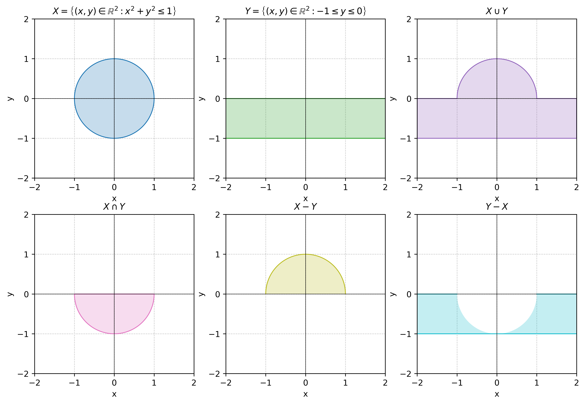
#!/usr/bin/env -S uv run # /// script # dependencies = [ # "numpy", # "matplotlib", # "uuid", # ] # /// import matplotlib as mpl mpl.use("Agg") # non-interactive backend import uuid import numpy as np import matplotlib.pyplot as plt from matplotlib.patches import Circle, Rectangle, Wedge, PathPatch, Arc from matplotlib.path import Path def style_axes(ax, title): ax.axhline(0, color="black", linewidth=0.5) ax.axvline(0, color="black", linewidth=0.5) ax.set_aspect("equal", "box") ax.set_xlim(-2, 2) ax.set_ylim(-2, 2) ax.set_xticks(np.arange(-2, 3, 1)) ax.set_yticks(np.arange(-2, 3, 1)) ax.set_xlabel("x") ax.set_ylabel("y") ax.grid(True, linestyle=":") ax.set_title(title, fontsize=11) ax.set_axisbelow(True) def rgba(c, alpha): return (c[0], c[1], c[2], alpha) def semicircle_points(side, n=181): """ Return points on the unit semicircle. side='right': from (0,-1) to (0,1) through (1,0) side='left' : from (0,-1) to (0,1) through (-1,0) side='up' : from (-1,0) to (1,0) through (0,1) side='down' : from (-1,0) to (1,0) through (0,-1) """ if side == "right": theta = np.deg2rad(np.linspace(-90, 90, n)) elif side == "left": theta = np.deg2rad(np.linspace(270, 90, n)) elif side == "up": theta = np.deg2rad(np.linspace(180, 0, n)) elif side == "down": theta = np.deg2rad(np.linspace(180, 360, n)) else: raise ValueError("side must be one of 'right', 'left', 'up', 'down'") return np.c_[np.cos(theta), np.sin(theta)] def curved_region_patch(vertices, facecolor, edgecolor="none", linewidth=1.0): verts = np.asarray(vertices, dtype=float) verts_closed = np.vstack([verts, verts[0]]) codes = [Path.MOVETO] + [Path.LINETO] * (len(verts) - 1) + [Path.CLOSEPOLY] path = Path(verts_closed, codes) return PathPatch(path, facecolor=facecolor, edgecolor=edgecolor, linewidth=linewidth) def region_with_hole_patch(outer_vertices, inner_vertices, facecolor, edgecolor="none", linewidth=1.0): """ Create a filled region with one hole. The inner path should be given with opposite orientation to the outer path. """ outer = np.asarray(outer_vertices, dtype=float) inner = np.asarray(inner_vertices, dtype=float) outer_closed = np.vstack([outer, outer[0]]) inner_closed = np.vstack([inner, inner[0]]) verts = np.vstack([outer_closed, inner_closed]) codes = ( [Path.MOVETO] + [Path.LINETO] * (len(outer) - 1) + [Path.CLOSEPOLY] + [Path.MOVETO] + [Path.LINETO] * (len(inner) - 1) + [Path.CLOSEPOLY] ) path = Path(verts, codes) return PathPatch(path, facecolor=facecolor, edgecolor=edgecolor, linewidth=linewidth) fig, axes = plt.subplots(2, 3, figsize=(12, 8)) axes = axes.ravel() n = 6 cmap = mpl.colormaps["tab10"] colors = cmap(np.linspace(0, 1, n)) # 1) set X ax = axes[0] c = colors[0] ax.add_patch(Circle((0, 0), 1, facecolor=rgba(c, 0.25), edgecolor=rgba(c, 1.0))) style_axes(ax, r"$X = \left\{ ( x , y ) \in \mathbb{R}^{2} : x^{2} + y^{2} \leq 1 \right\}$") # 2) set Y ax = axes[1] c = colors[1] ax.add_patch(Rectangle((-3, -1), 6, 1, facecolor=rgba(c, 0.25), edgecolor=rgba(c, 1.0))) style_axes(ax, r"$Y = \left\{ ( x , y ) \in \mathbb{R}^{2} : - 1 \leq y \leq 0 \right\}$") # 3) X ∪ Y ax = axes[2] c = colors[2] verts_union = [(-2, 0), (-1, 0)] verts_union.extend(semicircle_points("up", n=181).tolist()) verts_union.extend([(2, 0), (2, -1), (-2, -1)]) ax.add_patch(curved_region_patch(verts_union, facecolor=rgba(c, 0.25), edgecolor=rgba(c, 1.0))) style_axes(ax, r"$X \cup Y$") # 4) X ∩ Y = lower half-disk ax = axes[3] c = colors[3] ax.add_patch(Wedge((0, 0), 1, 180, 360, facecolor=rgba(c, 0.25), edgecolor=rgba(c, 1.0))) style_axes(ax, r"$X \cap Y$") # 5) X - Y = upper half-disk ax = axes[4] c = colors[4] ax.add_patch(Wedge((0, 0), 1, 0, 180, facecolor=rgba(c, 0.25), edgecolor="none")) ax.add_patch(Arc((0, 0), 2, 2, theta1=0, theta2=180, edgecolor=rgba(c, 1.0), linewidth=1.0)) style_axes(ax, r"$X - Y$") # 6) Y - X ax = axes[5] c = colors[5] outer_strip = [(-3, -1), (-3, 0), (3, 0), (3, -1)] inner_hole = semicircle_points("down", n=181) # opposite orientation to outer_strip ax.add_patch(region_with_hole_patch(outer_strip, inner_hole, facecolor=rgba(c, 0.25), edgecolor="none")) edgecolor = rgba(c, 1.0) ax.plot([-3, -1], [0, 0], color=edgecolor, linewidth=1.0) # top-left ax.plot([1, 3], [0, 0], color=edgecolor, linewidth=1.0) # top-right ax.plot([-3, 3], [-1, -1], color=edgecolor, linewidth=1.0) # bottom style_axes(ax, r"$Y - X$") uid = uuid.uuid4().hex plt.savefig(f"{uid}.png", dpi=600, bbox_inches="tight") plt.savefig(f"{uid}.svg", bbox_inches="tight") plt.close()chmod +x plot.py uv run plot.py
{kind=link}
Is the statement \(( \mathbb { R } \times \mathbb { Z } ) \cap ( \mathbb { Z } \times \mathbb { R } ) = \mathbb { Z } \times \mathbb { Z }\) true or false? What about the statement \(( \mathbb { R } \times \mathbb { Z } ) \cup ( \mathbb { Z } \times \mathbb { R } ) = \mathbb { R } \times \mathbb { R }\)?
[!success]- Answer The first statement is true; an ordered pair lies in both sets if and only if both coordinates are integers. The second statement is false; for example \((0.5,0.5) \in \mathbb{R} \times \mathbb{R}\) but \((0.5,0.5) \notin (\mathbb{R} \times \mathbb{Z}) \cup (\mathbb{Z} \times \mathbb{R})\). \(( \mathbb { R } \times \mathbb { Z } ) \cup ( \mathbb { Z } \times \mathbb { R } )\) creates a checkerboard pattern, not the full \(\mathbb{R}^{2}\) plane.
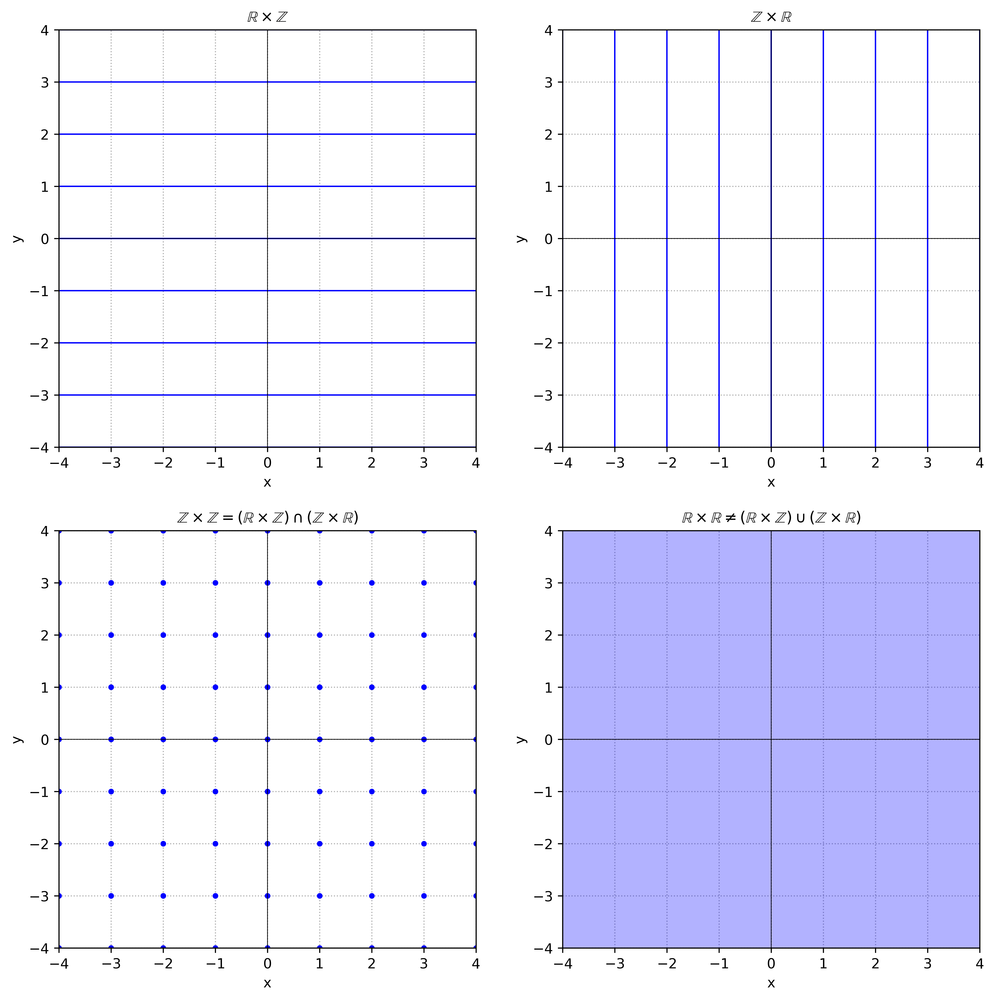
#!/usr/bin/env -S uv run # /// script # dependencies = [ # "numpy", # "matplotlib", # "uuid", # ] # /// import matplotlib as mpl mpl.use("Agg") # non-interactive backend import uuid import numpy as np import matplotlib.pyplot as plt from matplotlib.patches import Rectangle def style_axes(ax, title): ax.axhline(0, color="black", linewidth=0.5) ax.axvline(0, color="black", linewidth=0.5) ax.set_aspect("equal", "box") ax.set_xlim(-4, 4) ax.set_ylim(-4, 4) ax.set_xticks(np.arange(-4, 5, 1)) ax.set_yticks(np.arange(-4, 5, 1)) ax.set_xlabel("x") ax.set_ylabel("y") ax.grid(True, linestyle=":") ax.set_title(title, fontsize=11) ax.set_axisbelow(True) fig, axes = plt.subplots(2, 2, figsize=(12, 12)) axes = axes.ravel() x = np.linspace(-5, 5, 300) # 1) RxZ ax = axes[0] for y in range(-5,6): y_vals = np.full_like(x,y) ax.plot(x, y_vals, color="blue", lw=1.0) style_axes(ax, r"$\mathbb{R} \times \mathbb{Z}$") # 2) ZxR ax = axes[1] for y in range(-5,6): y_vals = np.full_like(x,y) ax.plot(y_vals, x, color="blue", lw=1.0) style_axes(ax, r"$\mathbb{Z} \times \mathbb{R}$") # 3) ZxZ ax = axes[2] xs, ys = [], [] for x in range(-5, 5): for y in range(-5, 5): xs.append(x) ys.append(y) ax.plot(xs, ys, color="blue", marker=".", linestyle="none") style_axes(ax, r"$\mathbb{Z} \times \mathbb{Z} = (\mathbb{R} \times \mathbb{Z}) \cap (\mathbb{Z} \times \mathbb{R})$") # 4) RxR ax = axes[3] ax.add_patch(Rectangle((-5, -5), 10, 10, color='blue', fill=True, alpha=0.3)) style_axes(ax, r"$\mathbb{R} \times \mathbb{R} \neq (\mathbb{R} \times \mathbb{Z}) \cup (\mathbb{Z} \times \mathbb{R})$") uid = uuid.uuid4().hex plt.savefig(f"{uid}.png", dpi=600, bbox_inches="tight") plt.savefig(f"{uid}.svg", bbox_inches="tight") plt.close()chmod +x plot.py uv run plot.py
{kind=link}
Do you think the statement \(( \mathbb { R } - \mathbb { Z } ) \times \mathbb { N } = ( \mathbb { R } \times \mathbb { N } ) - ( \mathbb { Z } \times \mathbb { N } )\) is true, or false? Justify.
[!success]- Answer True. In general, for sets \(A,B,C\) it holds that: \((A-B)\times C=(A\times C)-(B\times C)\). \((x,y)\in (A-B)\times C\) \(\iff (x\in A\ \text{and}\ x\notin B)\ \text{and}\ y\in C\) \(\iff (x,y)\in A\times C\ \text{and}\ (x,y)\notin B\times C\) Taking \(A=\mathbb{R}\), \(B=\mathbb{Z}\), and \(C=\mathbb{N}\) yields the claimed identity.
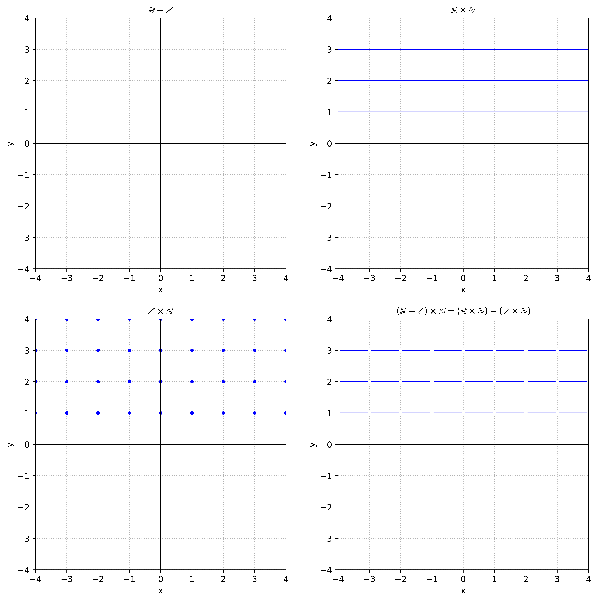
#!/usr/bin/env -S uv run # /// script # dependencies = [ # "numpy", # "matplotlib", # "uuid", # ] # /// import matplotlib as mpl mpl.use("Agg") # non-interactive backend import uuid import numpy as np import matplotlib.pyplot as plt from matplotlib.patches import Rectangle def style_axes(ax, title): ax.axhline(0, color="black", linewidth=0.5) ax.axvline(0, color="black", linewidth=0.5) ax.set_aspect("equal", "box") ax.set_xlim(-4, 4) ax.set_ylim(-4, 4) ax.set_xticks(np.arange(-4, 5, 1)) ax.set_yticks(np.arange(-4, 5, 1)) ax.set_xlabel("x") ax.set_ylabel("y") ax.grid(True, linestyle=":") ax.set_title(title, fontsize=11) ax.set_axisbelow(True) fig, axes = plt.subplots(2, 2, figsize=(12, 12)) axes = axes.ravel() x_vals = np.linspace(-5, 5, 300) # 1) R-Z ax = axes[0] y_vals = np.full_like(x_vals,0) ax.plot(x_vals, y_vals, color="blue", lw=1.5) ax.plot([-5,-4,-3,-2,-1,0,1,2,3,4,5], [0,0,0,0,0,0,0,0,0,0,0], color="white", marker=".", linestyle="none") style_axes(ax, r"$\mathbb{R} - \mathbb{Z}$") # 2) RxN ax = axes[1] for y in range(1,6): y_vals = np.full_like(x_vals,y) ax.plot(x_vals, y_vals, color="blue", lw=1.0) style_axes(ax, r"$\mathbb{R} \times \mathbb{N}$") # 3) ZxN ax = axes[2] xs, ys = [], [] for x in range(-5, 5): for y in range(1, 5): xs.append(x) ys.append(y) ax.plot(xs, ys, color="blue", marker=".", linestyle="none") style_axes(ax, r"$\mathbb{Z} \times \mathbb{N}$") # 4) (R-Z)xN = (RxN) - (ZxN) ax = axes[3] for y in range(1,5): y_vals = np.full_like(x_vals,y) ax.plot(x_vals, y_vals, color="blue", lw=1.0) xs, ys = [], [] for x in range(-5, 5): for y in range(1, 5): xs.append(x) ys.append(y) ax.plot(xs, ys, color="white", marker=".", linestyle="none") style_axes(ax, r"$(\mathbb{R} - \mathbb{Z}) \times \mathbb{N} = (\mathbb{R} \times \mathbb{N}) - (\mathbb{Z} \times \mathbb{N})$") uid = uuid.uuid4().hex plt.savefig(f"{uid}.png", dpi=600, bbox_inches="tight") plt.savefig(f"{uid}.svg", bbox_inches="tight") plt.close()chmod +x plot.py uv run plot.py
{kind=link}
1.6 Complement¶
This section introduces yet another set operation, called the set complement. The definition requires the idea of a universal set, which we now discuss.
When dealing with a set, we almost always regard it as a subset of some larger set. For example, consider the set of prime numbers \(P =\) \(\{ 2 , 3 , 5 , 7 , 1 1 , 1 3 , \ldots \}\). If asked to name some things that are not in \(P\), we might mention some composite numbers like 4 or 6 or 423. It probably would not occur to us to say that Vladimir Putin is not in \(P\). True, Vladimir Putin is not in \(P\), but he lies entirely outside of the discussion of what is a prime number and what is not. We have an unstated assumption that \(P \subseteq \mathbb {N}\), because \(\mathbb { N }\) is the most natural setting in which to discuss prime numbers. In this context, anything not in \(P\) should still be in \(\mathbb { N }\). This larger set \(\mathbb { N }\) is called the universal set or universe for \(P\).
Almost every useful set in mathematics can be regarded as having some natural universal set. For instance, the unit circle is the set \(C = \left\{ (x, y) \in \mathbb{R}^{2} : x^{2} + y^{2} = 1 \right\}\), and since all these points are in the plane \(\mathbb{R}^{2}\) it is natural to regard \(\mathbb{R}^{2}\) as the universal set for \(C\). In the absence of specifics, if \(A\) is a set, then its universal set is often denoted as \(U\). We are now ready to define the complement operation.
Definition 1.6: Let \(A\) be a set with a universal set \(U\). The complement of A, denoted \(\overline{A}\), is the set \(\overline{A} = U - A\).
Example 1.10: If \(P\) is the set of prime numbers, then
Thus \(\overline { { P } }\) is the set of composite numbers and 1.
Example 1.11: Let \(A = \left\{ ( x , x ^ { 2 } ) : x \in \mathbb { R } \right\}\) be the graph of the equation \(y = x^{2}\). Figure 1.6(a) shows \(A\) in its universal set \(\mathbb{R}^{2}\). The complement of \(A\) is \({ \overline { { A } } } =\) \(\mathbb { R } ^ { 2 } - A = \left\{ ( x , y ) \in \mathbb{R}^{2} : y \neq x^{2} \right\}\), illustrated by the shaded area in Figure 1.6(b).
 Figure 1.6. A set and its complement
Figure 1.6. A set and its complement
Exercises for Section 1.6¶
Let \(A = \left\{ 4 , 3 , 6 , 7 , 1 , 9 \right\}\) and \(B = \{ 5 , 6 , 8 , 4 \}\) have universal set \(U = \left\{ 0 , 1 , 2 , \ldots , 1 0 \right\}\) . Find: (a) \(\overline{A}\)
[!success]- Answer \(\overline{A} = U - A =\{0,2,5,8,10\}\)
(b) \(\overline{B}\)
[!success]- Answer \(\overline{B} = U - B = \{0,1,2,3,7,9,10\}\)
(c) \(A \cap \overline{A}\)
[!success]- Answer \(A \cap \overline{A} = \varnothing\)
(d) \(A \cup \overline{A}\)
[!success]- Answer \(A \cup \overline{A} = U\)
(e) \(A - \overline{A}\)
[!success]- Answer \(A - \overline{A} = A\)
(f) \(A - \overline{B}\)
[!success]- Answer \(A - \overline{B} = \{4,6\}\)
(g) \(\overline{A} - \overline{B}\)
[!success]- Answer \(\overline{A} - \overline{B} = \{5,8\}\)
(h) \(\overline{A} \cap B\)
[!success]- Answer \(\overline{A} \cap B = \{5,8\}\)
(i) \(\overline{\overline{A} \cap B}\)
[!success]- Answer \(\overline{\overline{A} \cap B} = U - \{5,8\} = \{0,1,2,3,4,6,7,9,10\}\)
Let \(A = \{ 0 , 2 , 4 , 6 , 8 \}\) and \(B = \left\{ 1 , 3 , 5 , 7 \right\}\) have universal set \(U = \left\{ 0 , 1 , 2 , . . . , 8 \right\}\) . Find: (a) \(\overline{A}\)
[!success]- Answer \(\overline{A} = U - A = \{1,3,5,7\}\)
(b) \(\overline{B}\)
[!success]- Answer \(\overline{B} = U - B = \{0,2,4,6,8\}\)
(c) \(A \cap \overline{A}\)
[!success]- Answer \(A \cap \overline{A} = \varnothing\)
(d) \(A \cup \overline{A}\)
[!success]- Answer \(A \cup \overline{A} = U\)
(e) \(A - \overline{A}\)
[!success]- Answer \(A - \overline{A} = A\)
(f) \(\overline{A \cup B}\)
[!success]- Answer \(\overline{A \cup B} = \overline{U} = U - U = \varnothing\)
(g) \(\overline{A} \cap \overline{B}\)
[!success]- Answer \(\overline{A} \cap \overline{B} = \varnothing\)
(h) \(\overline{A \cap B}\)
[!success]- Answer \(\overline{A \cap B} = \overline{\varnothing} = U - \varnothing = U\)
(i) \(\overline{A} \times B\)
[!success]- Answer \(\overline{A} \times B = \{1,3,5,7\} \times \{1,3,5,7\}\) \(\overline{A} \times B = \{(1,1), (1,3), (1,5), (1,7), (3,1), (3,3), (3,5), (3,7), (5,1), (5,3), (5,5), (5,7), (7,1), (7,3), (7,5), (7,7)\}\)
Sketch the set \(X = [ 1 , 3 ] \times [ 1 , 2 ]\) on the plane \(\mathbb{R}^{2}\). On separate drawings, shade in the sets \(\overline{X}\) and \(\overline{X} \cap \left( \left[ 0 , 2 \right] \times \left[ 0 , 3 \right] \right)\).
[!success]- Answer The rectangle \(X\) occupies the region where \(1 \le x \le 3\) and \(1 \le y \le 2\). \(\overline{X}\) is the complement of this rectangle in the plane \(\mathbb{R}^{2}\). \(\overline{X} \cap ([0,2] \times [0,3])\) is the part of the complement restricted to the larger rectangle \([0,2] \times [0,3]\).
 #!/usr/bin/env -S uv run # /// script # dependencies = [ # "numpy", # "matplotlib", # "uuid", # ] # /// import matplotlib as mpl mpl.use("Agg") # non-interactive backend import uuid import numpy as np import matplotlib.pyplot as plt from matplotlib.patches import Rectangle, Polygon def style_axes(ax, title): ax.axhline(0, color="black", linewidth=0.5) ax.axvline(0, color="black", linewidth=0.5) ax.set_aspect("equal", "box") ax.set_xlim(-4, 4) ax.set_ylim(-4, 4) ax.set_xticks(np.arange(-4, 5, 1)) ax.set_yticks(np.arange(-4, 5, 1)) ax.set_xlabel("x") ax.set_ylabel("y") ax.grid(True, linestyle=":") ax.set_title(title, fontsize=11) fig, axes = plt.subplots(1, 3, figsize=(18, 6)) axes = axes.ravel() # 1) X = [1,3] x [1,2] ax = axes[0] ax.add_patch(Rectangle((1, 1), 2, 1, color="blue", fill=True, alpha=0.2)) ax.add_patch(Rectangle((1, 1), 2, 1, color="blue", fill=False, alpha=0.4)) style_axes(ax, r"$X = [1,3] \times [1,2]$") ax.set_axisbelow(True) # 2) complement of X ax = axes[1] ax.add_patch(Rectangle((-5, -5), 10, 10, color="blue", fill=True, alpha=0.2)) ax.add_patch(Rectangle((1, 1), 2, 1, color="white", fill=True, alpha=1.0)) style_axes(ax, r"$\overline{X}$") # 3) complement(X) intersect ([0,2] x [0,3]) ax = axes[2] xy = [(0,0),(2,0),(2,1),(1,1),(1,2),(2,2),(2,3),(0,3)] ax.add_patch(Polygon(xy, closed=True, facecolor="blue", edgecolor="none", alpha=0.2)) ax.plot([0,2],[0,0],color="blue", alpha=0.4) ax.plot([2,2],[0,1],color="blue", alpha=0.4) ax.plot([2,2],[2,3],color="blue", alpha=0.4) ax.plot([0,2],[3,3],color="blue", alpha=0.4) ax.plot([0,0],[0,3],color="blue", alpha=0.4) style_axes(ax, r"$\overline{X} \cap ([0,2] \times [0,3])$") ax.set_axisbelow(True) uid = uuid.uuid4().hex plt.savefig(f"{uid}.png", dpi=600, bbox_inches="tight") plt.savefig(f"{uid}.svg", bbox_inches="tight") plt.close()chmod +x plot.py uv run plot.py
#!/usr/bin/env -S uv run # /// script # dependencies = [ # "numpy", # "matplotlib", # "uuid", # ] # /// import matplotlib as mpl mpl.use("Agg") # non-interactive backend import uuid import numpy as np import matplotlib.pyplot as plt from matplotlib.patches import Rectangle, Polygon def style_axes(ax, title): ax.axhline(0, color="black", linewidth=0.5) ax.axvline(0, color="black", linewidth=0.5) ax.set_aspect("equal", "box") ax.set_xlim(-4, 4) ax.set_ylim(-4, 4) ax.set_xticks(np.arange(-4, 5, 1)) ax.set_yticks(np.arange(-4, 5, 1)) ax.set_xlabel("x") ax.set_ylabel("y") ax.grid(True, linestyle=":") ax.set_title(title, fontsize=11) fig, axes = plt.subplots(1, 3, figsize=(18, 6)) axes = axes.ravel() # 1) X = [1,3] x [1,2] ax = axes[0] ax.add_patch(Rectangle((1, 1), 2, 1, color="blue", fill=True, alpha=0.2)) ax.add_patch(Rectangle((1, 1), 2, 1, color="blue", fill=False, alpha=0.4)) style_axes(ax, r"$X = [1,3] \times [1,2]$") ax.set_axisbelow(True) # 2) complement of X ax = axes[1] ax.add_patch(Rectangle((-5, -5), 10, 10, color="blue", fill=True, alpha=0.2)) ax.add_patch(Rectangle((1, 1), 2, 1, color="white", fill=True, alpha=1.0)) style_axes(ax, r"$\overline{X}$") # 3) complement(X) intersect ([0,2] x [0,3]) ax = axes[2] xy = [(0,0),(2,0),(2,1),(1,1),(1,2),(2,2),(2,3),(0,3)] ax.add_patch(Polygon(xy, closed=True, facecolor="blue", edgecolor="none", alpha=0.2)) ax.plot([0,2],[0,0],color="blue", alpha=0.4) ax.plot([2,2],[0,1],color="blue", alpha=0.4) ax.plot([2,2],[2,3],color="blue", alpha=0.4) ax.plot([0,2],[3,3],color="blue", alpha=0.4) ax.plot([0,0],[0,3],color="blue", alpha=0.4) style_axes(ax, r"$\overline{X} \cap ([0,2] \times [0,3])$") ax.set_axisbelow(True) uid = uuid.uuid4().hex plt.savefig(f"{uid}.png", dpi=600, bbox_inches="tight") plt.savefig(f"{uid}.svg", bbox_inches="tight") plt.close()chmod +x plot.py uv run plot.py
Sketch the set \(X = [ - 1 , 3 ] \times [ 0 , 2 ]\) on the plane \(\mathbb{R}^{2}\). On separate drawings, shade in the sets \(\overline { { X } }\) and \(\overline { { X } } \cap ( [ - 2 , 4 ] \times [ - 1 , 3 ] )\).
[!success]- Answer The rectangle \(X\) covers the region \(-1 \le x \le 3\) and \(0 \le y \le 2\). \(\overline{X}\) is the complement of this rectangle in the plane \(\mathbb{R}^{2}\). \(\overline{X} \cap ([-2,4] \times [-1,3])\) is the part of the complement restricted to the larger rectangle \([-2,4] \times [-1,3]\).
 #!/usr/bin/env -S uv run # /// script # dependencies = [ # "numpy", # "matplotlib", # "uuid", # ] # /// import matplotlib as mpl mpl.use("Agg") # non-interactive backend import uuid import numpy as np import matplotlib.pyplot as plt from matplotlib.patches import Rectangle def style_axes(ax, title): ax.axhline(0, color="black", linewidth=0.5) ax.axvline(0, color="black", linewidth=0.5) ax.set_aspect("equal", "box") ax.set_xlim(-5, 5) ax.set_ylim(-5, 5) ax.set_xticks(np.arange(-5, 6, 1)) ax.set_yticks(np.arange(-5, 6, 1)) ax.set_xlabel("x") ax.set_ylabel("y") ax.grid(True, linestyle=":") ax.set_title(title, fontsize=11) fig, axes = plt.subplots(1, 3, figsize=(18, 6)) axes = axes.ravel() # 1) X = [-1,3] x [0,2] ax = axes[0] ax.add_patch(Rectangle((-1, 0), 4, 2, color="blue", fill=True, alpha=0.2)) ax.add_patch(Rectangle((-1, 0), 4, 2, color="blue", fill=False, alpha=0.4)) style_axes(ax, r"$X = [-1,3] \times [0,2]$") ax.set_axisbelow(True) # 2) complement of X ax = axes[1] ax.add_patch(Rectangle((-5, -5), 10, 10, color="blue", fill=True, alpha=0.2)) ax.add_patch(Rectangle((-1, 0), 4, 2, color="white", fill=True, alpha=1.0)) style_axes(ax, r"$\overline{X}$") # 3) complement(X) intersect ([-2,4] x [-1,3]) ax = axes[2] ax.add_patch(Rectangle((-2, -1), 6, 4, color="blue", fill=True, alpha=0.2)) ax.add_patch(Rectangle((-2, -1), 6, 4, color="blue", fill=False, alpha=0.4)) ax.add_patch(Rectangle((-1, 0), 4, 2, color="white", fill=True, alpha=1.0)) style_axes(ax, r"$\overline{X} \cap ([-2,4] \times [-1,3])$") uid = uuid.uuid4().hex plt.savefig(f"{uid}.png", dpi=600, bbox_inches="tight") plt.savefig(f"{uid}.svg", bbox_inches="tight") plt.close()chmod +x plot.py uv run plot.py
#!/usr/bin/env -S uv run # /// script # dependencies = [ # "numpy", # "matplotlib", # "uuid", # ] # /// import matplotlib as mpl mpl.use("Agg") # non-interactive backend import uuid import numpy as np import matplotlib.pyplot as plt from matplotlib.patches import Rectangle def style_axes(ax, title): ax.axhline(0, color="black", linewidth=0.5) ax.axvline(0, color="black", linewidth=0.5) ax.set_aspect("equal", "box") ax.set_xlim(-5, 5) ax.set_ylim(-5, 5) ax.set_xticks(np.arange(-5, 6, 1)) ax.set_yticks(np.arange(-5, 6, 1)) ax.set_xlabel("x") ax.set_ylabel("y") ax.grid(True, linestyle=":") ax.set_title(title, fontsize=11) fig, axes = plt.subplots(1, 3, figsize=(18, 6)) axes = axes.ravel() # 1) X = [-1,3] x [0,2] ax = axes[0] ax.add_patch(Rectangle((-1, 0), 4, 2, color="blue", fill=True, alpha=0.2)) ax.add_patch(Rectangle((-1, 0), 4, 2, color="blue", fill=False, alpha=0.4)) style_axes(ax, r"$X = [-1,3] \times [0,2]$") ax.set_axisbelow(True) # 2) complement of X ax = axes[1] ax.add_patch(Rectangle((-5, -5), 10, 10, color="blue", fill=True, alpha=0.2)) ax.add_patch(Rectangle((-1, 0), 4, 2, color="white", fill=True, alpha=1.0)) style_axes(ax, r"$\overline{X}$") # 3) complement(X) intersect ([-2,4] x [-1,3]) ax = axes[2] ax.add_patch(Rectangle((-2, -1), 6, 4, color="blue", fill=True, alpha=0.2)) ax.add_patch(Rectangle((-2, -1), 6, 4, color="blue", fill=False, alpha=0.4)) ax.add_patch(Rectangle((-1, 0), 4, 2, color="white", fill=True, alpha=1.0)) style_axes(ax, r"$\overline{X} \cap ([-2,4] \times [-1,3])$") uid = uuid.uuid4().hex plt.savefig(f"{uid}.png", dpi=600, bbox_inches="tight") plt.savefig(f"{uid}.svg", bbox_inches="tight") plt.close()chmod +x plot.py uv run plot.py
Sketch the set \(X = \left\{ ( x , y ) \in \mathbb{R}^{2} : 1 \leq x^{2} + y^{2} \leq 4 \right\}\) on the plane \(\mathbb{R}^{2}\) . On a separate drawing, shade in the set \(\overline{X}\).
[!success]- Answer The set \(X\) is an annulus centered at the origin, bounded by circles of radius 1 and 2. The complement \(\overline{X}\) consists of points inside the smaller circle \((x^2 + y^2 < 1)\) and outside the larger circle \((x^2 + y^2 > 4)\). Equation of a circle with midpoint \((m,n)\) and radius \(r\) : \((x-m)^2 + (y-n)^2 = r^2\)
 #!/usr/bin/env -S uv run # /// script # dependencies = [ # "numpy", # "matplotlib", # "uuid", # ] # /// import matplotlib as mpl mpl.use("Agg") # non-interactive backend import uuid import numpy as np import matplotlib.pyplot as plt from matplotlib.patches import Circle, Rectangle def style_axes(ax, title): ax.axhline(0, color="black", linewidth=0.5) ax.axvline(0, color="black", linewidth=0.5) ax.set_aspect("equal", "box") ax.set_xlim(-3, 3) ax.set_ylim(-3, 3) ax.set_xticks(np.arange(-3, 4, 1)) ax.set_yticks(np.arange(-3, 4, 1)) ax.set_xlabel("x") ax.set_ylabel("y") ax.grid(True, linestyle=":") ax.set_title(title, fontsize=11) fig, axes = plt.subplots(1, 2, figsize=(12, 6)) axes = axes.ravel() # 1) X = 1 <= x^2 + y^2 <= 4 ax = axes[0] ax.add_patch(Circle((0, 0), 2, color="blue", fill=True, alpha=0.2)) ax.add_patch(Circle((0, 0), 2, color="blue", fill=False, alpha=0.4)) ax.add_patch(Circle((0, 0), 1, color="white", fill=True, alpha=1.0)) ax.add_patch(Circle((0, 0), 1, color="blue", fill=False, alpha=0.6)) style_axes(ax, r"$X = \{(x,y) \in \mathbb{R}^{2} : 1 \leq x^2 + y^2 \leq 4\}$") # 2) complement of X ax = axes[1] ax.add_patch(Rectangle((-4, -4), 8, 8, color="blue", fill=True, alpha=0.2)) ax.add_patch(Circle((0, 0), 2, color="white", fill=True, alpha=1.0)) ax.add_patch(Circle((0, 0), 1, facecolor="blue", edgecolor="none", fill=True, alpha=0.2)) style_axes(ax, r"$\overline{X}$") # ax.set_axisbelow(True) uid = uuid.uuid4().hex plt.savefig(f"{uid}.png", dpi=600, bbox_inches="tight") plt.savefig(f"{uid}.svg", bbox_inches="tight") plt.close()chmod +x plot.py uv run plot.py
#!/usr/bin/env -S uv run # /// script # dependencies = [ # "numpy", # "matplotlib", # "uuid", # ] # /// import matplotlib as mpl mpl.use("Agg") # non-interactive backend import uuid import numpy as np import matplotlib.pyplot as plt from matplotlib.patches import Circle, Rectangle def style_axes(ax, title): ax.axhline(0, color="black", linewidth=0.5) ax.axvline(0, color="black", linewidth=0.5) ax.set_aspect("equal", "box") ax.set_xlim(-3, 3) ax.set_ylim(-3, 3) ax.set_xticks(np.arange(-3, 4, 1)) ax.set_yticks(np.arange(-3, 4, 1)) ax.set_xlabel("x") ax.set_ylabel("y") ax.grid(True, linestyle=":") ax.set_title(title, fontsize=11) fig, axes = plt.subplots(1, 2, figsize=(12, 6)) axes = axes.ravel() # 1) X = 1 <= x^2 + y^2 <= 4 ax = axes[0] ax.add_patch(Circle((0, 0), 2, color="blue", fill=True, alpha=0.2)) ax.add_patch(Circle((0, 0), 2, color="blue", fill=False, alpha=0.4)) ax.add_patch(Circle((0, 0), 1, color="white", fill=True, alpha=1.0)) ax.add_patch(Circle((0, 0), 1, color="blue", fill=False, alpha=0.6)) style_axes(ax, r"$X = \{(x,y) \in \mathbb{R}^{2} : 1 \leq x^2 + y^2 \leq 4\}$") # 2) complement of X ax = axes[1] ax.add_patch(Rectangle((-4, -4), 8, 8, color="blue", fill=True, alpha=0.2)) ax.add_patch(Circle((0, 0), 2, color="white", fill=True, alpha=1.0)) ax.add_patch(Circle((0, 0), 1, facecolor="blue", edgecolor="none", fill=True, alpha=0.2)) style_axes(ax, r"$\overline{X}$") # ax.set_axisbelow(True) uid = uuid.uuid4().hex plt.savefig(f"{uid}.png", dpi=600, bbox_inches="tight") plt.savefig(f"{uid}.svg", bbox_inches="tight") plt.close()chmod +x plot.py uv run plot.py
Sketch the set \(X = \left\{ ( x , y ) \in \mathbb{R}^{2} : y < x^{2} \right\}\) on \(\mathbb{R}^{2}\). Shade in the set \(\overline{X}\).
[!success]- Answer The set \(X\) is the region below the parabola \(y = x^2\). The complement \(\overline{X}\) is the region on and above the parabola \(f(x) = x^2\).
 #!/usr/bin/env -S uv run # /// script # dependencies = [ # "numpy", # "matplotlib", # "uuid", # ] # /// import matplotlib as mpl mpl.use("Agg") # non-interactive backend import uuid import numpy as np import matplotlib.pyplot as plt def style_axes(ax, title): ax.axhline(0, color="black", linewidth=0.5) ax.axvline(0, color="black", linewidth=0.5) ax.set_aspect("equal", "box") ax.set_xlim(-3, 3) ax.set_ylim(-3, 3) ax.set_xticks(np.arange(-3, 4, 1)) ax.set_yticks(np.arange(-3, 4, 1)) ax.set_xlabel("x") ax.set_ylabel("y") ax.grid(True, linestyle=":") ax.set_title(title, fontsize=11) ax.set_axisbelow(True) fig, axes = plt.subplots(1, 2, figsize=(12, 6)) axes = axes.ravel() x = np.linspace(-3, 3, 500) y = x**2 # 1) X = y < x^2 ax = axes[0] # shade region below parabola ax.fill_between(x, -4, y, color="blue", alpha=0.2) # draw parabola as dashed ax.plot(x, y, color="blue", linestyle="--") style_axes(ax, r"$X = \{(x,y) \in \mathbb{R}^{2} : y < x^2\}$") # 2) complement of X ax = axes[1] ax.fill_between(x, 4, y, color="blue", alpha=0.2) # boundary included ax.plot(x, y, color="blue", linewidth=1.0) style_axes(ax, r"$\overline{X} = \{(x,y) \in \mathbb{R}^{2} : y \geq x^2\}$") # ax.set_axisbelow(True) uid = uuid.uuid4().hex plt.savefig(f"{uid}.png", dpi=600, bbox_inches="tight") plt.savefig(f"{uid}.svg", bbox_inches="tight") plt.close()chmod +x plot.py uv run plot.py
#!/usr/bin/env -S uv run # /// script # dependencies = [ # "numpy", # "matplotlib", # "uuid", # ] # /// import matplotlib as mpl mpl.use("Agg") # non-interactive backend import uuid import numpy as np import matplotlib.pyplot as plt def style_axes(ax, title): ax.axhline(0, color="black", linewidth=0.5) ax.axvline(0, color="black", linewidth=0.5) ax.set_aspect("equal", "box") ax.set_xlim(-3, 3) ax.set_ylim(-3, 3) ax.set_xticks(np.arange(-3, 4, 1)) ax.set_yticks(np.arange(-3, 4, 1)) ax.set_xlabel("x") ax.set_ylabel("y") ax.grid(True, linestyle=":") ax.set_title(title, fontsize=11) ax.set_axisbelow(True) fig, axes = plt.subplots(1, 2, figsize=(12, 6)) axes = axes.ravel() x = np.linspace(-3, 3, 500) y = x**2 # 1) X = y < x^2 ax = axes[0] # shade region below parabola ax.fill_between(x, -4, y, color="blue", alpha=0.2) # draw parabola as dashed ax.plot(x, y, color="blue", linestyle="--") style_axes(ax, r"$X = \{(x,y) \in \mathbb{R}^{2} : y < x^2\}$") # 2) complement of X ax = axes[1] ax.fill_between(x, 4, y, color="blue", alpha=0.2) # boundary included ax.plot(x, y, color="blue", linewidth=1.0) style_axes(ax, r"$\overline{X} = \{(x,y) \in \mathbb{R}^{2} : y \geq x^2\}$") # ax.set_axisbelow(True) uid = uuid.uuid4().hex plt.savefig(f"{uid}.png", dpi=600, bbox_inches="tight") plt.savefig(f"{uid}.svg", bbox_inches="tight") plt.close()chmod +x plot.py uv run plot.py
1.7 Venn Diagrams¶
In thinking about sets, it is sometimes helpful to draw informal, schematic diagrams of them. In doing this we often represent a set with a circle (or oval), which we regard as enclosing all the elements of the set. Such diagrams can illustrate how sets combine using various operations. For example, Figures 1.7(a–c) show two sets \(A\) and \(B\) that overlap in a middle region. The sets \(A \cup B\), \(A \cap B\) and \(A - B\) are shaded. Such graphical representations of sets are called Venn diagrams, after their inventor, British logician John Venn, 1834–1923.
 Figure 1.7. Venn diagrams for two sets
Figure 1.7. Venn diagrams for two sets
Though you are unlikely to draw Venn diagrams as a part of a proof of any theorem, you will probably find them to be useful “scratch work” devices that help you to understand how sets combine, and to develop strategies for proving certain theorems or solving certain problems. The remainder of this section uses Venn diagrams to explore how three sets can be combined using \(\cup\) and \(\cap\).
Let’s begin with the set \(A \cup B \cup C\). Our definitions suggest this should consist of all elements which are in one or more of the sets \(A\), \(B\) and \(C\). Figure 1.8(a) shows a Venn diagram for this. Similarly, we think of \(A \cap B \cap C\) as all elements common to each of \(A\), \(B\) and \(C\), so in Figure 1.8(b) the region belonging to all three sets is shaded.
 Figure 1.8. Venn diagrams for three sets
Figure 1.8. Venn diagrams for three sets
We can also think of \(A \cap B \cap C\) as the two-step operation \(( A \cap B ) \cap C\). In this expression the set \(A \cap B\) is represented by the region common to both \(A\) and \(B\), and when we intersect this with \(C\) we get Figure 1.8(b). This is a visual representation of the fact that \(A \cap B \cap C = ( A \cap B ) \cap C\). Similarly, we have \(A \cap B \cap C = A \cap ( B \cap C )\). Likewise, \(A \cup B \cup C = ( A \cup B ) \cup C = A \cup ( B \cup C )\).
Notice that in these examples, where the expression either contains only the symbol \(\cup\) or only the symbol \(\cap\), the placement of the parentheses is irrelevant, so we are free to drop them. It is analogous to the situations in algebra involving expressions \(( a + b ) + c = a + ( b + c )\) or \(( a \cdot b ) \cdot c = a \cdot ( b \cdot c )\). We tend to drop the parentheses and write simply \(a + b + c\) or \(a \cdot b \cdot c\). By contrast, in an expression like \(( a + b ) \cdot c\) the parentheses are absolutely essential because \(( a + b ) \cdot c\) and \(a + ( b \cdot c )\) are generally not equal.
Now let’s use Venn diagrams to help us understand the expressions \(( A \cup B ) \cap C\) and \(A \cup ( B \cap C )\), which use a mix of \(\cup\) and \(\cap\). Figure 1.9 shows how to draw a Venn diagram for \(( A \cup B ) \cap C\). In the drawing on the left, the set \(A \cup B\) is shaded with horizontal lines, while \(C\) is shaded with vertical lines. Thus the set \(( A \cup B ) \cap C\) is represented by the cross-hatched region where \(A \cup B\) and \(C\) overlap. The superfluous shadings are omitted in the drawing on the right showing the set \(( A \cup B ) \cap C\).
 Figure 1.9. How to make a Venn diagram for $( A \cup B ) \cap C$
Figure 1.9. How to make a Venn diagram for $( A \cup B ) \cap C$
Now think about \(A \cup ( B \cap C )\). In Figure 1.10 the set \(A\) is shaded with horizontal lines, and \(B \cap C\) is shaded with vertical lines. The union \(A \cup ( B \cap C )\) is represented by the totality of all shaded regions, as shown on the right.
 Figure 1.10. How to make a Venn diagram for $A \cup ( B \cap C )$
Figure 1.10. How to make a Venn diagram for $A \cup ( B \cap C )$
Compare the diagrams for \(( A \cup B ) \cap C\) and \(A \cup ( B \cap C )\) in Figures 1.9 and 1.10. The fact that the diagrams are different indicates that \(( A \cup B ) \cap C \neq\) \(A \cup ( B \cap C )\) in general. Thus an expression such as \(A \cup B \cap C\) is absolutely meaningless because we can’t tell whether it means \(( A \cup B ) \cap C\) or \(A \cup ( B \cap C )\). In summary, Venn diagrams have helped us understand the following.
Important Points:
If an expression involving sets uses only \(\cup\), then parentheses are optional.
If an expression involving sets uses only \(\cap\), then parentheses are optional.
If an expression uses both \(\cup\) and \(\cap\), then parentheses are essential.
In the next section we will study types of expressions that use only \(\cup\) or only \(\cap\). These expressions will not require the use of parentheses.
Exercises for Section 1.7¶
Draw a Venn diagram for \(\overline{A}\), where \(A\) is a subset of a universal set \(U\).
[!success]- Answer
 #!/usr/bin/env -S uv run # /// script # dependencies = [ # "numpy", # "matplotlib", # "uuid", # ] # /// import matplotlib as mpl mpl.use("Agg") # non-interactive backend import uuid import numpy as np import matplotlib.pyplot as plt from matplotlib.patches import Circle, Rectangle def style_axes(ax, title): ax.set_aspect("equal", "box") ax.set_xlim(-3, 3) ax.set_ylim(-3, 3) ax.set_title(title, fontsize=11) ax.axis("off") fig, axes = plt.subplots(1, 1, figsize=(6, 6)) ax = axes # 1) universal set U ax.add_patch(Rectangle((-2.5, -2.5), 5, 5, facecolor="blue", edgecolor="none", fill=True, alpha=0.35)) # 2) subset A ax.add_patch(Circle((0, 0), 1.2, facecolor="white", edgecolor="black", fill=True, alpha=1.0)) ax.text(0, 0, r"$A$", ha="center") ax.text(-2, 2, r"$U$", ha="center") style_axes(ax, r"$\overline{A}$") uid = uuid.uuid4().hex plt.savefig(f"{uid}.png", dpi=600, bbox_inches="tight") plt.savefig(f"{uid}.svg", bbox_inches="tight") plt.close()chmod +x plot.py uv run plot.py
#!/usr/bin/env -S uv run # /// script # dependencies = [ # "numpy", # "matplotlib", # "uuid", # ] # /// import matplotlib as mpl mpl.use("Agg") # non-interactive backend import uuid import numpy as np import matplotlib.pyplot as plt from matplotlib.patches import Circle, Rectangle def style_axes(ax, title): ax.set_aspect("equal", "box") ax.set_xlim(-3, 3) ax.set_ylim(-3, 3) ax.set_title(title, fontsize=11) ax.axis("off") fig, axes = plt.subplots(1, 1, figsize=(6, 6)) ax = axes # 1) universal set U ax.add_patch(Rectangle((-2.5, -2.5), 5, 5, facecolor="blue", edgecolor="none", fill=True, alpha=0.35)) # 2) subset A ax.add_patch(Circle((0, 0), 1.2, facecolor="white", edgecolor="black", fill=True, alpha=1.0)) ax.text(0, 0, r"$A$", ha="center") ax.text(-2, 2, r"$U$", ha="center") style_axes(ax, r"$\overline{A}$") uid = uuid.uuid4().hex plt.savefig(f"{uid}.png", dpi=600, bbox_inches="tight") plt.savefig(f"{uid}.svg", bbox_inches="tight") plt.close()chmod +x plot.py uv run plot.py
Draw a Venn diagram for \(B - A\).
[!success]- Answer
 #!/usr/bin/env -S uv run # /// script # dependencies = [ # "matplotlib", # "matplotlib-venn", # "uuid", # ] # /// """Draw a Venn diagram for B - A""" import matplotlib matplotlib.use("Agg") # non-interactive backend import uuid import matplotlib.pyplot as plt from matplotlib_venn import venn2, venn2_circles def style_venn(ax, title, highlighted_ids): v = venn2(subsets=(1, 1, 1), set_labels=("A", "B"), ax=ax) venn2_circles(subsets=(1, 1, 1), ax=ax, color="black", linewidth=1.0) for region_id in ("10", "01", "11"): patch = v.get_patch_by_id(region_id) if patch is not None: patch.set_edgecolor("black") patch.set_linewidth(0.8) if region_id in highlighted_ids: patch.set_color("blue") patch.set_alpha(0.35) else: patch.set_color("white") patch.set_alpha(1.0) label = v.get_label_by_id(region_id) if label is not None: label.set_text("") ax.set_title(title) fig, ax = plt.subplots(1, 1, figsize=(5, 6)) # B - A = elements in B but not in A highlight = {"01"} style_venn(ax, r"$B - A$", highlight) uid = uuid.uuid4().hex fig.savefig(f"{uid}.png", dpi=600, bbox_inches="tight") fig.savefig(f"{uid}.svg", bbox_inches="tight") plt.close(fig)chmod +x plot.py uv run plot.py
#!/usr/bin/env -S uv run # /// script # dependencies = [ # "matplotlib", # "matplotlib-venn", # "uuid", # ] # /// """Draw a Venn diagram for B - A""" import matplotlib matplotlib.use("Agg") # non-interactive backend import uuid import matplotlib.pyplot as plt from matplotlib_venn import venn2, venn2_circles def style_venn(ax, title, highlighted_ids): v = venn2(subsets=(1, 1, 1), set_labels=("A", "B"), ax=ax) venn2_circles(subsets=(1, 1, 1), ax=ax, color="black", linewidth=1.0) for region_id in ("10", "01", "11"): patch = v.get_patch_by_id(region_id) if patch is not None: patch.set_edgecolor("black") patch.set_linewidth(0.8) if region_id in highlighted_ids: patch.set_color("blue") patch.set_alpha(0.35) else: patch.set_color("white") patch.set_alpha(1.0) label = v.get_label_by_id(region_id) if label is not None: label.set_text("") ax.set_title(title) fig, ax = plt.subplots(1, 1, figsize=(5, 6)) # B - A = elements in B but not in A highlight = {"01"} style_venn(ax, r"$B - A$", highlight) uid = uuid.uuid4().hex fig.savefig(f"{uid}.png", dpi=600, bbox_inches="tight") fig.savefig(f"{uid}.svg", bbox_inches="tight") plt.close(fig)chmod +x plot.py uv run plot.py
Draw a Venn diagram for \(( A - B ) \cap C\).
[!success]- Answer
 #!/usr/bin/env -S uv run # /// script # dependencies = [ # "matplotlib", # "matplotlib-venn", # "uuid", # ] # /// """Draw a Venn diagram for (A - B) ∩ C""" import matplotlib matplotlib.use("Agg") # non-interactive backend import uuid import matplotlib.pyplot as plt from matplotlib_venn import venn3, venn3_circles def style_venn(ax, title, highlighted_ids): v = venn3(subsets=(1, 1, 1, 1, 1, 1, 1), set_labels=("A", "B", "C"), ax=ax) venn3_circles(subsets=(1, 1, 1, 1, 1, 1, 1), ax=ax, color="black", linewidth=1.0) for region_id in ("100", "010", "110", "001", "101", "011", "111"): patch = v.get_patch_by_id(region_id) if patch is not None: patch.set_edgecolor("black") patch.set_linewidth(0.8) if region_id in highlighted_ids: patch.set_color("blue") patch.set_alpha(0.35) else: patch.set_color("white") patch.set_alpha(1.0) label = v.get_label_by_id(region_id) if label is not None: label.set_text("") ax.set_title(title) fig, ax = plt.subplots(1, 1, figsize=(5, 6)) # (A - B) ∩ C highlight = {"101"} style_venn(ax, r"$(A - B) \cap C$", highlight) uid = uuid.uuid4().hex fig.savefig(f"{uid}.png", dpi=600, bbox_inches="tight") fig.savefig(f"{uid}.svg", bbox_inches="tight") plt.close(fig)chmod +x plot.py uv run plot.py
#!/usr/bin/env -S uv run # /// script # dependencies = [ # "matplotlib", # "matplotlib-venn", # "uuid", # ] # /// """Draw a Venn diagram for (A - B) ∩ C""" import matplotlib matplotlib.use("Agg") # non-interactive backend import uuid import matplotlib.pyplot as plt from matplotlib_venn import venn3, venn3_circles def style_venn(ax, title, highlighted_ids): v = venn3(subsets=(1, 1, 1, 1, 1, 1, 1), set_labels=("A", "B", "C"), ax=ax) venn3_circles(subsets=(1, 1, 1, 1, 1, 1, 1), ax=ax, color="black", linewidth=1.0) for region_id in ("100", "010", "110", "001", "101", "011", "111"): patch = v.get_patch_by_id(region_id) if patch is not None: patch.set_edgecolor("black") patch.set_linewidth(0.8) if region_id in highlighted_ids: patch.set_color("blue") patch.set_alpha(0.35) else: patch.set_color("white") patch.set_alpha(1.0) label = v.get_label_by_id(region_id) if label is not None: label.set_text("") ax.set_title(title) fig, ax = plt.subplots(1, 1, figsize=(5, 6)) # (A - B) ∩ C highlight = {"101"} style_venn(ax, r"$(A - B) \cap C$", highlight) uid = uuid.uuid4().hex fig.savefig(f"{uid}.png", dpi=600, bbox_inches="tight") fig.savefig(f"{uid}.svg", bbox_inches="tight") plt.close(fig)chmod +x plot.py uv run plot.py
Draw a Venn diagram for \(( A \cup B ) - C\).
[!success]- Answer
 #!/usr/bin/env -S uv run # /// script # dependencies = [ # "matplotlib", # "matplotlib-venn", # "uuid", # ] # /// """Draw a Venn diagram for (A U B) - C""" import matplotlib matplotlib.use("Agg") # non-interactive backend import uuid import matplotlib.pyplot as plt from matplotlib_venn import venn3, venn3_circles def style_venn(ax, title, highlighted_ids): v = venn3(subsets=(1, 1, 1, 1, 1, 1, 1), set_labels=("A", "B", "C"), ax=ax) venn3_circles(subsets=(1, 1, 1, 1, 1, 1, 1), ax=ax, color="black", linewidth=1.0) for region_id in ("100", "010", "110", "001", "101", "011", "111"): patch = v.get_patch_by_id(region_id) if patch is not None: patch.set_edgecolor("black") patch.set_linewidth(0.8) if region_id in highlighted_ids: patch.set_color("blue") patch.set_alpha(0.35) else: patch.set_color("white") patch.set_alpha(1.0) label = v.get_label_by_id(region_id) if label is not None: label.set_text("") ax.set_title(title) fig, ax = plt.subplots(1, 1, figsize=(5, 6)) # (A U B) - C highlight = {"100", "110", "010"} style_venn(ax, r"$(A \cup B) - C$", highlight) uid = uuid.uuid4().hex fig.savefig(f"{uid}.png", dpi=600, bbox_inches="tight") fig.savefig(f"{uid}.svg", bbox_inches="tight") plt.close(fig)chmod +x plot.py uv run plot.py
#!/usr/bin/env -S uv run # /// script # dependencies = [ # "matplotlib", # "matplotlib-venn", # "uuid", # ] # /// """Draw a Venn diagram for (A U B) - C""" import matplotlib matplotlib.use("Agg") # non-interactive backend import uuid import matplotlib.pyplot as plt from matplotlib_venn import venn3, venn3_circles def style_venn(ax, title, highlighted_ids): v = venn3(subsets=(1, 1, 1, 1, 1, 1, 1), set_labels=("A", "B", "C"), ax=ax) venn3_circles(subsets=(1, 1, 1, 1, 1, 1, 1), ax=ax, color="black", linewidth=1.0) for region_id in ("100", "010", "110", "001", "101", "011", "111"): patch = v.get_patch_by_id(region_id) if patch is not None: patch.set_edgecolor("black") patch.set_linewidth(0.8) if region_id in highlighted_ids: patch.set_color("blue") patch.set_alpha(0.35) else: patch.set_color("white") patch.set_alpha(1.0) label = v.get_label_by_id(region_id) if label is not None: label.set_text("") ax.set_title(title) fig, ax = plt.subplots(1, 1, figsize=(5, 6)) # (A U B) - C highlight = {"100", "110", "010"} style_venn(ax, r"$(A \cup B) - C$", highlight) uid = uuid.uuid4().hex fig.savefig(f"{uid}.png", dpi=600, bbox_inches="tight") fig.savefig(f"{uid}.svg", bbox_inches="tight") plt.close(fig)chmod +x plot.py uv run plot.py
Draw Venn diagrams for \(A \cup ( B \cap C )\) and \(( A \cup B ) \cap ( A \cup C )\). Based on your drawings, do you think \(A \cup ( B \cap C ) = ( A \cup B ) \cap ( A \cup C )\)?
[!success]- Answer The statement \(A \cup ( B \cap C ) = ( A \cup B ) \cap ( A \cup C )\) is true. Based on the drawings, we are inclined to say that the equation \(A \cup ( B \cap C ) = ( A \cup B ) \cap ( A \cup C )\) holds for all sets \(A\), \(B\) and \(C\).
 #!/usr/bin/env -S uv run # /// script # dependencies = [ # "matplotlib", # "matplotlib-venn", # "uuid", # ] # /// """Draw Venn diagrams for A ∪ (B ∩ C) and (A ∪ B) ∩ (A ∪ C)""" import matplotlib matplotlib.use("Agg") # non-interactive backend import uuid import matplotlib.pyplot as plt from matplotlib_venn import venn3, venn3_circles def style_venn(ax, title, highlighted_ids): v = venn3(subsets=(1, 1, 1, 1, 1, 1, 1), set_labels=("A", "B", "C"), ax=ax) venn3_circles(subsets=(1, 1, 1, 1, 1, 1, 1), ax=ax, color="black", linewidth=1.0) for region_id in ("100", "010", "110", "001", "101", "011", "111"): patch = v.get_patch_by_id(region_id) if patch is not None: patch.set_edgecolor("black") patch.set_linewidth(0.8) if region_id in highlighted_ids: patch.set_color("blue") patch.set_alpha(0.35) else: patch.set_color("white") patch.set_alpha(1.0) label = v.get_label_by_id(region_id) if label is not None: label.set_text("") ax.set_title(title) fig, axes = plt.subplots(1, 2, figsize=(10, 6)) # A ∪ (B ∩ C) highlight = {"100", "110", "101", "111", "011"} style_venn(axes[0], r"$A \cup (B \cap C)$", highlight) # (A ∪ B) ∩ (A ∪ C) gives the same highlighted regions style_venn(axes[1], r"$(A \cup B) \cap (A \cup C)$", highlight) uid = uuid.uuid4().hex fig.savefig(f"{uid}.png", dpi=600, bbox_inches="tight") fig.savefig(f"{uid}.svg", bbox_inches="tight") plt.close(fig)chmod +x plot.py uv run plot.py
#!/usr/bin/env -S uv run # /// script # dependencies = [ # "matplotlib", # "matplotlib-venn", # "uuid", # ] # /// """Draw Venn diagrams for A ∪ (B ∩ C) and (A ∪ B) ∩ (A ∪ C)""" import matplotlib matplotlib.use("Agg") # non-interactive backend import uuid import matplotlib.pyplot as plt from matplotlib_venn import venn3, venn3_circles def style_venn(ax, title, highlighted_ids): v = venn3(subsets=(1, 1, 1, 1, 1, 1, 1), set_labels=("A", "B", "C"), ax=ax) venn3_circles(subsets=(1, 1, 1, 1, 1, 1, 1), ax=ax, color="black", linewidth=1.0) for region_id in ("100", "010", "110", "001", "101", "011", "111"): patch = v.get_patch_by_id(region_id) if patch is not None: patch.set_edgecolor("black") patch.set_linewidth(0.8) if region_id in highlighted_ids: patch.set_color("blue") patch.set_alpha(0.35) else: patch.set_color("white") patch.set_alpha(1.0) label = v.get_label_by_id(region_id) if label is not None: label.set_text("") ax.set_title(title) fig, axes = plt.subplots(1, 2, figsize=(10, 6)) # A ∪ (B ∩ C) highlight = {"100", "110", "101", "111", "011"} style_venn(axes[0], r"$A \cup (B \cap C)$", highlight) # (A ∪ B) ∩ (A ∪ C) gives the same highlighted regions style_venn(axes[1], r"$(A \cup B) \cap (A \cup C)$", highlight) uid = uuid.uuid4().hex fig.savefig(f"{uid}.png", dpi=600, bbox_inches="tight") fig.savefig(f"{uid}.svg", bbox_inches="tight") plt.close(fig)chmod +x plot.py uv run plot.py
Draw Venn diagrams for \(A \cap ( B \cup C )\) and \(( A \cap B ) \cup ( A \cap C )\). Based on your drawings, do you think \(A \cap ( B \cup C ) = ( A \cap B ) \cup ( A \cap C )\)?
[!success]- Answer The statement \(A \cap ( B \cup C ) = ( A \cap B ) \cup ( A \cap C )\) is true. Based on the drawings, we are inclined to say that the equation \(A \cap ( B \cup C ) = ( A \cap B ) \cup ( A \cap C )\) holds for all sets \(A\), \(B\) and \(C\).
 #!/usr/bin/env -S uv run # /// script # dependencies = [ # "matplotlib", # "matplotlib-venn", # "uuid", # ] # /// """Draw Venn diagrams for A ∩ (B ∪ C) and (A ∩ B) ∪ (A ∩ C)""" import matplotlib matplotlib.use("Agg") # non-interactive backend import uuid import matplotlib.pyplot as plt from matplotlib_venn import venn3, venn3_circles def style_venn(ax, title, highlighted_ids): v = venn3(subsets=(1, 1, 1, 1, 1, 1, 1), set_labels=("A", "B", "C"), ax=ax) venn3_circles(subsets=(1, 1, 1, 1, 1, 1, 1), ax=ax, color="black", linewidth=1.0) for region_id in ("100", "010", "110", "001", "101", "011", "111"): patch = v.get_patch_by_id(region_id) if patch is not None: patch.set_edgecolor("black") patch.set_linewidth(0.8) if region_id in highlighted_ids: patch.set_color("blue") patch.set_alpha(0.35) else: patch.set_color("white") patch.set_alpha(1.0) label = v.get_label_by_id(region_id) if label is not None: label.set_text("") ax.set_title(title) fig, axes = plt.subplots(1, 2, figsize=(10, 6)) # A ∩ (B ∪ C) highlight = {"101", "111", "110"} style_venn(axes[0], r"$A \cap (B \cup C)$", highlight) # (A ∩ B) ∪ (A ∩ C) gives the same highlighted regions style_venn(axes[1], r"$(A \cap B) \cup (A \cap C)$", highlight) uid = uuid.uuid4().hex fig.savefig(f"{uid}.png", dpi=600, bbox_inches="tight") fig.savefig(f"{uid}.svg", bbox_inches="tight") plt.close(fig)chmod +x plot.py uv run plot.py
#!/usr/bin/env -S uv run # /// script # dependencies = [ # "matplotlib", # "matplotlib-venn", # "uuid", # ] # /// """Draw Venn diagrams for A ∩ (B ∪ C) and (A ∩ B) ∪ (A ∩ C)""" import matplotlib matplotlib.use("Agg") # non-interactive backend import uuid import matplotlib.pyplot as plt from matplotlib_venn import venn3, venn3_circles def style_venn(ax, title, highlighted_ids): v = venn3(subsets=(1, 1, 1, 1, 1, 1, 1), set_labels=("A", "B", "C"), ax=ax) venn3_circles(subsets=(1, 1, 1, 1, 1, 1, 1), ax=ax, color="black", linewidth=1.0) for region_id in ("100", "010", "110", "001", "101", "011", "111"): patch = v.get_patch_by_id(region_id) if patch is not None: patch.set_edgecolor("black") patch.set_linewidth(0.8) if region_id in highlighted_ids: patch.set_color("blue") patch.set_alpha(0.35) else: patch.set_color("white") patch.set_alpha(1.0) label = v.get_label_by_id(region_id) if label is not None: label.set_text("") ax.set_title(title) fig, axes = plt.subplots(1, 2, figsize=(10, 6)) # A ∩ (B ∪ C) highlight = {"101", "111", "110"} style_venn(axes[0], r"$A \cap (B \cup C)$", highlight) # (A ∩ B) ∪ (A ∩ C) gives the same highlighted regions style_venn(axes[1], r"$(A \cap B) \cup (A \cap C)$", highlight) uid = uuid.uuid4().hex fig.savefig(f"{uid}.png", dpi=600, bbox_inches="tight") fig.savefig(f"{uid}.svg", bbox_inches="tight") plt.close(fig)chmod +x plot.py uv run plot.py
Suppose sets \(A\) and \(B\) are in a universal set \(U\). Draw Venn diagrams for \(\overline{A \cap B}\) and \(\overline{A} \cup \overline{B}\). Based on your drawings, do you think it’s true that \(\overline{A \cap B} = \overline{A} \cup \overline{B}\)?
[!success]- Answer The diagrams for \(\overline{A \cap B}\) and \(\overline{A} \cup \overline{B}\) look exactly alike. Thus we would expect that the equation \(\overline{A \cap B} = \overline{A} \cup \overline{B}\) is true for any sets \(A\) and \(B\).
 #!/usr/bin/env -S uv run # /// script # dependencies = [ # "numpy", # "matplotlib", # "uuid", # ] # /// import matplotlib as mpl mpl.use("Agg") # non-interactive backend import uuid import numpy as np import matplotlib.pyplot as plt from matplotlib.patches import Circle, Rectangle def style_axes(ax, title): ax.set_aspect("equal", "box") ax.set_xlim(-3, 3) ax.set_ylim(-3, 3) ax.set_title(title, fontsize=11) ax.axis("off") def draw_panel(ax, title, mask_func): # universal set box outline rect = Rectangle((-2.5, -2.5), 5, 5, facecolor="none") ax.add_patch(rect) # create shaded region using a grid mask x = np.linspace(-2.5, 2.5, 800) y = np.linspace(-2.5, 2.5, 800) X, Y = np.meshgrid(x, y) # circles for A and B A = (X + 0.8)**2 + Y**2 <= 1.2**2 B = (X - 0.8)**2 + Y**2 <= 1.2**2 shade = mask_func(A, B) img = np.zeros((shade.shape[0], shade.shape[1], 4)) img[..., 2] = 1.0 # blue channel img[..., 3] = 0.35 * shade.astype(float) # alpha only where shaded ax.imshow(img, extent=(-2.5, 2.5, -2.5, 2.5), origin="lower", interpolation="nearest") # draw set circles on top ax.add_patch(Circle((-0.8, 0), 1.2, facecolor="none", edgecolor="black", linewidth=1.2)) ax.add_patch(Circle((0.8, 0), 1.2, facecolor="none", edgecolor="black", linewidth=1.2)) # labels ax.text(-1.15, 0, r"$A$", ha="center", va="center") ax.text(1.15, 0, r"$B$", ha="center", va="center") ax.text(-2.1, 2.1, r"$U$", ha="center", va="center") style_axes(ax, title) fig, axes = plt.subplots(1, 2, figsize=(12, 6)) # Left panel: complement of intersection draw_panel(axes[0], r"$\overline{A \cap B}$", lambda A, B: ~(A & B)) # Right panel: complement of A union complement of B draw_panel(axes[1], r"$\overline{A} \cup \overline{B}$", lambda A, B: (~A) | (~B)) uid = uuid.uuid4().hex plt.savefig(f"{uid}.png", dpi=600, bbox_inches="tight") plt.savefig(f"{uid}.svg", bbox_inches="tight") plt.close() print(f"Saved: {uid}.png and {uid}.svg")chmod +x plot.py uv run plot.py
#!/usr/bin/env -S uv run # /// script # dependencies = [ # "numpy", # "matplotlib", # "uuid", # ] # /// import matplotlib as mpl mpl.use("Agg") # non-interactive backend import uuid import numpy as np import matplotlib.pyplot as plt from matplotlib.patches import Circle, Rectangle def style_axes(ax, title): ax.set_aspect("equal", "box") ax.set_xlim(-3, 3) ax.set_ylim(-3, 3) ax.set_title(title, fontsize=11) ax.axis("off") def draw_panel(ax, title, mask_func): # universal set box outline rect = Rectangle((-2.5, -2.5), 5, 5, facecolor="none") ax.add_patch(rect) # create shaded region using a grid mask x = np.linspace(-2.5, 2.5, 800) y = np.linspace(-2.5, 2.5, 800) X, Y = np.meshgrid(x, y) # circles for A and B A = (X + 0.8)**2 + Y**2 <= 1.2**2 B = (X - 0.8)**2 + Y**2 <= 1.2**2 shade = mask_func(A, B) img = np.zeros((shade.shape[0], shade.shape[1], 4)) img[..., 2] = 1.0 # blue channel img[..., 3] = 0.35 * shade.astype(float) # alpha only where shaded ax.imshow(img, extent=(-2.5, 2.5, -2.5, 2.5), origin="lower", interpolation="nearest") # draw set circles on top ax.add_patch(Circle((-0.8, 0), 1.2, facecolor="none", edgecolor="black", linewidth=1.2)) ax.add_patch(Circle((0.8, 0), 1.2, facecolor="none", edgecolor="black", linewidth=1.2)) # labels ax.text(-1.15, 0, r"$A$", ha="center", va="center") ax.text(1.15, 0, r"$B$", ha="center", va="center") ax.text(-2.1, 2.1, r"$U$", ha="center", va="center") style_axes(ax, title) fig, axes = plt.subplots(1, 2, figsize=(12, 6)) # Left panel: complement of intersection draw_panel(axes[0], r"$\overline{A \cap B}$", lambda A, B: ~(A & B)) # Right panel: complement of A union complement of B draw_panel(axes[1], r"$\overline{A} \cup \overline{B}$", lambda A, B: (~A) | (~B)) uid = uuid.uuid4().hex plt.savefig(f"{uid}.png", dpi=600, bbox_inches="tight") plt.savefig(f"{uid}.svg", bbox_inches="tight") plt.close() print(f"Saved: {uid}.png and {uid}.svg")chmod +x plot.py uv run plot.py
Suppose sets \(A\) and \(B\) are in a universal set \(U\). Draw Venn diagrams for \(\overline{A \cup B}\) and \(\overline{A} \cap \overline{B}\) . Based on your drawings, do you think it’s true that \(\overline{A \cup B} = \overline{A} \cap \overline{B}\)?
[!success]- Answer The diagrams for \(\overline{A \cup B}\) and \(\overline{A} \cap \overline{B}\) look exactly alike. Thus we would expect that the equation \(\overline{A \cup B} = \overline{A} \cap \overline{B}\) is true for any sets \(A\) and \(B\).
 #!/usr/bin/env -S uv run # /// script # dependencies = [ # "numpy", # "matplotlib", # "uuid", # ] # /// import matplotlib as mpl mpl.use("Agg") # non-interactive backend import uuid import numpy as np import matplotlib.pyplot as plt from matplotlib.patches import Circle, Rectangle def style_axes(ax, title): ax.set_aspect("equal", "box") ax.set_xlim(-3, 3) ax.set_ylim(-3, 3) ax.set_title(title, fontsize=11) ax.axis("off") def draw_panel(ax, title, mask_func): # universal set box outline rect = Rectangle((-2.5, -2.5), 5, 5, facecolor="none") ax.add_patch(rect) # create shaded region using a grid mask x = np.linspace(-2.5, 2.5, 800) y = np.linspace(-2.5, 2.5, 800) X, Y = np.meshgrid(x, y) # circles for A and B A = (X + 0.8)**2 + Y**2 <= 1.2**2 B = (X - 0.8)**2 + Y**2 <= 1.2**2 shade = mask_func(A, B) img = np.zeros((shade.shape[0], shade.shape[1], 4)) img[..., 2] = 1.0 # blue channel img[..., 3] = 0.35 * shade.astype(float) # alpha only where shaded ax.imshow(img, extent=(-2.5, 2.5, -2.5, 2.5), origin="lower", interpolation="nearest") # draw set circles on top ax.add_patch(Circle((-0.8, 0), 1.2, facecolor="none", edgecolor="black", linewidth=1.2)) ax.add_patch(Circle((0.8, 0), 1.2, facecolor="none", edgecolor="black", linewidth=1.2)) # labels ax.text(-1.15, 0, r"$A$", ha="center", va="center") ax.text(1.15, 0, r"$B$", ha="center", va="center") ax.text(-2.1, 2.1, r"$U$", ha="center", va="center") style_axes(ax, title) fig, axes = plt.subplots(1, 2, figsize=(12, 6)) # Left panel: complement of union draw_panel(axes[0], r"$\overline{A \cup B}$", lambda A, B: ~(A | B)) # Right panel: complement of A intersection complement of B draw_panel(axes[1], r"$\overline{A} \cap \overline{B}$", lambda A, B: (~A) & (~B)) uid = uuid.uuid4().hex plt.savefig(f"{uid}.png", dpi=600, bbox_inches="tight") plt.savefig(f"{uid}.svg", bbox_inches="tight") plt.close() print(f"Saved: {uid}.png and {uid}.svg")chmod +x plot.py uv run plot.py
#!/usr/bin/env -S uv run # /// script # dependencies = [ # "numpy", # "matplotlib", # "uuid", # ] # /// import matplotlib as mpl mpl.use("Agg") # non-interactive backend import uuid import numpy as np import matplotlib.pyplot as plt from matplotlib.patches import Circle, Rectangle def style_axes(ax, title): ax.set_aspect("equal", "box") ax.set_xlim(-3, 3) ax.set_ylim(-3, 3) ax.set_title(title, fontsize=11) ax.axis("off") def draw_panel(ax, title, mask_func): # universal set box outline rect = Rectangle((-2.5, -2.5), 5, 5, facecolor="none") ax.add_patch(rect) # create shaded region using a grid mask x = np.linspace(-2.5, 2.5, 800) y = np.linspace(-2.5, 2.5, 800) X, Y = np.meshgrid(x, y) # circles for A and B A = (X + 0.8)**2 + Y**2 <= 1.2**2 B = (X - 0.8)**2 + Y**2 <= 1.2**2 shade = mask_func(A, B) img = np.zeros((shade.shape[0], shade.shape[1], 4)) img[..., 2] = 1.0 # blue channel img[..., 3] = 0.35 * shade.astype(float) # alpha only where shaded ax.imshow(img, extent=(-2.5, 2.5, -2.5, 2.5), origin="lower", interpolation="nearest") # draw set circles on top ax.add_patch(Circle((-0.8, 0), 1.2, facecolor="none", edgecolor="black", linewidth=1.2)) ax.add_patch(Circle((0.8, 0), 1.2, facecolor="none", edgecolor="black", linewidth=1.2)) # labels ax.text(-1.15, 0, r"$A$", ha="center", va="center") ax.text(1.15, 0, r"$B$", ha="center", va="center") ax.text(-2.1, 2.1, r"$U$", ha="center", va="center") style_axes(ax, title) fig, axes = plt.subplots(1, 2, figsize=(12, 6)) # Left panel: complement of union draw_panel(axes[0], r"$\overline{A \cup B}$", lambda A, B: ~(A | B)) # Right panel: complement of A intersection complement of B draw_panel(axes[1], r"$\overline{A} \cap \overline{B}$", lambda A, B: (~A) & (~B)) uid = uuid.uuid4().hex plt.savefig(f"{uid}.png", dpi=600, bbox_inches="tight") plt.savefig(f"{uid}.svg", bbox_inches="tight") plt.close() print(f"Saved: {uid}.png and {uid}.svg")chmod +x plot.py uv run plot.py
Draw a Venn diagram for \(( A \cap B ) - C\).
[!success]- Answer
 #!/usr/bin/env -S uv run # /// script # dependencies = [ # "matplotlib", # "matplotlib-venn", # "uuid", # ] # /// """Draw a Venn diagram for (A ∩ B) - C""" import matplotlib matplotlib.use("Agg") # non-interactive backend import uuid import matplotlib.pyplot as plt from matplotlib_venn import venn3, venn3_circles def style_venn(ax, title, highlighted_ids): v = venn3(subsets=(1, 1, 1, 1, 1, 1, 1), set_labels=("A", "B", "C"), ax=ax) venn3_circles(subsets=(1, 1, 1, 1, 1, 1, 1), ax=ax, color="black", linewidth=1.0) for region_id in ("100", "010", "110", "001", "101", "011", "111"): patch = v.get_patch_by_id(region_id) if patch is not None: patch.set_edgecolor("black") patch.set_linewidth(0.8) if region_id in highlighted_ids: patch.set_color("blue") patch.set_alpha(0.35) else: patch.set_color("white") patch.set_alpha(1.0) label = v.get_label_by_id(region_id) if label is not None: label.set_text("") ax.set_title(title) fig, ax = plt.subplots(1, 1, figsize=(5, 6)) # (A ∩ B) - C highlight = {"110"} style_venn(ax, r"$(A \cap B) - C$", highlight) uid = uuid.uuid4().hex fig.savefig(f"{uid}.png", dpi=600, bbox_inches="tight") fig.savefig(f"{uid}.svg", bbox_inches="tight") plt.close(fig)chmod +x plot.py uv run plot.py
#!/usr/bin/env -S uv run # /// script # dependencies = [ # "matplotlib", # "matplotlib-venn", # "uuid", # ] # /// """Draw a Venn diagram for (A ∩ B) - C""" import matplotlib matplotlib.use("Agg") # non-interactive backend import uuid import matplotlib.pyplot as plt from matplotlib_venn import venn3, venn3_circles def style_venn(ax, title, highlighted_ids): v = venn3(subsets=(1, 1, 1, 1, 1, 1, 1), set_labels=("A", "B", "C"), ax=ax) venn3_circles(subsets=(1, 1, 1, 1, 1, 1, 1), ax=ax, color="black", linewidth=1.0) for region_id in ("100", "010", "110", "001", "101", "011", "111"): patch = v.get_patch_by_id(region_id) if patch is not None: patch.set_edgecolor("black") patch.set_linewidth(0.8) if region_id in highlighted_ids: patch.set_color("blue") patch.set_alpha(0.35) else: patch.set_color("white") patch.set_alpha(1.0) label = v.get_label_by_id(region_id) if label is not None: label.set_text("") ax.set_title(title) fig, ax = plt.subplots(1, 1, figsize=(5, 6)) # (A ∩ B) - C highlight = {"110"} style_venn(ax, r"$(A \cap B) - C$", highlight) uid = uuid.uuid4().hex fig.savefig(f"{uid}.png", dpi=600, bbox_inches="tight") fig.savefig(f"{uid}.svg", bbox_inches="tight") plt.close(fig)chmod +x plot.py uv run plot.py
Draw a Venn diagram for \(( A - B ) \cup C\).
[!success]- Answer
 #!/usr/bin/env -S uv run # /// script # dependencies = [ # "matplotlib", # "matplotlib-venn", # "uuid", # ] # /// """Draw a Venn diagram for (A - B) U C""" import matplotlib matplotlib.use("Agg") # non-interactive backend import uuid import matplotlib.pyplot as plt from matplotlib_venn import venn3, venn3_circles def style_venn(ax, title, highlighted_ids): v = venn3(subsets=(1, 1, 1, 1, 1, 1, 1), set_labels=("A", "B", "C"), ax=ax) venn3_circles(subsets=(1, 1, 1, 1, 1, 1, 1), ax=ax, color="black", linewidth=1.0) for region_id in ("100", "010", "110", "001", "101", "011", "111"): patch = v.get_patch_by_id(region_id) if patch is not None: patch.set_edgecolor("black") patch.set_linewidth(0.8) if region_id in highlighted_ids: patch.set_color("blue") patch.set_alpha(0.35) else: patch.set_color("white") patch.set_alpha(1.0) label = v.get_label_by_id(region_id) if label is not None: label.set_text("") ax.set_title(title) fig, ax = plt.subplots(1, 1, figsize=(5, 6)) # (A \cap B) - C highlight = {"100", "101", "111", "011", "001"} style_venn(ax, r"$(A - B) \cup C$", highlight) uid = uuid.uuid4().hex fig.savefig(f"{uid}.png", dpi=600, bbox_inches="tight") fig.savefig(f"{uid}.svg", bbox_inches="tight") plt.close(fig)chmod +x plot.py uv run plot.py
#!/usr/bin/env -S uv run # /// script # dependencies = [ # "matplotlib", # "matplotlib-venn", # "uuid", # ] # /// """Draw a Venn diagram for (A - B) U C""" import matplotlib matplotlib.use("Agg") # non-interactive backend import uuid import matplotlib.pyplot as plt from matplotlib_venn import venn3, venn3_circles def style_venn(ax, title, highlighted_ids): v = venn3(subsets=(1, 1, 1, 1, 1, 1, 1), set_labels=("A", "B", "C"), ax=ax) venn3_circles(subsets=(1, 1, 1, 1, 1, 1, 1), ax=ax, color="black", linewidth=1.0) for region_id in ("100", "010", "110", "001", "101", "011", "111"): patch = v.get_patch_by_id(region_id) if patch is not None: patch.set_edgecolor("black") patch.set_linewidth(0.8) if region_id in highlighted_ids: patch.set_color("blue") patch.set_alpha(0.35) else: patch.set_color("white") patch.set_alpha(1.0) label = v.get_label_by_id(region_id) if label is not None: label.set_text("") ax.set_title(title) fig, ax = plt.subplots(1, 1, figsize=(5, 6)) # (A \cap B) - C highlight = {"100", "101", "111", "011", "001"} style_venn(ax, r"$(A - B) \cup C$", highlight) uid = uuid.uuid4().hex fig.savefig(f"{uid}.png", dpi=600, bbox_inches="tight") fig.savefig(f"{uid}.svg", bbox_inches="tight") plt.close(fig)chmod +x plot.py uv run plot.py
Following are Venn diagrams for expressions involving sets \(A , B\) and \(c\) . Write a corresponding expression.
11.

[!success]- Answer \((B \cap C) - A\)
 > [!success]- Answer
> $((A \cup B) \cap C) \cup (A - (B \cup C))$
> [!success]- Answer
> $((A \cup B) \cap C) \cup (A - (B \cup C))$
 > [!success]- Answer
> $(A \cup B \cup C) - (A \cap B \cap C)$
> [!success]- Answer
> $(A \cup B \cup C) - (A \cap B \cap C)$
 > [!success]- Answer
> $(A \cap B \cap C) \cup (A - (B \cup C))$
> [!success]- Answer
> $(A \cap B \cap C) \cup (A - (B \cup C))$
1.8 Indexed Sets¶
When a mathematical problem involves lots of sets, it is often convenient to keep track of them by using subscripts (also called indices). Thus instead of denoting three sets as \(A\), \(B\) and \(C\), we might instead write them as \(A_{1}\), \(A_{2}\) and \(A_{3}\). These are called indexed sets.
Although we defined union and intersection to be operations that combine two sets, you by now have no difficulty forming unions and intersections of three or more sets. (For instance, in the previous section we drew Venn diagrams for the intersection and union of three sets.) But let’s take a moment to write down careful definitions. Given sets \(A_{1}\), \(A_{2}\), \(\ldots\), \(A_{n}\), the set \(A_{1} \cup A_{2} \cup A_{3} \cup \cdots \cup A_{n}\) consists of everything that is in at least one of the sets \(A_{i}\). Likewise \(A_{1} \cap A_{2} \cap A_{3} \cap \cdots \cap A_{n}\) consists of everything that is common to all of the sets \(A_{i}\). Here is a careful definition.
Definition 1.7: Suppose \(A_{1}\), \(A_{2}\), \(\ldots\), \(A_{n}\) are sets. Then
But if the number \(n\) of sets is large, these expressions can get messy. To overcome this, we now develop some notation akin to sigma notation. You already know that sigma notation is a convenient symbolism for expressing sums of many numbers. Given numbers \(a_{1}, a_{2}, a_{3}, \ldots, a_{n}\), then
Even if the list of numbers is infinite, the sum
is often still meaningful. The notation we are about to introduce is very similar to this. Given sets \(A_{1}, A_{2}, A_{3}, \ldots, A_{n}\), we define
Example 1.12: Suppose \(A_{1} = \left\{ 0 , 2 , 5 \right\}\), \(A_{2} = \left\{ 1 , 2 , 5 \right\}\) and \(A_{3} = \left\{ 2 , 5 , 7 \right\}\). Then
This notation is also used when the list of sets \(A_{1}, A_{2}, A_{3}, A_{4}, \ldots\) is infinite:
Example 1.13: This example involves the following infinite list of sets: \(A_{1} = \{-1, 0, 1 \}, A_{2} = \{-2, 0, 2 \}, A_{3} = \{-3, 0, 3 \}, \dots , A_{i} = \{-i, 0, i \}, \dots\). Observe that \(\bigcup_{i = 1}^{\infty} A_{i} = \mathbb {Z}\) , and \(\bigcap_{i = 1}^{\infty} A_{i} = \{ 0 \}\).
Here is a useful twist on our new notation. We can write
which is understood to be the union of the sets \(A _ { i }\) for \(i = { 1 , 2 , 3 }\). Likewise:
Here we are taking the union or intersection of a collection of sets \(A_{i}\) where \(_i\) is an element of some set, be it \(\{ 1 , 2 , 3 \}\) or \(\mathbb{N}\). In general, the way this works is that we will have a collection of sets \(A_{i}\) for \(i \in I\), where \(I\) is the set of possible subscripts. The set \(I\) is called an index set.
It is important to realize that the set \(I\) need not even consist of integers. (We could subscript with letters or real numbers, etc.) Since we are programmed to think of \(i\) as an integer, let’s make a slight notational change: Use \(\alpha\), not \(_i\), to stand for an element of \(I\). Thus we are dealing with a collection of sets \(A_{\alpha}\) for \(\alpha \in I\). This leads to the following definition.
Definition 1.8: If \(A_{ \alpha }\) is a set for every \(\alpha\) in some index set \(I \neq \varnothing\), then
Example 1.14: In this example, all sets \(A_{\alpha}\) are all subsets of the plane \(\mathbb{R}^{2}\). Each \(\alpha\) belongs to the index set \(I = [ 0 , 2 ] = \left\{ x \in \mathbb{R} : 0 \leq x \leq 2 \right\}\), which is the set of all real numbers between 0 and 2. For each number \(\alpha \in I\), define \(A _ { \alpha }\) to be the set \(A _ { \alpha } = [ \alpha , 2 ] \times [ 0 , \alpha ]\), which is the rectangle on the \(xy\)-plane whose base runs from \(\alpha\) to 2 on the \(x\)-axis, and whose height is \(\alpha\). Some of these are shown shaded below. (The dotted diagonal line \(y = x\) is not a part of any of the sets, but is shown for clarity, as the upper left corner of each \(A_{\alpha}\) touches it.) Note that these sets are not indexed with just integers. For example, as \(\sqrt{2} \in I\), there is a set \(A_{\sqrt{2}}\), which shown below on the right.

Note that \(A_{0} = [ 0 , 2 ] \times [ 0 , 0 ] = [ 0 , 2 ] \times \left\{ 0 \right\} = \left\{ (0,0), \ldots, (1,0) \ldots, (2,0) \right\}\) is the interval \([0, 2]\) on the \(x\)-axis (a “flat” rectangle). Also, \(A_{2} = [ 2 , 2 ] \times [ 0 , 2 ] = \{ 2 \} \times [ 0 , 2 ] = \left\{ (2,0), \ldots, (2,1), \ldots, (2,2) \right\}\) is the vertical side of the dotted triangle in the above pictures.
Now consider the infinite union \(\displaystyle \bigcup _ { \alpha \in I } A _ { \alpha }\). It is the shaded triangle shown below, because any point \(( x , y )\) on this triangle belongs to the set \(A_{x}\), and is therefore in the union. (And any point not on the triangle is not in any \(A_{x}\).)

Now let’s work out the intersection \(\displaystyle \bigcap_{\alpha \in I} A_{\alpha}\). Notice that the point \((2, 0)\) on the \(x\)-axis is the lower right corner of any set \(A_{\alpha}\), so \(( 2 , 0 ) \in A_{\alpha}\) for any \(\alpha \in I\). Therefore the point \((2,0)\) is in the intersection of all the \(A_{\alpha}\). But any other point \(( x , y ) \neq ( 2 , 0 )\) on the triangle does not belong to all of the sets \(A_{\alpha}\). The reason is that if \(x < 2\) , then \(( x , y ) \notin A_{\alpha}\) for any \(x < \alpha \leq 2\). (Check this.) And if \(x = 2\), then \(( x , y ) \notin A_{\alpha}\) for any \(0 < \alpha < y\) (only \(y=0\) is valid). Consequently
This intersection consists of only one element, the point \((2,0)\). This example is tricky not because of computation, but because of how infinite unions/intersections work when the index set is continuous and because the sets change shape with \(\alpha\). The non-obvious insight is that for the intersection, a point must satisfy the conditions for every \(\alpha\) simultaneously, not just for one \(\alpha\), and \(\alpha\) ranges over all real numbers in \([0,2]\). \(A_{\alpha} = [\alpha,2] \times [0, \alpha]\) for each \(\alpha \in [0,2] = \{(x,y) \in \mathbb{R}^{2} : \alpha \leq x \leq 2 \text{ and } 0 \leq y \leq \alpha \}\). So each set \(A_{\alpha}\) is a rectangle whose left side is \(x=\alpha\), right side is \(x=2\), top is \(y=\alpha\) and bottom is \(y=0\). A point is in the union if it is in at least one \(A_{\alpha}\). When is a point in any \(A_{\alpha}\)? We need some \(\alpha\) such that \(\alpha \leq x \leq 2\) and \(0 \leq y \leq \alpha\). This means that \(y \leq \alpha \leq x\), so we need an \(\alpha\) that is between \(x\) and \(y\). That is exactly possible when \(0 \leq y \leq x \leq 2\), which is the triangle above. A point is in the intersection if it is in every \(A_{\alpha}\). This means that the conditions \(\alpha \leq x \leq 2\) and \(0 \leq y \leq \alpha\) must hold for all \(\alpha\) at once. These conditions must hold for every \(\alpha\) in the whole interval \([0,2]\), so in particular it must hold for the extreme values of the interval. The first condition is that \(\alpha \leq x \leq 2\) needs to hold for all \(\alpha\). Per the condition \(x \leq 2\), and because the largest \(\alpha\) can be 2 we also have \(2 \leq x\). We choose this extreme value, because if \(\alpha\) is big, the inequality \(\alpha \leq x\) is harder to satisfy; \(\alpha = 2\) gives the strongest constraint. This means \(2 \leq x \leq 2\), which means that \(x = 2\). In an intersection, the strongest constraint wins. Since \(\alpha\) can be as big as 2, \(x\) must be \(\geq 2\), but also \(\leq 2\). The second condition is that \(0 \leq y \leq \alpha\) needs to hold for all \(\alpha\). Per the condition \(0 \leq y\), and because the smallest \(\alpha\) can be 0 we also have \(y \leq 0\). We choose this extreme value, because if \(\alpha\) is small, the inequality \(y \leq \alpha\) is harder to satisfy; \(\alpha = 0\) gives the strongest constraint. This means \(0 \leq y \leq 0\), which means that \(y = 0\). Only one point survives these conditions and is thus in the infinite intersection: \((x,y) = (2,0)\). Picture intuition helps for union, but for intersection you must write: \(\forall \alpha \in [0,2]\) and solve the inequalities. Continuous index sets make intersections very strict.
Example 1.15: Here our sets are indexed by \(\mathbb{R}^{2}\): \((a,b) \in I = \{(a,b) \in \mathbb{R}^{2}\}\). For any \(( a , b ) \in \mathbb{R}^{2}\), let \(P_{(a,b)}\) be the following subset of \(\mathbb{R}^{3}\):
In words, given a point \((a,b) \in \mathbb{R}^{2}\), the corresponding set \(P_{(a,b)}\) consists of all points \((x,y,z)\) in \(\mathbb{R}^{3}\) that satisfy the equation \(ax + by = 0\) (or \(y = \dfrac{a}{-b}x\)). From previous math courses you will recognize this as a plane in \(\mathbb{R}^{3}\), that is, \(P_{(a,b)}\) is a plane in \(\mathbb{R}^{3}\). In \(\mathbb{R}^{3}\), a plane can be described by the equation \(ax + by + cz = d\). \(ax + by + 0z = 0\) is a special case of this equation, with \(z\) unrestricted: for every point \((x,y)\) on the line \(ax + by = 0\) in the \(xy\)-plane, you can choose any \(z\)-value. Moreover, since any point \((0,0,z)\) on the \(z\)-axis automatically satisfies the set condition \(ax + by = 0\) (no matter what the \(a\) or \(b\) values are), each \(P_{(a,b)}\) contains the \(z\)-axis.
Figure 1.11 (left) shows the specific set \(P_{(1,2)} = \left\{(x,y,z) \in \mathbb{R}^{3} : x + 2y = 0 \right\}\). It is the vertical plane that intersects the \(xy\)-plane at the line \(x + 2y = 0\) (or \(y = \dfrac{1}{-2}x\)).
 Figure 1.11. The sets $P_{(a,b)}$ are vertical planes containing the $z$-axis.
Figure 1.11. The sets $P_{(a,b)}$ are vertical planes containing the $z$-axis.
For any point \((a,b) \in \mathbb{R}^{2}\) with \((a,b) \neq (0,0)\), we can visualize \(P_{(a,b)}\) as the vertical plane that cuts the \(xy\)-plane at the line \(ax + by = 0\). Figure 1.11 (right) shows a few of the \(P_{(a,b)}\) sets. Since any two such planes intersect along the \(z\)-axis, and because the \(z\)-axis is a subset of every \(P_{(a,b)}\), it is immediately clear that
For the union, note that any given point \((a,b,c) \in \mathbb{R}^{3}\) belongs to the set \(P_{(-b,a)}\) because \((x,y,z) = (a,b,c)\) satisfies the equation \(-bx + ay = 0\), as plugging in \(x = a\) and \(y=b\) gives \(-ba +ab = 0\). The choice \((-b,a)\) is perpendicular to \((a,b)\) in the \(xy\)-plane. (In fact, any \((a,b,c)\) belongs to the special set \(P_{(0,0)} = \mathbb{R}^{3}\), which is the only \(P_{(a,b)}\) that is not a plane.) \(P_{(0,0)} = \{(x,y,z) \in \mathbb{R}^{3} : 0=0\} = \mathbb{R}^{3}\), \(0=0\) is always true no matter what \((x,y,z)\) are. Since any point in \(\mathbb{R}^{3}\) belongs to some \(P_{(a,b)}\) we have
Exercises for Section 1.8¶
Suppose \(A_{1} = \left\{a,b,d,e,g,f\right\}\), \(A_{2} = \left\{a,b,c,d\right\}\), \(A_{3} = \left\{b,d,a\right\}\) and \(A_{4} = \left\{a,b,h\right\}\). (a) \(\displaystyle \bigcup_{i=1}^{4} A_{i}\)
[!success]- Answer \(\displaystyle \bigcup_{i=1}^{4} A_{i} = \{a,b,c,d,e,f,g,h\}\)
(b) \(\displaystyle \bigcap_{i=1}^{4} A_{i}\)
[!success]- Answer \(\displaystyle \bigcap_{i=1}^{4} A_{i} = \{a,b\}\)
Suppose \(A_{1} = \left\{0,2,4,8,10,12,14,16,18,20,22,24\right\}\), \(A_{2} = \left\{0,3,6,9,12,15,18,21,24\right\}\) and \(A_{3} = \left\{0,4,8,12,16,20,24\right\}\). (a) \(\displaystyle \bigcup_{i=1}^{3} A_{i}\)
[!success]- Answer \(\displaystyle \bigcup_{i=1}^{3} A_{i} = \{0,2,3,4,6,8,9,10,12,14,15,16,18,20,21,22,24\}\)
(b) \(\displaystyle \bigcap_{i=1}^{3} A_{i}\)
[!success]- Answer \(\displaystyle \bigcap_{i=1}^{3} A_{i} = \{0,12,24\}\)
For each \(n \in \mathbb{N}\), let \(A_{n} = \left\{0,1,2,3,\ldots,n\right\}\). (a) \(\displaystyle \bigcup_{i \in \mathbb{N}} A_{i}\)
[!success]- Answer \(\displaystyle \bigcup_{i \in \mathbb{N}} A_{i} = \{0\} \cup \mathbb{N} = \mathbb{N}_{0}\)
(b) \(\displaystyle \bigcap_{i \in \mathbb{N}} A_{i}\)
[!success]- Answer \(\displaystyle \bigcap_{i \in \mathbb{N}} A_{i} = \{0,1\}\)
For each \(n \in \mathbb{N}\), let \(A_{n} = \left\{-2n,0,2n\right\}\). (a) \(\displaystyle \bigcup_{i \in \mathbb{N}} A_{i}\)
[!success]- Answer \(\displaystyle \bigcup_{i \in \mathbb{N}} A_{i} = \{k \in \mathbb{Z} : 2k\} = \{\ldots,-6,-4,-2,0,2,4,6,\ldots\}\)
(b) \(\displaystyle \bigcap_{i \in \mathbb{N}} A_{i}\)
[!success]- Answer \(\displaystyle \bigcap_{i \in \mathbb{N}} A_{i} = \{0\}\)
(a) \(\displaystyle \bigcup_{i \in \mathbb{N}} [i,i+1]\)
[!success]- Answer \(\displaystyle \bigcup_{i \in \mathbb{N}} [i,i+1] = [1,\infty) = \{x \in \mathbb{R} : x \geq 1\}\)
(b) \(\displaystyle \bigcap_{i \in \mathbb{N}} [i,i+1]\)
[!success]- Answer \(\displaystyle \bigcap_{i \in \mathbb{N}} [i,i+1] = \varnothing\)
(a) \(\displaystyle \bigcup_{i \in \mathbb{N}} [0,i+1]\)
[!success]- Answer \(\displaystyle \bigcup_{i \in \mathbb{N}} [0,i+1] = [0,\infty) = \{x \in \mathbb{R} : x \geq 0\}\)
(b) \(\displaystyle \bigcap_{i \in \mathbb{N}} [0,i+1]\)
[!success]- Answer \(\displaystyle \bigcap_{i \in \mathbb{N}} [0,i+1] = [0,2]\)
(a) \(\displaystyle \bigcup_{i \in \mathbb{N}} \mathbb{R} \times [i,i+1]\)
[!success]- Answer \(\displaystyle \bigcup_{i \in \mathbb{N}} \mathbb{R} \times [i,i+1] = \mathbb{R} \times [1,\infty) = \{(x,y) : x,y \in \mathbb{R}, y \geq 1\}\)
(b) \(\displaystyle \bigcap_{i \in \mathbb{N}} \mathbb{R} \times [i,i+1]\)
[!success]- Answer \(\displaystyle \bigcap_{i \in \mathbb{N}} \mathbb{R} \times [i,i+1] = \varnothing\)
(a) \(\displaystyle \bigcup_{\alpha \in \mathbb{R}} \{\alpha\} \times [0,1]\)
[!success]- Answer \(\displaystyle \bigcup_{\alpha \in \mathbb{R}} \{\alpha\} \times [0,1] = \mathbb{R} \times [0,1] = \{(x,y) : x,y \in \mathbb{R}, 0\leq y \leq 1\}\)
(b) \(\displaystyle \bigcap_{\alpha \in \mathbb{R}} \{\alpha\} \times [0,1]\)
[!success]- Answer \(\displaystyle \bigcap_{\alpha \in \mathbb{R}} \{\alpha\} \times [0,1] = \varnothing\)
(a) \(\displaystyle \bigcup_{X \in \mathscr{P}(\mathbb{N})} X\)
[!success]- Answer \(\mathscr{P}(\mathbb{N})\) is the power set of \(\mathbb{N}\): the set of all subsets of \(\mathbb{N} = \{\varnothing, \{1\}, \{2\}, \ldots, \{1,2\}, \{1,3\}, \ldots \}\). \(\displaystyle \bigcup_{X \in \mathscr{P}(\mathbb{N})} X = \mathbb{N}\)
(b) \(\displaystyle \bigcap_{X \in \mathscr{P}(\mathbb{N})} X\)
[!success]- Answer \(\mathscr{P}(\mathbb{N})\) is the power set of \(\mathbb{N}\): the set of all subsets of \(\mathbb{N} = \{\varnothing, \{1\}, \{2\}, \ldots, \{1,2\}, \{1,3\}, \ldots \}\). \(\displaystyle \bigcap_{X \in \mathscr{P}(\mathbb{N})} X = \varnothing\)
(a) \(\displaystyle \bigcup_{x \in [0,1]} [x,1] \times [0,x^{2}]\)
[!success]- Answer The union is the curved region whose upper boundary is \(y = x^2\). \(\displaystyle \bigcup_{x \in [0,1]} [x,1] \times [0,x^{2}] = \{(x,y) \in \mathbb{R}^{2} : 0 \leq x \leq 1, 0 \leq y \leq x^2\}\)
(b) \(\displaystyle \bigcap_{x \in [0,1]} [x,1] \times [0,x^{2}]\)
[!success]- Answer A point \((a,b)\) belongs to the intersection if and only if it belongs to every rectangle \([x,1] \times [0,x^2]\) for all \(x \in [0,1]\). \(x \leq a \leq 1\) for all \(x\) (only possible when \(a = 1\)) and \(0 \leq b \leq x^2\) for all \(x\) (only possible when \(b = 0\)). \(\displaystyle \bigcap_{x \in [0,1]} [x,1] \times [0,x^{2}] = \{(1,0)\}\)
Is \(\displaystyle \bigcap_{\alpha \in I} A_{\alpha} \subseteq \bigcup_{\alpha \in I} A_{\alpha}\) always true for any collection of sets \(A_{\alpha}\) with index set \(I\)?
[!success]- Answer Yes, this is always true, no matter what the index set \(I\) is. The intersection contains only points that are in every set. The union contains points that are in at least one set. So if something is in every set, it is certainly in at least one set. Intersection \(\subseteq\) union is as fundamental as “every square is a rectangle.”
If \(\displaystyle \bigcap_{\alpha \in I} A_{\alpha} = \bigcup_{\alpha \in I} A_{ \alpha}\), what do you think can be said about the relationships between the sets \(A_{\alpha}\)?
[!success]- Answer If the intersection exactly equals the union, then all \(A_{\alpha}\) are the exact same set. Every set in the family must be identical and overlap in exactly the same way for \(\displaystyle \bigcap_{\alpha \in I} A_{\alpha} = \bigcup_{\alpha \in I} A_{ \alpha}\) to hold.
If \(J \neq \varnothing\) and \(J \subseteq I\), does it follow that \(\displaystyle \bigcup_{\alpha \in J} A_{\alpha} \subseteq \bigcup_{\alpha \in I} A_{\alpha}\)? What about \(\displaystyle \bigcap_{\alpha \in J} A_{\alpha} \subseteq \bigcap_{\alpha \in I} A_{\alpha}\)?
[!success]- Answer \(\displaystyle \bigcup_{\alpha \in J} A_{\alpha} \subseteq \bigcup_{\alpha \in I} A_{\alpha}\) is always true: the union over \(I\) contains all elements that appear in any \(A_{\alpha}\) with \(\alpha \in I\) and since \(J \subseteq I\), every index in \(J\) is also in \(I\). The union is monotone: when the index set gets bigger, then the union gets bigger. \(\displaystyle \bigcap_{\alpha \in J} A_{\alpha} \subseteq \bigcap_{\alpha \in I} A_{\alpha}\) is false. The intersection gets smaller when you intersect more sets. Since \(I\) has at least the sets in \(J\) and possibly more, requiring membership in all \(A_{\alpha}\) for \(\alpha \in I\) is a stricter requirement. The correct inclusion direction is the opposite: \(\displaystyle \bigcap_{\alpha \in J} A_{\alpha} \supseteq \bigcap_{\alpha \in I} A_{\alpha}\)
If \(J \neq \varnothing\) and \(J \subseteq I\), does it follow that \(\displaystyle \bigcap_{\alpha \in I} A_{\alpha} \subseteq \bigcap_{\alpha \in J} A_{\alpha}\)? Explain.
[!success]- Answer \(\displaystyle \bigcap_{\alpha \in I} A_{\alpha} \subseteq \bigcap_{\alpha \in J} A_{\alpha}\) is true. The intersection gets smaller when you intersect more sets. Since \(I\) has at least the sets in \(J\) and possibly more, requiring membership in all \(A_{\alpha}\) for \(\alpha \in I\) is a stricter requirement. Let: \(I = \{1,2\}\) \(J = \{1\}\) \(A_{1} = \{1,2,3\}\) \(A_{2} = \{2,3\}\) Then: \(\displaystyle \bigcap_{J} A_{\alpha} = A_{1} = \{1,2,3\}\) \(\displaystyle \bigcap_{I} A_{\alpha} = A_{1} \cap A_{2} = \{2,3\}\) Indeed: \(\{2,3\} \subseteq \{1,2,3\}\)
1.9 Sets That Are Number Systems¶
In practice, the sets we tend to be most interested in often have special properties and structures. For example, the sets \(\mathbb{Z}\), \(\mathbb{Q}\) and \(\mathbb{R}\) are familiar number systems: Given such a set, any two of its elements can be added (or multiplied, etc.) together to produce another element in the set. These operations obey the familiar commutative (order does not matter \(a+b=b+a\)), associative (grouping does not matter \(a+(b+c)=(a+b)+c\)) and distributive (one operator spreads over another \(a \cdot (b+c)=(a \cdot b) + (a \cdot c\)) properties that we all have dealt with for years. Such properties lead to the standard algebraic techniques for solving equations. Even though we are concerned with the idea of proof, we will not find it necessary to define, prove or verify such properties and techniques; we will accept them as the ground rules upon which our further deductions are based.
We also accept as fact the natural ordering of the elements of \(\mathbb{N}\), \(\mathbb{Z}\), \(\mathbb{Q}\) and \(\mathbb{R}\), so that (for example) the meaning of “\(5 < 7\)” is understood and does not need to be justified or explained. Similarly, if \(x \leq y\) and \(a \neq 0\), we know that \(ax \leq ay\) or \(ax \geq ay\), depending on whether \(a\) is positive or negative.
Another thing that our ingrained understanding of number order tells us is that any non-empty subset of \(\mathbb{N}\) has a smallest element. In other words, if \(A \subseteq \mathbb{N}\) and \(A \neq \varnothing\), then there is an element \(x_{0} \in A\) that is smaller than every other element of \(A\). (To find it, start at 1, then move in increments to 2, 3, 4, etc., until you hit a number \(x_{0} \in A\); this is the smallest element of \(A\).) Similarly, given \(b \in \mathbb{Z}\), any non-empty subset \(A \subseteq \left\{b , b + 1 , b + 2 , b + 3 , \ldots \right\}\) has a smallest element. This fact is sometimes called the well-ordering principle. There is no need to remember this term, but do be aware that we will use this simple, intuitive idea often in proofs, usually without a second thought.
The well-ordering principle seems innocent enough, but it actually says something very fundamental and special about the positive integers \(\mathbb{N}\). In fact, the corresponding statement for the positive real numbers is false: The subset \(A = \left\{ { \frac { 1 } { n } } : n \in \mathbb{N} \right\}\) of the positive reals has no smallest element because for any \(x_{0} = \frac{1}{n} \in A\) we might pick, there is a smaller element \(\frac{1}{n+1} \in A\). One consequence of the well-ordering principle (as we will see below) is the familiar fact that any integer \(a\) can be divided by a non-zero integer \(b\), resulting in a quotient \(q\) and remainder \(r\). For example, \(b = 3\) goes into \(a \ (= 17) \ q \ (= 5)\) times with remainder \(r = 2\). In symbols, \(17 = 5 \cdot 3 + 2\) , or \(a = qb + r\) This significant fact is called the division algorithm.
Fact 1.5: (Division Algorithm) Given integers \(a\) and \(b\) with \(b > 0\) there exist unique integers \(q\) and \(r\) for which \(a = qb + r\) and \(0 \leq r < b\).
Although there is no harm in accepting the division algorithm without proof, note that it does follow from the well-ordering principle. Here’s how: Given integers \(a,b\) with \(b > 0\) , form the set
This is the set of non-negative integers got by subtracting multiples of \(b\) from \(a\). (Example: If \(a = 17\) and \(b = 3\), then we get \(A = \left\{ 2 , 5 , 8 , 11 , 14 , 17 , 20 , 23, 26, \ldots \right\} \subseteq \left\{0, 1, 2, 3, \ldots \right\}\) by subtracting multiples of 3 from 17 and adhering to the set condition \(a-xb \geq 0\). Note that the remainder \(r = 2\) of \(17 \div 3\) is the smallest element of \(A\).) In general, by the well-ordering principle, the set \(A = \left\{ a - xb : x \in \mathbb{Z}, 0 \leq a - xb \right\}\) has a smallest element \(r_{0}\). Then \(r = a - qb\) for some \(q = x \in \mathbb{Z}\), so \(a = qb + r\). Because \(r \in A \subseteq \left\{0, 1, 2, 3, \ldots \right\}\), we know \(0 \leq r\). In addition, it cannot happen that \(r \geq b\): If this were the case, then the non-negative number \(r - b = ( a - q b ) - b = a - ( q + 1 ) b\) having form \(a - xb\) would be a smaller element of \(A\) than \(r\), and \(r\) was explicitly chosen as the smallest element of \(A\). Since it is not true that \(r \geq b\), it must be that \(r < b\). Therefore \(0 \leq r < b\) . We’ve now produced a \(q\) and an \(r\) for which \(a = qb + r\) and \(0 \leq r < b\). (Exercise 28 of Chapter 7 asks you to prove \(q\) and \(r\) are unique in the sense that no other values of \(q\) and \(r\) have these properties.)
Moving on, it is time to clarify a small issue. This chapter asserted that all of mathematics can be described with sets. But at the same time we maintained that some mathematical entities are not sets. (For instance, our approach was to say that an individual number, such as 5, is not itself a set, though it may be an element of a set.) We have made this distinction because we need a place to stand as we explore sets: After all, it would appear suspiciously circular to declare that every mathematical entity is a set, and then go on to define a set as a collection whose members are sets!
But to most mathematicians, saying “The number 5 is not a set,” is like saying “The number 5 is not a number.”
The truth is that any number can itself be understood as a set. One way to do this is to begin with the identification \(0 = \varnothing\). Then \(1 = \{\varnothing\} = \{0\}\), and \(2 = \{\varnothing, \{\varnothing\} \} = \{0, 1\}\), and \(3 = \{\varnothing, \{\varnothing\}, \{\varnothing, \{\varnothing\} \} \} = \{0,1,2\}\). In general the natural number \(n\) is the set \(n = \{0,1,2,\ldots,n-1\}\) of the \(n\) numbers (which are themselves sets) that come before it.
We will not undertake such a study here, but the elements of the number systems \(\mathbb{Z}\), \(\mathbb{Q}\) and \(\mathbb{R}\) can all be defined in terms of sets. (Even the operations of addition, multiplication, etc., can be defined in set-theoretic terms.) In fact, mathematics itself can be regarded as the study of things that can be described as sets. Any mathematical entity is a set, whether or not we choose to think of it that way.
1.10 Russell’s Paradox¶
This section contains some background information that may be interesting, but is not used in the remainder of the book.
The philosopher and mathematician Bertrand Russell (1872–1970) did groundbreaking work on the theory of sets and the foundations of mathematics. He was probably among the first to understand how the misuse of sets can lead to bizarre and paradoxical situations. He is famous for an idea that has come to be known as Russell’s paradox.
Russell’s paradox involves the following set of sets:
In words, \(A\) is the set of all sets that do not include themselves as elements. Most sets we can think of are in \(A\) . The set \(\mathbb { Z }\) of integers is not an integer (i.e., \(\mathbb { Z } \notin \mathbb { Z } )\) and therefore \(\mathbb { Z } \in A\) . Also \(\varnothing \in A\) because \(\varnothing\) is a set and \(\varnothing \notin \varnothing\).
Is there a set that is not in \(A\)? Consider \(B = \{ \{ \{ \{ \ldots \} \} \} \}\) . Think of \(B\) as a box containing a box, containing a box, containing a box, and so on, forever. Or a set of identical Russian dolls, nested one inside the other, endlessly. The curious thing about \(B\) is that it has just one element, namely \(B\) itself:
Thus \(B \in B\). As \(B\) does not satisfy \(B \notin B\), Equation (1.1) says \(B \notin A\) (\(A\) is the set of all sets that do not contain themselves).
Russell’s paradox arises from the question “Is A an element of A?”, i.e. “Is the set of all sets that do not contain themselves an element of the set of all sets that do not contain themselves?”
For a set \(X\) , Equation (1.1) says \(X \in A\) means the same thing as \(X \notin X\). So for \(X = A\), the previous line says \(A \in A\) which means the same thing as \(A \notin A\). Conclusions: If \(A \in A\) is true, then it is false (because if \(A \in A\), then by definition it holds that \(A \notin A\), which is a contradiction). If \(A \in A\) is false, then it is true (because if \(A \notin A\), then by definition it holds that \(A \in A\), which is a contradiction; \(A\) cannot at the same time be an element of itself and not an element of itself). This is Russell’s paradox.
Initially Russell’s paradox sparked a crisis among mathematicians. How could a mathematical statement be both true and false? This seemed to be in opposition to the very essence of mathematics. The paradox instigated a very careful examination of set theory and an evaluation of what can and cannot be regarded as a set. Eventually mathematicians settled upon a collection of axioms for set theory—the so-called Zermelo-Fraenkel axioms. One of these axioms is the well-ordering principle of the previous section. Another, the axiom of foundation, states that no non-empty set \(X\) is allowed to have the property \(X \cap x \neq \varnothing\) for all its elements \(x\) (in every non-empty set, there should be at least one element \(x \in X\) such that \(X \cap x = \varnothing\)). This rules out such circularly defined “sets” as \(B = \left\{ B \right\}\) mentioned above. If we adhere to these axioms, then situations like Russell’s paradox disappear. Most mathematicians accept all this on faith and happily ignore the Zermelo-Fraenkel axioms. Paradoxes like Russell’s do not tend to come up in everyday mathematics—you have to go out of your way to construct them.
[!info]- Axiom of foundation/regularity The axiom of foundation says: self-containing or circular boxes are forbidden. Ordinary sets are like well-built boxes stacked on smaller boxes, eventually ending in an empty box. \(X \cap x\) only makes sense if both \(X\) and \(x\) are sets. If \(X = \{1,2,3\}\), then \(X \cap 3\) is not meaningful, as the element \(3\) is just a number, not a “container” with elements of their own. However, in set theory, natural numbers are often defined as sets (the von Neumann naturals), and then the expression does make sense. In standard set theory, the natural numbers are defined as: \(0 = \varnothing = \{\}\) \(1 = \{0\} = \{\varnothing\}\) \(2 = \{0,1\} = \{\varnothing, \{\varnothing\}\}\) \(3 = \{0,1,2\} = \{\varnothing, \{\varnothing\}, \{\varnothing, \{\varnothing\}\}\}\) \(\ldots\)
Compute \(X \cap x\) for each element in \(X = \{1,2,3\}\): \(X \cap 1 = \{1,2,3\} \cap \{0\} = \{\{0\},\{0,1\},\{0,1,2\}\} \cap \{0\} = \varnothing\), so \(X \cap 1 = \varnothing\) (there is no common element, so the intersection is empty) \(X \cap 2 = \{1,2,3\} \cap \{ 0,1 \} = \{\{0\},\{0,1\},\{0,1,2\}\} \cap \{ 0, \{0\} \} = \{1\}\), so \(X \cap 2 \neq \varnothing\) \(X \cap 3 = \{1,2,3\} \cap \{ 0,1,2 \} = \{\{0\},\{0,1\},\{0,1,2\}\} \cap \{ 0, \{0\}, \{0,1\}\} = \{1,2\}\), so \(X \cap 3 \neq \varnothing\) This makes \(1\) the minimal or “bottom” element of \(X\). Another example with explicit sets: \(X = \{\{1\},\{2,3\},\{4\}\}\). This is well-founded set, because each element of \(x \in X\) has an empty intersection with \(X\) and nothing loops back to anything else: \(\forall x \in X : x \cap X = \varnothing\).
In circular situation like \(B = \{B\}\), if we take \(X = B\), then the only element is \(x = B\), so: \(X \cap x = B \cap B = B \neq \varnothing\) This is forbidden because every element of \(X\) points back into \(X\) and there is not “bottom”. Another pathological example: \(X = \{a,b\}\) where \(a = \{b\}\) and \(b = \{a\}\).
Still, Russell’s paradox reminds us that precision of thought and language is an important part of doing mathematics. The next chapter deals with the topic of logic, a codification of thought and language.
Additional Reading on Sets. For a lively account of Bertrand Russell’s life and work (including his paradox), see the graphic novel Logicomix: An Epic Search For Truth, by Apostolos Doxiadis and Christos Papadimitriou. Also see cartoonist Jessica Hagy’s online strip Indexed—it is based largely on Venn diagrams.